Linear BMM with full Bayesian calibration of coleman toy models¶
The models can be found in Coleman Thesis : https://go.exlibris.link/3fVZCfhl
This notebook shows how to use the Bayesian model mixing package Taweret for a toy problem.
Author : Dan Liyanage
Date : 19/21/2022
Steps for linear BMM¶
1. Get Models with a prediction method
2. Choose a Mixing method
3. Estimate the mixture weights (parameters in the mixture function) with user defined calibration method
To execute each step in this notebook we need to import the following from Taweret.
[34]:
import sys
import os
sys.path.insert(0, os.path.abspath('../../../../Taweret'))
[35]:
# Import models with a predict method
from Taweret.models import coleman_models as toy_models
# Mixing object with a likelihood method
from Taweret.mix.linear import linear_mix as LM
# Wrapper for the likelihood to be used with Bilby
from Taweret.calibrate.likelihood_wrappers import likelihood_wrapper_for_bilby
[36]:
# For plotting
import matplotlib.pyplot as plt
import seaborn as sns
# For calibration
import bilby
# For other operations
import numpy as np
import os
import shutil
[37]:
m1 = toy_models.coleman_model_1()
m2 = toy_models.coleman_model_2()
truth = toy_models.coleman_truth()
[38]:
g = np.linspace(-1,9,11)
plot_g = np.linspace(-1,9,100)
true_output = truth.predict(plot_g)
#exp_data = truth.predict(g)
[39]:
exp_data_coleman= np.array([[-0.46, -0.3, 0.089],[0.081, 0.3, 0.43], [0.81, 1.02, 1.12],
[1.14, 1.31, 1.6], [1.353, 1.926, 2.051], [1.985, 2.209, 2.359], [1.428, 1.685, 1.893],
[1.494, 1.652, 1.727], [0.613, 0.821, 1], [-0.31, -0.202, 0.405], [-0.859, -0.46, -0.35]])
exp_data = np.array([])
gg = np.array([])
for i in range(0,exp_data_coleman.shape[0]):
exp_data = np.append(exp_data, (exp_data_coleman[i,:]))
gg = np.append(gg, np.repeat(g[i],3))
exp_data = np.vstack([exp_data,0.3*np.ones(len(gg))])
[40]:
exp_data.shape
[40]:
(2, 33)
1. The models and the experimental data.¶
Truth
\(f(x) = 2-0.1(x-4)^2\), where \(x \in [-1, 9]\)
Model 1
\(f_1(x,\theta)= 0.5(x+\theta)-2\) , where \(\theta \in [1, 6]\)
Model 2
\(f_2(x,\theta)= -0.5(x-\theta) + 3.7\) , where \(\theta \in [-2, 3]\)
Experimental data
sampled from the Truth with a fixed standard deviation of 0.3
[41]:
sns.set_context('notebook')
fig, axs = plt.subplots(1,2,figsize=(20,5))
prior_ranges = [(1,6), (-2,3)]
for i in range(0,2):
ax = axs.flatten()[i]
ax.plot(plot_g, true_output[0], label='truth', color='black')
#ax.errorbar(g,exp_data[0],exp_data[1], fmt='o', label='experimental data', color='r')
ax.errorbar(gg,exp_data[0],exp_data[1], fmt='o', label='experimental data', color='r')
ax.legend()
ax.set_ylim(-2,4)
for value in np.linspace(*prior_ranges[i],10):
if i==0:
predict_1 = m1.predict(plot_g, value)
ax.plot(plot_g, predict_1[0])
ax.set_ylabel(r'$f_1(x)$')
if i==1:
predict_2 = m2.predict(plot_g, value)
ax.plot(plot_g, predict_2[0])
ax.set_ylabel(r'$f_2(x)$')
ax.set_xlabel('x')
ax.set_ylim(-1,2.5)
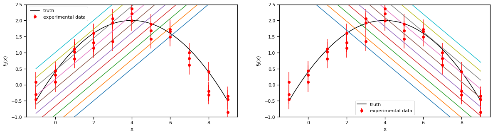
2. Choose a Mixing method¶
[42]:
mix_model = LM(m1, m2, gg, exp_data[0], exp_data[1], method='cdf', n_model_1=1, n_model_2=1, n_mix=2)
[43]:
mix_model.plot_weights(np.array([0.2, 10]),plot_g)
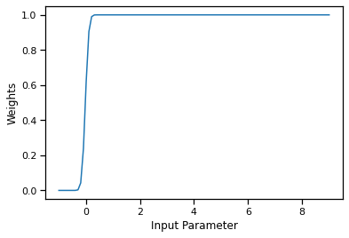
[44]:
#mix_model.mix_loglikelihood_test([0.25])
[45]:
mix_model.mix_loglikelihood(np.array([0.2, 10]), np.array([2]),np.array([1]))
[45]:
1.5822516385693801
[46]:
fig, ax = plt.subplots()
mix_prediction = mix_model.prediction(np.array([0.2, 10]), plot_g, np.array([2]), np.array([1]))
ax.plot(plot_g, m1.predict(plot_g, np.array([2]))[0].flatten(), label='model 1')
ax.plot(plot_g, m2.predict(plot_g, np.array([1]))[0].flatten(), label='model 2')
ax.plot(plot_g, mix_prediction.flatten(), label='BMM prediction')
ax.set_ylim(-2,4)
ax.legend()
[46]:
<matplotlib.legend.Legend at 0x7f980ed50f60>
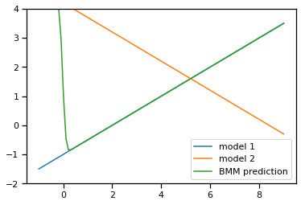
[47]:
# sw = np.linspace(0.01,1,1000)
# likelihood = np.array([mix_model.mix_loglikelihood([s]) for s in sw]).flatten()
# fig, ax = plt.subplots()
# ax.plot(sw,likelihood,label='Mixture likelihood for step function')
3. Estimating the mixture weights¶
[48]:
likelihood = likelihood_wrapper_for_bilby(mix_model)
Here theta_0, theta_1 are CDF mixture function parameters
theta_2 is the model_1 parameter
theta_3 is the model_2 parameter
[49]:
# A few simple setup steps
label = "cdf_mixing"
outdir = "outdir"
priors = dict(theta_0=bilby.core.prior.Normal(0, 1, "theta_0"),
theta_1=bilby.core.prior.Normal(0, 1, "theta_1"),
theta_2=bilby.core.prior.Uniform(1, 6, "theta_2"),
theta_3=bilby.core.prior.Uniform(-2, 3, "theta_3"))
# priors = dict(
# theta_0=bilby.core.prior.Beta(2,2)
# )
# And run sampler
## If file exists, delete it ##
if os.path.exists(f'{outdir}/{label}'):
os.remove(f'{outdir}/{label}')
#shutil.rmtree(outdir)
result = bilby.run_sampler(
likelihood,
priors,
label=label,
outdir=outdir,
sampler="ptemcee",
ntemps=5,
nwalkers=100,
Tmax=10,
burn_in_fixed_discard=500,
nsamples=1000, # This is the number of raw samples
threads=5,
)
result.plot_corner()
14:45 bilby INFO : Running for label 'cdf_mixing', output will be saved to 'outdir'
14:45 bilby INFO : Search parameters:
14:45 bilby INFO : theta_0 = Normal(mu=0, sigma=1, name='theta_0', latex_label='theta_0', unit=None, boundary=None)
14:45 bilby INFO : theta_1 = Normal(mu=0, sigma=1, name='theta_1', latex_label='theta_1', unit=None, boundary=None)
14:45 bilby INFO : theta_2 = Uniform(minimum=1, maximum=6, name='theta_2', latex_label='theta_2', unit=None, boundary=None)
14:45 bilby INFO : theta_3 = Uniform(minimum=-2, maximum=3, name='theta_3', latex_label='theta_3', unit=None, boundary=None)
14:45 bilby INFO : Single likelihood evaluation took 4.710e-04 s
14:45 bilby WARNING : Supplied argument 'npool' not an argument of 'Ptemcee', removing.
14:45 bilby INFO : Using sampler Ptemcee with kwargs {'ntemps': 5, 'nwalkers': 100, 'Tmax': 10, 'betas': None, 'a': 2.0, 'adaptation_lag': 10000, 'adaptation_time': 100, 'random': None, 'adapt': False, 'swap_ratios': False}
14:45 bilby INFO : Using convergence inputs: ConvergenceInputs(autocorr_c=5, autocorr_tol=50, autocorr_tau=1, gradient_tau=0.1, gradient_mean_log_posterior=0.1, Q_tol=1.02, safety=1, burn_in_nact=50, burn_in_fixed_discard=500, mean_logl_frac=0.01, thin_by_nact=0.5, nsamples=1000, ignore_keys_for_tau=None, min_tau=1, niterations_per_check=5)
14:45 bilby INFO : Creating MultiPool with 5 processes
14:45 bilby INFO : Generating pos0 samples
14:45 bilby INFO : Starting to sample
1|0:00:00|nc:2.5e+03|a0:0.00-1.00|swp:0.85-0.99|n:nan<1000|t!nan(+nan,+nan)|q:inf|0.12ms/ev
2|0:00:00|nc:5.0e+03|a0:0.20-0.90|swp:0.85-0.98|n:nan<1000|t!nan(+nan,+nan)|q:inf|0.12ms/ev
3|0:00:00|nc:7.5e+03|a0:0.27-0.80|swp:0.86-0.97|n:nan<1000|t!nan(+nan,+nan)|q:inf|0.12ms/ev
4|0:00:01|nc:1.0e+04|a0:0.20-0.75|swp:0.86-0.97|n:nan<1000|t!nan(+nan,+nan)|q:inf|0.12ms/ev
5|0:00:01|nc:1.2e+04|a0:0.24-0.72|swp:0.86-0.98|n:nan<1000|t!nan(+nan,+nan)|q:inf|0.11ms/ev
6|0:00:01|nc:1.5e+04|a0:0.30-0.73|swp:0.87-0.97|n:nan<1000|t!nan(+nan,+nan)|q:inf|0.11ms/ev
7|0:00:01|nc:1.8e+04|a0:0.29-0.71|swp:0.87-0.97|n:nan<1000|t!nan(+nan,+nan)|q:inf|0.11ms/ev
8|0:00:02|nc:2.0e+04|a0:0.30-0.68|swp:0.86-0.97|n:nan<1000|t!nan(+nan,+nan)|q:inf|0.11ms/ev
9|0:00:02|nc:2.2e+04|a0:0.33-0.69|swp:0.86-0.97|n:nan<1000|t!nan(+nan,+nan)|q:inf|0.11ms/ev
10|0:00:02|nc:2.5e+04|a0:0.34-0.68|swp:0.86-0.97|n:nan<1000|t!nan(+nan,+nan)|q:inf|0.11ms/ev
11|0:00:03|nc:2.8e+04|a0:0.36-0.67|swp:0.86-0.98|n:nan<1000|t!nan(+nan,+nan)|q:inf|0.11ms/ev
12|0:00:03|nc:3.0e+04|a0:0.37-0.70|swp:0.86-0.97|n:nan<1000|t!nan(+nan,+nan)|q:inf|0.11ms/ev
13|0:00:03|nc:3.2e+04|a0:0.37-0.71|swp:0.86-0.98|n:nan<1000|t!nan(+nan,+nan)|q:inf|0.12ms/ev
14|0:00:03|nc:3.5e+04|a0:0.39-0.70|swp:0.86-0.97|n:nan<1000|t!nan(+nan,+nan)|q:inf|0.11ms/ev
15|0:00:04|nc:3.8e+04|a0:0.40-0.69|swp:0.86-0.97|n:nan<1000|t!nan(+nan,+nan)|q:inf|0.11ms/ev
16|0:00:04|nc:4.0e+04|a0:0.41-0.70|swp:0.86-0.98|n:nan<1000|t!nan(+nan,+nan)|q:inf|0.11ms/ev
17|0:00:04|nc:4.2e+04|a0:0.40-0.71|swp:0.86-0.98|n:nan<1000|t!nan(+nan,+nan)|q:inf|0.12ms/ev
18|0:00:05|nc:4.5e+04|a0:0.40-0.70|swp:0.86-0.98|n:nan<1000|t!nan(+nan,+nan)|q:inf|0.12ms/ev
19|0:00:05|nc:4.8e+04|a0:0.40-0.69|swp:0.86-0.97|n:nan<1000|t!nan(+nan,+nan)|q:inf|0.12ms/ev
20|0:00:05|nc:5.0e+04|a0:0.40-0.67|swp:0.86-0.97|n:nan<1000|t!nan(+nan,+nan)|q:inf|0.11ms/ev
21|0:00:06|nc:5.2e+04|a0:0.40-0.65|swp:0.86-0.97|n:nan<1000|t!nan(+nan,+nan)|q:inf|0.12ms/ev
22|0:00:06|nc:5.5e+04|a0:0.40-0.64|swp:0.86-0.97|n:nan<1000|t!nan(+nan,+nan)|q:inf|0.12ms/ev
23|0:00:06|nc:5.8e+04|a0:0.40-0.64|swp:0.86-0.97|n:nan<1000|t!nan(+nan,+nan)|q:inf|0.12ms/ev
24|0:00:06|nc:6.0e+04|a0:0.41-0.64|swp:0.86-0.97|n:nan<1000|t!nan(+nan,+nan)|q:inf|0.12ms/ev
25|0:00:07|nc:6.2e+04|a0:0.41-0.64|swp:0.86-0.97|n:nan<1000|t!nan(+nan,+nan)|q:inf|0.13ms/ev
26|0:00:07|nc:6.5e+04|a0:0.42-0.63|swp:0.86-0.97|n:nan<1000|t!nan(+nan,+nan)|q:inf|0.13ms/ev
27|0:00:07|nc:6.8e+04|a0:0.41-0.63|swp:0.86-0.97|n:nan<1000|t!nan(+nan,+nan)|q:inf|0.13ms/ev
28|0:00:08|nc:7.0e+04|a0:0.42-0.62|swp:0.86-0.97|n:nan<1000|t!nan(+nan,+nan)|q:inf|0.13ms/ev
29|0:00:08|nc:7.2e+04|a0:0.42-0.61|swp:0.86-0.97|n:nan<1000|t!nan(+nan,+nan)|q:inf|0.13ms/ev
30|0:00:08|nc:7.5e+04|a0:0.43-0.62|swp:0.86-0.97|n:nan<1000|t!nan(+nan,+nan)|q:inf|0.13ms/ev
31|0:00:09|nc:7.8e+04|a0:0.41-0.62|swp:0.86-0.97|n:nan<1000|t!nan(+nan,+nan)|q:inf|0.13ms/ev
32|0:00:09|nc:8.0e+04|a0:0.41-0.62|swp:0.86-0.97|n:nan<1000|t!nan(+nan,+nan)|q:inf|0.13ms/ev
33|0:00:09|nc:8.2e+04|a0:0.41-0.63|swp:0.86-0.97|n:nan<1000|t!nan(+nan,+nan)|q:inf|0.13ms/ev
34|0:00:10|nc:8.5e+04|a0:0.42-0.62|swp:0.86-0.97|n:nan<1000|t!nan(+nan,+nan)|q:inf|0.13ms/ev
35|0:00:10|nc:8.8e+04|a0:0.42-0.62|swp:0.86-0.97|n:nan<1000|t!nan(+nan,+nan)|q:inf|0.13ms/ev
36|0:00:10|nc:9.0e+04|a0:0.41-0.63|swp:0.86-0.97|n:nan<1000|t!nan(+nan,+nan)|q:inf|0.13ms/ev
37|0:00:11|nc:9.2e+04|a0:0.41-0.63|swp:0.86-0.97|n:nan<1000|t!nan(+nan,+nan)|q:inf|0.13ms/ev
38|0:00:11|nc:9.5e+04|a0:0.42-0.63|swp:0.86-0.97|n:nan<1000|t!nan(+nan,+nan)|q:inf|0.13ms/ev
39|0:00:11|nc:9.8e+04|a0:0.42-0.62|swp:0.86-0.97|n:nan<1000|t!nan(+nan,+nan)|q:inf|0.13ms/ev
40|0:00:12|nc:1.0e+05|a0:0.41-0.60|swp:0.86-0.97|n:nan<1000|t!nan(+nan,+nan)|q:inf|0.13ms/ev
41|0:00:12|nc:1.0e+05|a0:0.42-0.60|swp:0.86-0.97|n:nan<1000|t!nan(+nan,+nan)|q:inf|0.13ms/ev
42|0:00:12|nc:1.0e+05|a0:0.42-0.60|swp:0.86-0.97|n:nan<1000|t!nan(+nan,+nan)|q:inf|0.14ms/ev
43|0:00:13|nc:1.1e+05|a0:0.42-0.60|swp:0.86-0.97|n:nan<1000|t!nan(+nan,+nan)|q:inf|0.14ms/ev
44|0:00:13|nc:1.1e+05|a0:0.42-0.59|swp:0.86-0.97|n:nan<1000|t!nan(+nan,+nan)|q:inf|0.14ms/ev
45|0:00:13|nc:1.1e+05|a0:0.42-0.59|swp:0.86-0.97|n:nan<1000|t!nan(+nan,+nan)|q:inf|0.14ms/ev
46|0:00:14|nc:1.2e+05|a0:0.43-0.59|swp:0.86-0.97|n:nan<1000|t!nan(+nan,+nan)|q:inf|0.14ms/ev
47|0:00:14|nc:1.2e+05|a0:0.44-0.60|swp:0.86-0.97|n:nan<1000|t!nan(+nan,+nan)|q:inf|0.13ms/ev
48|0:00:14|nc:1.2e+05|a0:0.44-0.59|swp:0.86-0.97|n:nan<1000|t!nan(+nan,+nan)|q:inf|0.13ms/ev
49|0:00:15|nc:1.2e+05|a0:0.45-0.60|swp:0.86-0.97|n:nan<1000|t!nan(+nan,+nan)|q:inf|0.13ms/ev
50|0:00:15|nc:1.2e+05|a0:0.45-0.60|swp:0.86-0.97|n:nan<1000|t!nan(+nan,+nan)|q:inf|0.13ms/ev
51|0:00:15|nc:1.3e+05|a0:0.44-0.60|swp:0.86-0.97|n:nan<1000|t!nan(+nan,+nan)|q:inf|0.13ms/ev
52|0:00:16|nc:1.3e+05|a0:0.45-0.60|swp:0.86-0.97|n:nan<1000|t!nan(+nan,+nan)|q:inf|0.16ms/ev
53|0:00:16|nc:1.3e+05|a0:0.45-0.59|swp:0.86-0.97|n:nan<1000|t!nan(+nan,+nan)|q:inf|0.16ms/ev
54|0:00:17|nc:1.4e+05|a0:0.45-0.59|swp:0.86-0.97|n:nan<1000|t!nan(+nan,+nan)|q:inf|0.16ms/ev
55|0:00:17|nc:1.4e+05|a0:0.45-0.58|swp:0.86-0.97|n:nan<1000|t!nan(+nan,+nan)|q:inf|0.17ms/ev
56|0:00:18|nc:1.4e+05|a0:0.44-0.58|swp:0.86-0.97|n:nan<1000|t!nan(+nan,+nan)|q:inf|0.17ms/ev
57|0:00:18|nc:1.4e+05|a0:0.44-0.58|swp:0.86-0.97|n:nan<1000|t!nan(+nan,+nan)|q:inf|0.19ms/ev
58|0:00:18|nc:1.4e+05|a0:0.44-0.58|swp:0.86-0.97|n:nan<1000|t!nan(+nan,+nan)|q:inf|0.17ms/ev
59|0:00:19|nc:1.5e+05|a0:0.44-0.58|swp:0.86-0.97|n:nan<1000|t!nan(+nan,+nan)|q:inf|0.18ms/ev
60|0:00:19|nc:1.5e+05|a0:0.44-0.57|swp:0.86-0.97|n:nan<1000|t!nan(+nan,+nan)|q:inf|0.17ms/ev
61|0:00:20|nc:1.5e+05|a0:0.44-0.57|swp:0.86-0.97|n:nan<1000|t!nan(+nan,+nan)|q:inf|0.19ms/ev
62|0:00:20|nc:1.6e+05|a0:0.44-0.57|swp:0.86-0.97|n:nan<1000|t!nan(+nan,+nan)|q:inf|0.19ms/ev
63|0:00:21|nc:1.6e+05|a0:0.45-0.57|swp:0.86-0.97|n:nan<1000|t!nan(+nan,+nan)|q:inf|0.18ms/ev
64|0:00:21|nc:1.6e+05|a0:0.45-0.57|swp:0.86-0.97|n:nan<1000|t!nan(+nan,+nan)|q:inf|0.15ms/ev
65|0:00:21|nc:1.6e+05|a0:0.44-0.57|swp:0.86-0.97|n:nan<1000|t!nan(+nan,+nan)|q:inf|0.14ms/ev
66|0:00:22|nc:1.6e+05|a0:0.44-0.57|swp:0.86-0.97|n:nan<1000|t!nan(+nan,+nan)|q:inf|0.14ms/ev
67|0:00:22|nc:1.7e+05|a0:0.44-0.57|swp:0.86-0.97|n:nan<1000|t!nan(+nan,+nan)|q:inf|0.14ms/ev
68|0:00:22|nc:1.7e+05|a0:0.44-0.57|swp:0.86-0.97|n:nan<1000|t!nan(+nan,+nan)|q:inf|0.13ms/ev
69|0:00:23|nc:1.7e+05|a0:0.44-0.57|swp:0.86-0.97|n:nan<1000|t!nan(+nan,+nan)|q:inf|0.13ms/ev
70|0:00:23|nc:1.8e+05|a0:0.43-0.58|swp:0.86-0.97|n:nan<1000|t!nan(+nan,+nan)|q:inf|0.13ms/ev
71|0:00:23|nc:1.8e+05|a0:0.44-0.58|swp:0.86-0.97|n:nan<1000|t!nan(+nan,+nan)|q:inf|0.13ms/ev
72|0:00:24|nc:1.8e+05|a0:0.44-0.58|swp:0.86-0.97|n:nan<1000|t!nan(+nan,+nan)|q:inf|0.13ms/ev
73|0:00:24|nc:1.8e+05|a0:0.44-0.58|swp:0.86-0.97|n:nan<1000|t!nan(+nan,+nan)|q:inf|0.14ms/ev
74|0:00:24|nc:1.8e+05|a0:0.44-0.57|swp:0.86-0.97|n:nan<1000|t!nan(+nan,+nan)|q:inf|0.15ms/ev
75|0:00:25|nc:1.9e+05|a0:0.43-0.57|swp:0.86-0.97|n:nan<1000|t!nan(+nan,+nan)|q:inf|0.15ms/ev
76|0:00:25|nc:1.9e+05|a0:0.43-0.57|swp:0.86-0.97|n:nan<1000|t!nan(+nan,+nan)|q:inf|0.15ms/ev
77|0:00:26|nc:1.9e+05|a0:0.43-0.56|swp:0.86-0.97|n:nan<1000|t!nan(+nan,+nan)|q:inf|0.15ms/ev
78|0:00:26|nc:2.0e+05|a0:0.43-0.56|swp:0.86-0.97|n:nan<1000|t!nan(+nan,+nan)|q:inf|0.15ms/ev
79|0:00:26|nc:2.0e+05|a0:0.44-0.56|swp:0.86-0.97|n:nan<1000|t!nan(+nan,+nan)|q:inf|0.15ms/ev
80|0:00:27|nc:2.0e+05|a0:0.43-0.56|swp:0.86-0.97|n:nan<1000|t!nan(+nan,+nan)|q:inf|0.15ms/ev
81|0:00:27|nc:2.0e+05|a0:0.43-0.56|swp:0.86-0.97|n:nan<1000|t!nan(+nan,+nan)|q:inf|0.19ms/ev
82|0:00:28|nc:2.0e+05|a0:0.43-0.56|swp:0.86-0.97|n:nan<1000|t!nan(+nan,+nan)|q:inf|0.22ms/ev
83|0:00:29|nc:2.1e+05|a0:0.43-0.56|swp:0.86-0.97|n:nan<1000|t!nan(+nan,+nan)|q:inf|0.26ms/ev
84|0:00:29|nc:2.1e+05|a0:0.43-0.56|swp:0.86-0.97|n:nan<1000|t!nan(+nan,+nan)|q:inf|0.23ms/ev
85|0:00:30|nc:2.1e+05|a0:0.44-0.56|swp:0.86-0.97|n:nan<1000|t!nan(+nan,+nan)|q:inf|0.22ms/ev
86|0:00:30|nc:2.2e+05|a0:0.44-0.56|swp:0.86-0.97|n:nan<1000|t!nan(+nan,+nan)|q:inf|0.20ms/ev
87|0:00:31|nc:2.2e+05|a0:0.43-0.56|swp:0.86-0.97|n:nan<1000|t!nan(+nan,+nan)|q:inf|0.19ms/ev
88|0:00:31|nc:2.2e+05|a0:0.44-0.56|swp:0.86-0.97|n:nan<1000|t!nan(+nan,+nan)|q:inf|0.17ms/ev
89|0:00:31|nc:2.2e+05|a0:0.44-0.56|swp:0.86-0.97|n:nan<1000|t!nan(+nan,+nan)|q:inf|0.15ms/ev
90|0:00:32|nc:2.2e+05|a0:0.44-0.55|swp:0.86-0.97|n:nan<1000|t!nan(+nan,+nan)|q:inf|0.14ms/ev
91|0:00:32|nc:2.3e+05|a0:0.44-0.55|swp:0.86-0.97|n:nan<1000|t!nan(+nan,+nan)|q:inf|0.16ms/ev
92|0:00:32|nc:2.3e+05|a0:0.43-0.55|swp:0.86-0.97|n:nan<1000|t!nan(+nan,+nan)|q:inf|0.16ms/ev
93|0:00:33|nc:2.3e+05|a0:0.44-0.56|swp:0.86-0.97|n:nan<1000|t!nan(+nan,+nan)|q:inf|0.16ms/ev
94|0:00:33|nc:2.4e+05|a0:0.44-0.56|swp:0.86-0.97|n:nan<1000|t!nan(+nan,+nan)|q:inf|0.15ms/ev
95|0:00:34|nc:2.4e+05|a0:0.44-0.55|swp:0.86-0.97|n:nan<1000|t!nan(+nan,+nan)|q:inf|0.16ms/ev
96|0:00:34|nc:2.4e+05|a0:0.44-0.55|swp:0.86-0.97|n:nan<1000|t!nan(+nan,+nan)|q:inf|0.16ms/ev
97|0:00:34|nc:2.4e+05|a0:0.44-0.55|swp:0.86-0.97|n:nan<1000|t!nan(+nan,+nan)|q:inf|0.17ms/ev
98|0:00:35|nc:2.4e+05|a0:0.44-0.55|swp:0.86-0.97|n:nan<1000|t!nan(+nan,+nan)|q:inf|0.19ms/ev
99|0:00:36|nc:2.5e+05|a0:0.43-0.55|swp:0.86-0.97|n:nan<1000|t!nan(+nan,+nan)|q:inf|0.21ms/ev
100|0:00:36|nc:2.5e+05|a0:0.43-0.55|swp:0.86-0.97|n:nan<1000|t!nan(+nan,+nan)|q:inf|0.22ms/ev
101|0:00:37|nc:2.5e+05|a0:0.44-0.55|swp:0.86-0.97|n:nan<1000|t!nan(+nan,+nan)|q:inf|0.19ms/ev
102|0:00:37|nc:2.6e+05|a0:0.44-0.55|swp:0.86-0.97|n:nan<1000|t!nan(+nan,+nan)|q:inf|0.17ms/ev
103|0:00:37|nc:2.6e+05|a0:0.44-0.55|swp:0.86-0.97|n:nan<1000|t!nan(+nan,+nan)|q:inf|0.15ms/ev
104|0:00:38|nc:2.6e+05|a0:0.44-0.55|swp:0.86-0.97|n:nan<1000|t!nan(+nan,+nan)|q:inf|0.15ms/ev
105|0:00:38|nc:2.6e+05|a0:0.44-0.55|swp:0.86-0.97|n:nan<1000|t!nan(+nan,+nan)|q:inf|0.16ms/ev
106|0:00:39|nc:2.6e+05|a0:0.44-0.55|swp:0.86-0.97|n:nan<1000|t!nan(+nan,+nan)|q:inf|0.18ms/ev
107|0:00:39|nc:2.7e+05|a0:0.44-0.55|swp:0.86-0.97|n:nan<1000|t!nan(+nan,+nan)|q:inf|0.18ms/ev
108|0:00:39|nc:2.7e+05|a0:0.44-0.55|swp:0.86-0.97|n:nan<1000|t!nan(+nan,+nan)|q:inf|0.18ms/ev
109|0:00:40|nc:2.7e+05|a0:0.44-0.55|swp:0.86-0.97|n:nan<1000|t!nan(+nan,+nan)|q:inf|0.16ms/ev
110|0:00:40|nc:2.8e+05|a0:0.44-0.55|swp:0.86-0.97|n:nan<1000|t!nan(+nan,+nan)|q:inf|0.15ms/ev
111|0:00:41|nc:2.8e+05|a0:0.44-0.55|swp:0.86-0.97|n:nan<1000|t!nan(+nan,+nan)|q:inf|0.15ms/ev
112|0:00:41|nc:2.8e+05|a0:0.44-0.55|swp:0.86-0.97|n:nan<1000|t!nan(+nan,+nan)|q:inf|0.15ms/ev
113|0:00:41|nc:2.8e+05|a0:0.44-0.55|swp:0.86-0.97|n:nan<1000|t!nan(+nan,+nan)|q:inf|0.15ms/ev
114|0:00:42|nc:2.8e+05|a0:0.44-0.55|swp:0.86-0.97|n:nan<1000|t!nan(+nan,+nan)|q:inf|0.14ms/ev
115|0:00:42|nc:2.9e+05|a0:0.44-0.55|swp:0.86-0.97|n:nan<1000|t!nan(+nan,+nan)|q:inf|0.14ms/ev
116|0:00:42|nc:2.9e+05|a0:0.44-0.55|swp:0.86-0.97|n:nan<1000|t!nan(+nan,+nan)|q:inf|0.14ms/ev
117|0:00:43|nc:2.9e+05|a0:0.45-0.54|swp:0.86-0.97|n:nan<1000|t!nan(+nan,+nan)|q:inf|0.15ms/ev
118|0:00:43|nc:3.0e+05|a0:0.45-0.54|swp:0.86-0.97|n:nan<1000|t!nan(+nan,+nan)|q:inf|0.15ms/ev
119|0:00:44|nc:3.0e+05|a0:0.45-0.54|swp:0.86-0.97|n:nan<1000|t!nan(+nan,+nan)|q:inf|0.15ms/ev
120|0:00:44|nc:3.0e+05|a0:0.45-0.54|swp:0.86-0.97|n:nan<1000|t!nan(+nan,+nan)|q:inf|0.16ms/ev
121|0:00:44|nc:3.0e+05|a0:0.45-0.55|swp:0.86-0.97|n:nan<1000|t!nan(+nan,+nan)|q:inf|0.16ms/ev
122|0:00:45|nc:3.0e+05|a0:0.45-0.55|swp:0.86-0.97|n:nan<1000|t!nan(+nan,+nan)|q:inf|0.18ms/ev
123|0:00:45|nc:3.1e+05|a0:0.45-0.55|swp:0.86-0.97|n:nan<1000|t!nan(+nan,+nan)|q:inf|0.17ms/ev
124|0:00:46|nc:3.1e+05|a0:0.45-0.55|swp:0.86-0.97|n:nan<1000|t!nan(+nan,+nan)|q:inf|0.18ms/ev
125|0:00:46|nc:3.1e+05|a0:0.45-0.55|swp:0.86-0.97|n:nan<1000|t!nan(+nan,+nan)|q:inf|0.16ms/ev
126|0:00:46|nc:3.2e+05|a0:0.45-0.55|swp:0.86-0.97|n:nan<1000|t!nan(+nan,+nan)|q:inf|0.16ms/ev
127|0:00:47|nc:3.2e+05|a0:0.46-0.55|swp:0.86-0.97|n:nan<1000|t!nan(+nan,+nan)|q:inf|0.14ms/ev
128|0:00:47|nc:3.2e+05|a0:0.45-0.55|swp:0.86-0.97|n:nan<1000|t!nan(+nan,+nan)|q:inf|0.14ms/ev
129|0:00:48|nc:3.2e+05|a0:0.46-0.55|swp:0.86-0.97|n:nan<1000|t!nan(+nan,+nan)|q:inf|0.15ms/ev
130|0:00:48|nc:3.2e+05|a0:0.46-0.55|swp:0.86-0.97|n:nan<1000|t!nan(+nan,+nan)|q:inf|0.16ms/ev
131|0:00:48|nc:3.3e+05|a0:0.45-0.55|swp:0.86-0.97|n:nan<1000|t!nan(+nan,+nan)|q:inf|0.16ms/ev
132|0:00:49|nc:3.3e+05|a0:0.45-0.55|swp:0.86-0.97|n:nan<1000|t!nan(+nan,+nan)|q:inf|0.16ms/ev
133|0:00:49|nc:3.3e+05|a0:0.45-0.55|swp:0.86-0.97|n:nan<1000|t!nan(+nan,+nan)|q:inf|0.16ms/ev
134|0:00:50|nc:3.4e+05|a0:0.46-0.55|swp:0.86-0.97|n:nan<1000|t!nan(+nan,+nan)|q:inf|0.18ms/ev
135|0:00:50|nc:3.4e+05|a0:0.46-0.55|swp:0.86-0.97|n:nan<1000|t!nan(+nan,+nan)|q:inf|0.19ms/ev
136|0:00:51|nc:3.4e+05|a0:0.46-0.55|swp:0.86-0.97|n:nan<1000|t!nan(+nan,+nan)|q:inf|0.19ms/ev
137|0:00:51|nc:3.4e+05|a0:0.46-0.55|swp:0.86-0.97|n:nan<1000|t!nan(+nan,+nan)|q:inf|0.16ms/ev
138|0:00:51|nc:3.4e+05|a0:0.46-0.55|swp:0.86-0.97|n:nan<1000|t!nan(+nan,+nan)|q:inf|0.15ms/ev
139|0:00:52|nc:3.5e+05|a0:0.46-0.55|swp:0.86-0.97|n:nan<1000|t!nan(+nan,+nan)|q:inf|0.14ms/ev
140|0:00:52|nc:3.5e+05|a0:0.46-0.55|swp:0.86-0.97|n:nan<1000|t!nan(+nan,+nan)|q:inf|0.14ms/ev
141|0:00:52|nc:3.5e+05|a0:0.46-0.55|swp:0.86-0.97|n:nan<1000|t!nan(+nan,+nan)|q:inf|0.14ms/ev
142|0:00:53|nc:3.6e+05|a0:0.46-0.55|swp:0.86-0.97|n:nan<1000|t!nan(+nan,+nan)|q:inf|0.14ms/ev
143|0:00:53|nc:3.6e+05|a0:0.46-0.55|swp:0.86-0.97|n:nan<1000|t!nan(+nan,+nan)|q:inf|0.14ms/ev
144|0:00:53|nc:3.6e+05|a0:0.46-0.54|swp:0.86-0.97|n:nan<1000|t!nan(+nan,+nan)|q:inf|0.14ms/ev
145|0:00:54|nc:3.6e+05|a0:0.46-0.54|swp:0.86-0.97|n:nan<1000|t!nan(+nan,+nan)|q:inf|0.14ms/ev
146|0:00:54|nc:3.6e+05|a0:0.46-0.54|swp:0.86-0.97|n:nan<1000|t!nan(+nan,+nan)|q:inf|0.14ms/ev
147|0:00:54|nc:3.7e+05|a0:0.46-0.54|swp:0.86-0.97|n:nan<1000|t!nan(+nan,+nan)|q:inf|0.14ms/ev
148|0:00:55|nc:3.7e+05|a0:0.46-0.54|swp:0.86-0.97|n:nan<1000|t!nan(+nan,+nan)|q:inf|0.14ms/ev
149|0:00:55|nc:3.7e+05|a0:0.46-0.54|swp:0.86-0.97|n:nan<1000|t!nan(+nan,+nan)|q:inf|0.14ms/ev
150|0:00:55|nc:3.8e+05|a0:0.46-0.54|swp:0.86-0.97|n:nan<1000|t!nan(+nan,+nan)|q:inf|0.15ms/ev
151|0:00:56|nc:3.8e+05|a0:0.46-0.54|swp:0.86-0.97|n:nan<1000|t!nan(+nan,+nan)|q:inf|0.14ms/ev
152|0:00:56|nc:3.8e+05|a0:0.46-0.54|swp:0.86-0.97|n:nan<1000|t!nan(+nan,+nan)|q:inf|0.14ms/ev
153|0:00:57|nc:3.8e+05|a0:0.46-0.54|swp:0.86-0.97|n:nan<1000|t!nan(+nan,+nan)|q:inf|0.14ms/ev
154|0:00:57|nc:3.8e+05|a0:0.46-0.54|swp:0.86-0.97|n:nan<1000|t!nan(+nan,+nan)|q:inf|0.14ms/ev
155|0:00:57|nc:3.9e+05|a0:0.46-0.54|swp:0.86-0.97|n:nan<1000|t!nan(+nan,+nan)|q:inf|0.14ms/ev
156|0:00:58|nc:3.9e+05|a0:0.46-0.54|swp:0.86-0.97|n:nan<1000|t!nan(+nan,+nan)|q:inf|0.14ms/ev
157|0:00:58|nc:3.9e+05|a0:0.46-0.54|swp:0.86-0.97|n:nan<1000|t!nan(+nan,+nan)|q:inf|0.14ms/ev
158|0:00:58|nc:4.0e+05|a0:0.46-0.54|swp:0.86-0.97|n:nan<1000|t!nan(+nan,+nan)|q:inf|0.14ms/ev
159|0:00:59|nc:4.0e+05|a0:0.46-0.54|swp:0.86-0.97|n:nan<1000|t!nan(+nan,+nan)|q:inf|0.14ms/ev
160|0:00:59|nc:4.0e+05|a0:0.46-0.54|swp:0.86-0.97|n:nan<1000|t!nan(+nan,+nan)|q:inf|0.14ms/ev
161|0:00:59|nc:4.0e+05|a0:0.46-0.54|swp:0.86-0.97|n:nan<1000|t!nan(+nan,+nan)|q:inf|0.14ms/ev
162|0:01:00|nc:4.0e+05|a0:0.46-0.55|swp:0.86-0.97|n:nan<1000|t!nan(+nan,+nan)|q:inf|0.14ms/ev
163|0:01:00|nc:4.1e+05|a0:0.46-0.55|swp:0.86-0.97|n:nan<1000|t!nan(+nan,+nan)|q:inf|0.14ms/ev
164|0:01:00|nc:4.1e+05|a0:0.46-0.55|swp:0.86-0.97|n:nan<1000|t!nan(+nan,+nan)|q:inf|0.14ms/ev
165|0:01:01|nc:4.1e+05|a0:0.46-0.54|swp:0.86-0.97|n:nan<1000|t!nan(+nan,+nan)|q:inf|0.14ms/ev
166|0:01:01|nc:4.2e+05|a0:0.46-0.55|swp:0.86-0.97|n:nan<1000|t!nan(+nan,+nan)|q:inf|0.14ms/ev
167|0:01:01|nc:4.2e+05|a0:0.46-0.55|swp:0.86-0.97|n:nan<1000|t!nan(+nan,+nan)|q:inf|0.14ms/ev
168|0:01:02|nc:4.2e+05|a0:0.46-0.55|swp:0.86-0.97|n:nan<1000|t!nan(+nan,+nan)|q:inf|0.14ms/ev
169|0:01:02|nc:4.2e+05|a0:0.46-0.54|swp:0.86-0.97|n:nan<1000|t!nan(+nan,+nan)|q:inf|0.14ms/ev
170|0:01:03|nc:4.2e+05|a0:0.46-0.54|swp:0.86-0.97|n:nan<1000|t!nan(+nan,+nan)|q:inf|0.15ms/ev
171|0:01:03|nc:4.3e+05|a0:0.46-0.54|swp:0.86-0.97|n:nan<1000|t!nan(+nan,+nan)|q:inf|0.14ms/ev
172|0:01:03|nc:4.3e+05|a0:0.46-0.55|swp:0.86-0.97|n:nan<1000|t!nan(+nan,+nan)|q:inf|0.14ms/ev
173|0:01:04|nc:4.3e+05|a0:0.46-0.55|swp:0.86-0.97|n:nan<1000|t!nan(+nan,+nan)|q:inf|0.14ms/ev
174|0:01:04|nc:4.4e+05|a0:0.46-0.55|swp:0.86-0.97|n:nan<1000|t!nan(+nan,+nan)|q:inf|0.15ms/ev
175|0:01:04|nc:4.4e+05|a0:0.46-0.54|swp:0.86-0.97|n:nan<1000|t!nan(+nan,+nan)|q:inf|0.15ms/ev
176|0:01:05|nc:4.4e+05|a0:0.46-0.54|swp:0.86-0.97|n:nan<1000|t!nan(+nan,+nan)|q:inf|0.14ms/ev
177|0:01:05|nc:4.4e+05|a0:0.46-0.54|swp:0.86-0.97|n:nan<1000|t!nan(+nan,+nan)|q:inf|0.14ms/ev
178|0:01:05|nc:4.4e+05|a0:0.46-0.54|swp:0.86-0.97|n:nan<1000|t!nan(+nan,+nan)|q:inf|0.14ms/ev
179|0:01:06|nc:4.5e+05|a0:0.46-0.54|swp:0.86-0.97|n:nan<1000|t!nan(+nan,+nan)|q:inf|0.14ms/ev
180|0:01:06|nc:4.5e+05|a0:0.46-0.54|swp:0.86-0.97|n:nan<1000|t!nan(+nan,+nan)|q:inf|0.14ms/ev
181|0:01:06|nc:4.5e+05|a0:0.46-0.54|swp:0.86-0.97|n:nan<1000|t!nan(+nan,+nan)|q:inf|0.14ms/ev
182|0:01:07|nc:4.6e+05|a0:0.46-0.54|swp:0.86-0.97|n:nan<1000|t!nan(+nan,+nan)|q:inf|0.14ms/ev
183|0:01:07|nc:4.6e+05|a0:0.46-0.54|swp:0.86-0.97|n:nan<1000|t!nan(+nan,+nan)|q:inf|0.14ms/ev
184|0:01:07|nc:4.6e+05|a0:0.46-0.54|swp:0.86-0.97|n:nan<1000|t!nan(+nan,+nan)|q:inf|0.14ms/ev
185|0:01:08|nc:4.6e+05|a0:0.46-0.54|swp:0.86-0.97|n:nan<1000|t!nan(+nan,+nan)|q:inf|0.14ms/ev
186|0:01:08|nc:4.6e+05|a0:0.46-0.54|swp:0.86-0.97|n:nan<1000|t!nan(+nan,+nan)|q:inf|0.14ms/ev
187|0:01:09|nc:4.7e+05|a0:0.46-0.54|swp:0.86-0.97|n:nan<1000|t!nan(+nan,+nan)|q:inf|0.14ms/ev
188|0:01:09|nc:4.7e+05|a0:0.46-0.54|swp:0.86-0.97|n:nan<1000|t!nan(+nan,+nan)|q:inf|0.14ms/ev
189|0:01:09|nc:4.7e+05|a0:0.46-0.54|swp:0.86-0.97|n:nan<1000|t!nan(+nan,+nan)|q:inf|0.14ms/ev
190|0:01:10|nc:4.8e+05|a0:0.45-0.54|swp:0.86-0.97|n:nan<1000|t!nan(+nan,+nan)|q:inf|0.14ms/ev
191|0:01:10|nc:4.8e+05|a0:0.46-0.54|swp:0.86-0.97|n:nan<1000|t!nan(+nan,+nan)|q:inf|0.14ms/ev
192|0:01:10|nc:4.8e+05|a0:0.46-0.54|swp:0.86-0.97|n:nan<1000|t!nan(+nan,+nan)|q:inf|0.14ms/ev
193|0:01:11|nc:4.8e+05|a0:0.46-0.54|swp:0.86-0.97|n:nan<1000|t!nan(+nan,+nan)|q:inf|0.14ms/ev
194|0:01:11|nc:4.8e+05|a0:0.46-0.54|swp:0.86-0.97|n:nan<1000|t!nan(+nan,+nan)|q:inf|0.15ms/ev
195|0:01:11|nc:4.9e+05|a0:0.46-0.54|swp:0.86-0.97|n:nan<1000|t!nan(+nan,+nan)|q:inf|0.15ms/ev
196|0:01:12|nc:4.9e+05|a0:0.46-0.54|swp:0.86-0.97|n:nan<1000|t!nan(+nan,+nan)|q:inf|0.14ms/ev
197|0:01:12|nc:4.9e+05|a0:0.46-0.54|swp:0.86-0.97|n:nan<1000|t!nan(+nan,+nan)|q:inf|0.14ms/ev
198|0:01:12|nc:5.0e+05|a0:0.46-0.54|swp:0.86-0.97|n:nan<1000|t!nan(+nan,+nan)|q:inf|0.14ms/ev
199|0:01:13|nc:5.0e+05|a0:0.46-0.54|swp:0.86-0.97|n:nan<1000|t!nan(+nan,+nan)|q:inf|0.14ms/ev
200|0:01:13|nc:5.0e+05|a0:0.46-0.54|swp:0.86-0.97|n:nan<1000|t!nan(+nan,+nan)|q:inf|0.14ms/ev
201|0:01:14|nc:5.0e+05|a0:0.45-0.54|swp:0.86-0.97|n:nan<1000|t!nan(+nan,+nan)|q:inf|0.14ms/ev
202|0:01:14|nc:5.0e+05|a0:0.46-0.54|swp:0.86-0.97|n:nan<1000|t!nan(+nan,+nan)|q:inf|0.14ms/ev
203|0:01:14|nc:5.1e+05|a0:0.46-0.54|swp:0.86-0.97|n:nan<1000|t!nan(+nan,+nan)|q:inf|0.14ms/ev
204|0:01:15|nc:5.1e+05|a0:0.45-0.54|swp:0.86-0.97|n:nan<1000|t!nan(+nan,+nan)|q:inf|0.14ms/ev
205|0:01:15|nc:5.1e+05|a0:0.46-0.53|swp:0.86-0.97|n:nan<1000|t!nan(+nan,+nan)|q:inf|0.14ms/ev
206|0:01:15|nc:5.2e+05|a0:0.46-0.53|swp:0.86-0.97|n:nan<1000|t!nan(+nan,+nan)|q:inf|0.14ms/ev
207|0:01:16|nc:5.2e+05|a0:0.46-0.53|swp:0.86-0.97|n:nan<1000|t!nan(+nan,+nan)|q:inf|0.14ms/ev
208|0:01:16|nc:5.2e+05|a0:0.46-0.54|swp:0.86-0.97|n:nan<1000|t!nan(+nan,+nan)|q:inf|0.14ms/ev
209|0:01:16|nc:5.2e+05|a0:0.46-0.53|swp:0.86-0.97|n:nan<1000|t!nan(+nan,+nan)|q:inf|0.15ms/ev
210|0:01:17|nc:5.2e+05|a0:0.46-0.54|swp:0.86-0.97|n:nan<1000|t!nan(+nan,+nan)|q:inf|0.16ms/ev
211|0:01:17|nc:5.3e+05|a0:0.46-0.53|swp:0.86-0.97|n:nan<1000|t!nan(+nan,+nan)|q:inf|0.16ms/ev
212|0:01:18|nc:5.3e+05|a0:0.46-0.53|swp:0.86-0.97|n:nan<1000|t!nan(+nan,+nan)|q:inf|0.16ms/ev
213|0:01:18|nc:5.3e+05|a0:0.46-0.53|swp:0.86-0.97|n:nan<1000|t!nan(+nan,+nan)|q:inf|0.17ms/ev
214|0:01:18|nc:5.4e+05|a0:0.46-0.53|swp:0.86-0.97|n:nan<1000|t!nan(+nan,+nan)|q:inf|0.17ms/ev
215|0:01:19|nc:5.4e+05|a0:0.46-0.53|swp:0.86-0.97|n:nan<1000|t!nan(+nan,+nan)|q:inf|0.16ms/ev
216|0:01:19|nc:5.4e+05|a0:0.46-0.53|swp:0.86-0.97|n:nan<1000|t!nan(+nan,+nan)|q:inf|0.18ms/ev
217|0:01:20|nc:5.4e+05|a0:0.46-0.53|swp:0.86-0.97|n:nan<1000|t!nan(+nan,+nan)|q:inf|0.21ms/ev
218|0:01:20|nc:5.4e+05|a0:0.46-0.53|swp:0.86-0.97|n:nan<1000|t!nan(+nan,+nan)|q:inf|0.22ms/ev
219|0:01:21|nc:5.5e+05|a0:0.46-0.53|swp:0.86-0.97|n:nan<1000|t!nan(+nan,+nan)|q:inf|0.19ms/ev
220|0:01:21|nc:5.5e+05|a0:0.46-0.53|swp:0.86-0.97|n:nan<1000|t!nan(+nan,+nan)|q:inf|0.16ms/ev
221|0:01:22|nc:5.5e+05|a0:0.46-0.53|swp:0.86-0.97|n:nan<1000|t!nan(+nan,+nan)|q:inf|0.15ms/ev
222|0:01:22|nc:5.6e+05|a0:0.46-0.53|swp:0.86-0.97|n:nan<1000|t!nan(+nan,+nan)|q:inf|0.15ms/ev
223|0:01:22|nc:5.6e+05|a0:0.46-0.53|swp:0.86-0.97|n:nan<1000|t!nan(+nan,+nan)|q:inf|0.16ms/ev
224|0:01:23|nc:5.6e+05|a0:0.46-0.53|swp:0.86-0.97|n:nan<1000|t!nan(+nan,+nan)|q:inf|0.16ms/ev
225|0:01:23|nc:5.6e+05|a0:0.46-0.53|swp:0.86-0.97|n:nan<1000|t!nan(+nan,+nan)|q:inf|0.17ms/ev
226|0:01:24|nc:5.6e+05|a0:0.46-0.53|swp:0.86-0.97|n:nan<1000|t!nan(+nan,+nan)|q:inf|0.21ms/ev
227|0:01:24|nc:5.7e+05|a0:0.46-0.53|swp:0.86-0.97|n:nan<1000|t!nan(+nan,+nan)|q:inf|0.21ms/ev
228|0:01:25|nc:5.7e+05|a0:0.46-0.53|swp:0.86-0.97|n:nan<1000|t!nan(+nan,+nan)|q:inf|0.20ms/ev
229|0:01:25|nc:5.7e+05|a0:0.46-0.53|swp:0.86-0.97|n:nan<1000|t!nan(+nan,+nan)|q:inf|0.16ms/ev
230|0:01:26|nc:5.8e+05|a0:0.46-0.53|swp:0.86-0.97|n:nan<1000|t!nan(+nan,+nan)|q:inf|0.15ms/ev
231|0:01:26|nc:5.8e+05|a0:0.46-0.53|swp:0.86-0.97|n:nan<1000|t!nan(+nan,+nan)|q:inf|0.16ms/ev
232|0:01:27|nc:5.8e+05|a0:0.46-0.53|swp:0.86-0.97|n:nan<1000|t!nan(+nan,+nan)|q:inf|0.19ms/ev
233|0:01:27|nc:5.8e+05|a0:0.46-0.53|swp:0.86-0.97|n:nan<1000|t!nan(+nan,+nan)|q:inf|0.20ms/ev
234|0:01:27|nc:5.8e+05|a0:0.46-0.53|swp:0.86-0.97|n:nan<1000|t!nan(+nan,+nan)|q:inf|0.19ms/ev
235|0:01:28|nc:5.9e+05|a0:0.46-0.53|swp:0.86-0.97|n:nan<1000|t!nan(+nan,+nan)|q:inf|0.16ms/ev
236|0:01:28|nc:5.9e+05|a0:0.46-0.53|swp:0.86-0.97|n:nan<1000|t!nan(+nan,+nan)|q:inf|0.15ms/ev
237|0:01:28|nc:5.9e+05|a0:0.46-0.53|swp:0.86-0.97|n:nan<1000|t!nan(+nan,+nan)|q:inf|0.15ms/ev
238|0:01:29|nc:6.0e+05|a0:0.46-0.53|swp:0.86-0.97|n:nan<1000|t!nan(+nan,+nan)|q:inf|0.15ms/ev
239|0:01:29|nc:6.0e+05|a0:0.46-0.53|swp:0.86-0.97|n:nan<1000|t!nan(+nan,+nan)|q:inf|0.15ms/ev
240|0:01:30|nc:6.0e+05|a0:0.46-0.53|swp:0.86-0.97|n:nan<1000|t!nan(+nan,+nan)|q:inf|0.15ms/ev
241|0:01:30|nc:6.0e+05|a0:0.46-0.53|swp:0.86-0.97|n:nan<1000|t!nan(+nan,+nan)|q:inf|0.14ms/ev
242|0:01:30|nc:6.0e+05|a0:0.46-0.53|swp:0.86-0.97|n:nan<1000|t!nan(+nan,+nan)|q:inf|0.14ms/ev
243|0:01:31|nc:6.1e+05|a0:0.46-0.53|swp:0.86-0.97|n:nan<1000|t!nan(+nan,+nan)|q:inf|0.14ms/ev
244|0:01:31|nc:6.1e+05|a0:0.46-0.53|swp:0.86-0.97|n:nan<1000|t!nan(+nan,+nan)|q:inf|0.14ms/ev
245|0:01:31|nc:6.1e+05|a0:0.46-0.53|swp:0.86-0.97|n:nan<1000|t!nan(+nan,+nan)|q:inf|0.15ms/ev
246|0:01:32|nc:6.2e+05|a0:0.46-0.53|swp:0.86-0.97|n:nan<1000|t!nan(+nan,+nan)|q:inf|0.15ms/ev
247|0:01:32|nc:6.2e+05|a0:0.46-0.53|swp:0.86-0.97|n:nan<1000|t!nan(+nan,+nan)|q:inf|0.16ms/ev
248|0:01:33|nc:6.2e+05|a0:0.46-0.53|swp:0.86-0.97|n:nan<1000|t!nan(+nan,+nan)|q:inf|0.17ms/ev
249|0:01:33|nc:6.2e+05|a0:0.46-0.53|swp:0.86-0.97|n:nan<1000|t!nan(+nan,+nan)|q:inf|0.18ms/ev
250|0:01:34|nc:6.2e+05|a0:0.46-0.53|swp:0.86-0.97|n:nan<1000|t!nan(+nan,+nan)|q:inf|0.19ms/ev
251|0:01:34|nc:6.3e+05|a0:0.46-0.53|swp:0.86-0.97|n:nan<1000|t!nan(+nan,+nan)|q:inf|0.22ms/ev
252|0:01:35|nc:6.3e+05|a0:0.46-0.53|swp:0.86-0.97|n:nan<1000|t!nan(+nan,+nan)|q:inf|0.27ms/ev
253|0:01:36|nc:6.3e+05|a0:0.46-0.53|swp:0.86-0.97|n:nan<1000|t!nan(+nan,+nan)|q:inf|0.28ms/ev
254|0:01:36|nc:6.4e+05|a0:0.46-0.53|swp:0.86-0.97|n:nan<1000|t!nan(+nan,+nan)|q:inf|0.26ms/ev
255|0:01:37|nc:6.4e+05|a0:0.46-0.53|swp:0.86-0.97|n:nan<1000|t!nan(+nan,+nan)|q:inf|0.20ms/ev
256|0:01:37|nc:6.4e+05|a0:0.46-0.53|swp:0.86-0.97|n:nan<1000|t!nan(+nan,+nan)|q:inf|0.20ms/ev
257|0:01:38|nc:6.4e+05|a0:0.46-0.53|swp:0.86-0.97|n:nan<1000|t!nan(+nan,+nan)|q:inf|0.20ms/ev
258|0:01:38|nc:6.4e+05|a0:0.46-0.53|swp:0.86-0.97|n:nan<1000|t!nan(+nan,+nan)|q:inf|0.21ms/ev
259|0:01:39|nc:6.5e+05|a0:0.45-0.53|swp:0.86-0.97|n:nan<1000|t!nan(+nan,+nan)|q:inf|0.25ms/ev
260|0:01:40|nc:6.5e+05|a0:0.46-0.53|swp:0.86-0.97|n:nan<1000|t!nan(+nan,+nan)|q:inf|0.27ms/ev
261|0:01:40|nc:6.5e+05|a0:0.46-0.53|swp:0.86-0.97|n:nan<1000|t!nan(+nan,+nan)|q:inf|0.27ms/ev
262|0:01:41|nc:6.6e+05|a0:0.45-0.53|swp:0.86-0.97|n:nan<1000|t!nan(+nan,+nan)|q:inf|0.23ms/ev
263|0:01:41|nc:6.6e+05|a0:0.45-0.53|swp:0.86-0.97|n:nan<1000|t!nan(+nan,+nan)|q:inf|0.22ms/ev
264|0:01:42|nc:6.6e+05|a0:0.45-0.53|swp:0.86-0.97|n:nan<1000|t!nan(+nan,+nan)|q:inf|0.20ms/ev
265|0:01:43|nc:6.6e+05|a0:0.45-0.53|swp:0.86-0.97|n:nan<1000|t!nan(+nan,+nan)|q:inf|0.23ms/ev
266|0:01:43|nc:6.6e+05|a0:0.45-0.53|swp:0.86-0.97|n:nan<1000|t!nan(+nan,+nan)|q:inf|0.23ms/ev
267|0:01:44|nc:6.7e+05|a0:0.45-0.53|swp:0.86-0.97|n:nan<1000|t!nan(+nan,+nan)|q:inf|0.23ms/ev
268|0:01:44|nc:6.7e+05|a0:0.45-0.54|swp:0.86-0.97|n:nan<1000|t!nan(+nan,+nan)|q:inf|0.19ms/ev
269|0:01:45|nc:6.7e+05|a0:0.45-0.53|swp:0.86-0.97|n:nan<1000|t!nan(+nan,+nan)|q:inf|0.19ms/ev
270|0:01:45|nc:6.8e+05|a0:0.45-0.53|swp:0.86-0.97|n:nan<1000|t!nan(+nan,+nan)|q:inf|0.19ms/ev
271|0:01:45|nc:6.8e+05|a0:0.45-0.53|swp:0.86-0.97|n:nan<1000|t!nan(+nan,+nan)|q:inf|0.19ms/ev
272|0:01:46|nc:6.8e+05|a0:0.45-0.53|swp:0.86-0.97|n:nan<1000|t!nan(+nan,+nan)|q:inf|0.19ms/ev
273|0:01:46|nc:6.8e+05|a0:0.45-0.53|swp:0.86-0.97|n:nan<1000|t!nan(+nan,+nan)|q:inf|0.18ms/ev
274|0:01:47|nc:6.8e+05|a0:0.46-0.53|swp:0.86-0.97|n:nan<1000|t!nan(+nan,+nan)|q:inf|0.17ms/ev
275|0:01:47|nc:6.9e+05|a0:0.45-0.53|swp:0.86-0.97|n:nan<1000|t!nan(+nan,+nan)|q:inf|0.17ms/ev
276|0:01:48|nc:6.9e+05|a0:0.46-0.53|swp:0.86-0.97|n:nan<1000|t!nan(+nan,+nan)|q:inf|0.17ms/ev
277|0:01:48|nc:6.9e+05|a0:0.46-0.53|swp:0.86-0.97|n:nan<1000|t!nan(+nan,+nan)|q:inf|0.17ms/ev
278|0:01:48|nc:7.0e+05|a0:0.45-0.53|swp:0.86-0.97|n:nan<1000|t!nan(+nan,+nan)|q:inf|0.17ms/ev
279|0:01:49|nc:7.0e+05|a0:0.45-0.53|swp:0.86-0.97|n:nan<1000|t!nan(+nan,+nan)|q:inf|0.17ms/ev
280|0:01:49|nc:7.0e+05|a0:0.45-0.53|swp:0.86-0.97|n:nan<1000|t!nan(+nan,+nan)|q:inf|0.17ms/ev
281|0:01:50|nc:7.0e+05|a0:0.45-0.53|swp:0.86-0.97|n:nan<1000|t!nan(+nan,+nan)|q:inf|0.17ms/ev
282|0:01:50|nc:7.0e+05|a0:0.45-0.53|swp:0.86-0.97|n:nan<1000|t!nan(+nan,+nan)|q:inf|0.17ms/ev
283|0:01:51|nc:7.1e+05|a0:0.45-0.53|swp:0.86-0.97|n:nan<1000|t!nan(+nan,+nan)|q:inf|0.17ms/ev
284|0:01:51|nc:7.1e+05|a0:0.45-0.53|swp:0.86-0.97|n:nan<1000|t!nan(+nan,+nan)|q:inf|0.16ms/ev
285|0:01:51|nc:7.1e+05|a0:0.45-0.53|swp:0.86-0.97|n:nan<1000|t!nan(+nan,+nan)|q:inf|0.16ms/ev
286|0:01:52|nc:7.2e+05|a0:0.45-0.53|swp:0.86-0.97|n:nan<1000|t!nan(+nan,+nan)|q:inf|0.16ms/ev
287|0:01:52|nc:7.2e+05|a0:0.45-0.53|swp:0.86-0.97|n:nan<1000|t!nan(+nan,+nan)|q:inf|0.17ms/ev
288|0:01:53|nc:7.2e+05|a0:0.45-0.53|swp:0.86-0.97|n:nan<1000|t!nan(+nan,+nan)|q:inf|0.17ms/ev
289|0:01:53|nc:7.2e+05|a0:0.45-0.53|swp:0.86-0.97|n:nan<1000|t!nan(+nan,+nan)|q:inf|0.17ms/ev
290|0:01:53|nc:7.2e+05|a0:0.45-0.53|swp:0.86-0.97|n:nan<1000|t!nan(+nan,+nan)|q:inf|0.16ms/ev
291|0:01:54|nc:7.3e+05|a0:0.45-0.53|swp:0.86-0.97|n:nan<1000|t!nan(+nan,+nan)|q:inf|0.16ms/ev
292|0:01:54|nc:7.3e+05|a0:0.45-0.54|swp:0.86-0.97|n:nan<1000|t!nan(+nan,+nan)|q:inf|0.16ms/ev
293|0:01:55|nc:7.3e+05|a0:0.45-0.54|swp:0.86-0.97|n:nan<1000|t!nan(+nan,+nan)|q:inf|0.16ms/ev
294|0:01:55|nc:7.4e+05|a0:0.45-0.54|swp:0.86-0.97|n:nan<1000|t!nan(+nan,+nan)|q:inf|0.16ms/ev
295|0:01:55|nc:7.4e+05|a0:0.45-0.54|swp:0.86-0.97|n:nan<1000|t!nan(+nan,+nan)|q:inf|0.16ms/ev
296|0:01:56|nc:7.4e+05|a0:0.45-0.54|swp:0.86-0.97|n:nan<1000|t!nan(+nan,+nan)|q:inf|0.16ms/ev
297|0:01:56|nc:7.4e+05|a0:0.45-0.53|swp:0.86-0.97|n:nan<1000|t!nan(+nan,+nan)|q:inf|0.16ms/ev
298|0:01:57|nc:7.4e+05|a0:0.45-0.54|swp:0.86-0.97|n:nan<1000|t!nan(+nan,+nan)|q:inf|0.16ms/ev
299|0:01:57|nc:7.5e+05|a0:0.45-0.54|swp:0.86-0.97|n:nan<1000|t!nan(+nan,+nan)|q:inf|0.17ms/ev
300|0:01:57|nc:7.5e+05|a0:0.45-0.53|swp:0.86-0.97|n:nan<1000|t!nan(+nan,+nan)|q:inf|0.16ms/ev
301|0:01:58|nc:7.5e+05|a0:0.45-0.53|swp:0.86-0.97|n:nan<1000|t!nan(+nan,+nan)|q:inf|0.16ms/ev
302|0:01:58|nc:7.6e+05|a0:0.45-0.53|swp:0.86-0.97|n:nan<1000|t!nan(+nan,+nan)|q:inf|0.15ms/ev
303|0:01:59|nc:7.6e+05|a0:0.45-0.53|swp:0.86-0.97|n:nan<1000|t!nan(+nan,+nan)|q:inf|0.15ms/ev
304|0:01:59|nc:7.6e+05|a0:0.45-0.53|swp:0.86-0.97|n:nan<1000|t!nan(+nan,+nan)|q:inf|0.15ms/ev
305|0:01:59|nc:7.6e+05|a0:0.45-0.54|swp:0.86-0.97|n:nan<1000|t!nan(+nan,+nan)|q:inf|0.15ms/ev
306|0:02:00|nc:7.6e+05|a0:0.45-0.54|swp:0.86-0.97|n:nan<1000|t!nan(+nan,+nan)|q:inf|0.15ms/ev
307|0:02:00|nc:7.7e+05|a0:0.45-0.54|swp:0.86-0.97|n:nan<1000|t!nan(+nan,+nan)|q:inf|0.15ms/ev
308|0:02:00|nc:7.7e+05|a0:0.46-0.54|swp:0.86-0.97|n:nan<1000|t!nan(+nan,+nan)|q:inf|0.15ms/ev
309|0:02:01|nc:7.7e+05|a0:0.46-0.54|swp:0.86-0.97|n:nan<1000|t!nan(+nan,+nan)|q:inf|0.15ms/ev
310|0:02:01|nc:7.8e+05|a0:0.46-0.54|swp:0.86-0.97|n:nan<1000|t!nan(+nan,+nan)|q:inf|0.15ms/ev
311|0:02:02|nc:7.8e+05|a0:0.46-0.54|swp:0.86-0.97|n:nan<1000|t!nan(+nan,+nan)|q:inf|0.15ms/ev
312|0:02:02|nc:7.8e+05|a0:0.46-0.54|swp:0.86-0.97|n:nan<1000|t!nan(+nan,+nan)|q:inf|0.15ms/ev
313|0:02:02|nc:7.8e+05|a0:0.46-0.54|swp:0.86-0.97|n:nan<1000|t!nan(+nan,+nan)|q:inf|0.15ms/ev
314|0:02:03|nc:7.8e+05|a0:0.46-0.54|swp:0.86-0.97|n:nan<1000|t!nan(+nan,+nan)|q:inf|0.15ms/ev
315|0:02:03|nc:7.9e+05|a0:0.46-0.54|swp:0.86-0.97|n:nan<1000|t!nan(+nan,+nan)|q:inf|0.15ms/ev
316|0:02:03|nc:7.9e+05|a0:0.46-0.54|swp:0.86-0.97|n:nan<1000|t!nan(+nan,+nan)|q:inf|0.15ms/ev
317|0:02:04|nc:7.9e+05|a0:0.46-0.54|swp:0.86-0.97|n:nan<1000|t!nan(+nan,+nan)|q:inf|0.15ms/ev
318|0:02:04|nc:8.0e+05|a0:0.46-0.54|swp:0.86-0.97|n:nan<1000|t!nan(+nan,+nan)|q:inf|0.15ms/ev
319|0:02:05|nc:8.0e+05|a0:0.46-0.54|swp:0.86-0.97|n:nan<1000|t!nan(+nan,+nan)|q:inf|0.15ms/ev
320|0:02:05|nc:8.0e+05|a0:0.46-0.54|swp:0.86-0.97|n:nan<1000|t!nan(+nan,+nan)|q:inf|0.15ms/ev
321|0:02:05|nc:8.0e+05|a0:0.45-0.53|swp:0.86-0.97|n:nan<1000|t!nan(+nan,+nan)|q:inf|0.15ms/ev
322|0:02:06|nc:8.0e+05|a0:0.46-0.54|swp:0.86-0.97|n:nan<1000|t!nan(+nan,+nan)|q:inf|0.15ms/ev
323|0:02:06|nc:8.1e+05|a0:0.45-0.54|swp:0.86-0.97|n:nan<1000|t!nan(+nan,+nan)|q:inf|0.15ms/ev
324|0:02:06|nc:8.1e+05|a0:0.45-0.54|swp:0.86-0.97|n:nan<1000|t!nan(+nan,+nan)|q:inf|0.15ms/ev
325|0:02:07|nc:8.1e+05|a0:0.46-0.54|swp:0.86-0.97|n:nan<1000|t!nan(+nan,+nan)|q:inf|0.15ms/ev
326|0:02:07|nc:8.2e+05|a0:0.46-0.54|swp:0.86-0.97|n:nan<1000|t!nan(+nan,+nan)|q:inf|0.15ms/ev
327|0:02:08|nc:8.2e+05|a0:0.46-0.54|swp:0.86-0.97|n:nan<1000|t!nan(+nan,+nan)|q:inf|0.15ms/ev
328|0:02:08|nc:8.2e+05|a0:0.46-0.54|swp:0.86-0.97|n:nan<1000|t!nan(+nan,+nan)|q:inf|0.15ms/ev
329|0:02:08|nc:8.2e+05|a0:0.46-0.54|swp:0.86-0.97|n:nan<1000|t!nan(+nan,+nan)|q:inf|0.15ms/ev
330|0:02:09|nc:8.2e+05|a0:0.46-0.54|swp:0.86-0.97|n:nan<1000|t!nan(+nan,+nan)|q:inf|0.15ms/ev
331|0:02:09|nc:8.3e+05|a0:0.46-0.53|swp:0.86-0.97|n:nan<1000|t!nan(+nan,+nan)|q:inf|0.15ms/ev
332|0:02:09|nc:8.3e+05|a0:0.46-0.53|swp:0.86-0.97|n:nan<1000|t!nan(+nan,+nan)|q:inf|0.15ms/ev
333|0:02:10|nc:8.3e+05|a0:0.46-0.53|swp:0.86-0.97|n:nan<1000|t!nan(+nan,+nan)|q:inf|0.15ms/ev
334|0:02:10|nc:8.4e+05|a0:0.46-0.53|swp:0.86-0.97|n:nan<1000|t!nan(+nan,+nan)|q:inf|0.15ms/ev
335|0:02:11|nc:8.4e+05|a0:0.46-0.53|swp:0.86-0.97|n:nan<1000|t!nan(+nan,+nan)|q:inf|0.15ms/ev
336|0:02:11|nc:8.4e+05|a0:0.46-0.53|swp:0.86-0.97|n:nan<1000|t!nan(+nan,+nan)|q:inf|0.15ms/ev
337|0:02:11|nc:8.4e+05|a0:0.46-0.53|swp:0.86-0.97|n:nan<1000|t!nan(+nan,+nan)|q:inf|0.15ms/ev
338|0:02:12|nc:8.4e+05|a0:0.46-0.53|swp:0.86-0.97|n:nan<1000|t!nan(+nan,+nan)|q:inf|0.15ms/ev
339|0:02:12|nc:8.5e+05|a0:0.46-0.53|swp:0.86-0.97|n:nan<1000|t!nan(+nan,+nan)|q:inf|0.15ms/ev
340|0:02:12|nc:8.5e+05|a0:0.46-0.53|swp:0.86-0.97|n:nan<1000|t!nan(+nan,+nan)|q:inf|0.15ms/ev
341|0:02:13|nc:8.5e+05|a0:0.46-0.53|swp:0.86-0.97|n:nan<1000|t!nan(+nan,+nan)|q:inf|0.15ms/ev
342|0:02:13|nc:8.6e+05|a0:0.46-0.54|swp:0.86-0.97|n:nan<1000|t!nan(+nan,+nan)|q:inf|0.15ms/ev
343|0:02:13|nc:8.6e+05|a0:0.46-0.53|swp:0.86-0.97|n:nan<1000|t!nan(+nan,+nan)|q:inf|0.15ms/ev
344|0:02:14|nc:8.6e+05|a0:0.46-0.53|swp:0.86-0.97|n:nan<1000|t!nan(+nan,+nan)|q:inf|0.15ms/ev
345|0:02:14|nc:8.6e+05|a0:0.46-0.53|swp:0.86-0.97|n:nan<1000|t!nan(+nan,+nan)|q:inf|0.15ms/ev
346|0:02:15|nc:8.6e+05|a0:0.46-0.53|swp:0.86-0.97|n:nan<1000|t!nan(+nan,+nan)|q:inf|0.15ms/ev
347|0:02:15|nc:8.7e+05|a0:0.46-0.53|swp:0.86-0.97|n:nan<1000|t!nan(+nan,+nan)|q:inf|0.15ms/ev
348|0:02:15|nc:8.7e+05|a0:0.46-0.53|swp:0.86-0.97|n:nan<1000|t!nan(+nan,+nan)|q:inf|0.15ms/ev
349|0:02:16|nc:8.7e+05|a0:0.46-0.53|swp:0.86-0.97|n:nan<1000|t!nan(+nan,+nan)|q:inf|0.15ms/ev
350|0:02:16|nc:8.8e+05|a0:0.46-0.53|swp:0.86-0.97|n:nan<1000|t!nan(+nan,+nan)|q:inf|0.15ms/ev
351|0:02:16|nc:8.8e+05|a0:0.46-0.53|swp:0.86-0.97|n:nan<1000|t!nan(+nan,+nan)|q:inf|0.15ms/ev
352|0:02:17|nc:8.8e+05|a0:0.46-0.53|swp:0.86-0.97|n:nan<1000|t!nan(+nan,+nan)|q:inf|0.15ms/ev
353|0:02:17|nc:8.8e+05|a0:0.46-0.53|swp:0.86-0.97|n:nan<1000|t!nan(+nan,+nan)|q:inf|0.15ms/ev
354|0:02:18|nc:8.8e+05|a0:0.46-0.53|swp:0.86-0.97|n:nan<1000|t!nan(+nan,+nan)|q:inf|0.15ms/ev
355|0:02:18|nc:8.9e+05|a0:0.47-0.53|swp:0.86-0.97|n:nan<1000|t!nan(+nan,+nan)|q:inf|0.15ms/ev
356|0:02:18|nc:8.9e+05|a0:0.47-0.54|swp:0.86-0.97|n:nan<1000|t!nan(+nan,+nan)|q:inf|0.15ms/ev
357|0:02:19|nc:8.9e+05|a0:0.47-0.54|swp:0.86-0.97|n:nan<1000|t!nan(+nan,+nan)|q:inf|0.15ms/ev
358|0:02:19|nc:9.0e+05|a0:0.47-0.54|swp:0.86-0.97|n:nan<1000|t!nan(+nan,+nan)|q:inf|0.15ms/ev
359|0:02:19|nc:9.0e+05|a0:0.47-0.53|swp:0.86-0.97|n:nan<1000|t!nan(+nan,+nan)|q:inf|0.15ms/ev
360|0:02:20|nc:9.0e+05|a0:0.47-0.53|swp:0.86-0.97|n:nan<1000|t!nan(+nan,+nan)|q:inf|0.15ms/ev
361|0:02:20|nc:9.0e+05|a0:0.47-0.53|swp:0.86-0.97|n:nan<1000|t!nan(+nan,+nan)|q:inf|0.15ms/ev
362|0:02:21|nc:9.0e+05|a0:0.47-0.54|swp:0.86-0.97|n:nan<1000|t!nan(+nan,+nan)|q:inf|0.15ms/ev
363|0:02:21|nc:9.1e+05|a0:0.47-0.53|swp:0.86-0.97|n:nan<1000|t!nan(+nan,+nan)|q:inf|0.15ms/ev
364|0:02:21|nc:9.1e+05|a0:0.47-0.54|swp:0.86-0.97|n:nan<1000|t!nan(+nan,+nan)|q:inf|0.15ms/ev
365|0:02:22|nc:9.1e+05|a0:0.47-0.53|swp:0.86-0.97|n:nan<1000|t!nan(+nan,+nan)|q:inf|0.15ms/ev
366|0:02:22|nc:9.2e+05|a0:0.47-0.53|swp:0.86-0.97|n:nan<1000|t!nan(+nan,+nan)|q:inf|0.15ms/ev
367|0:02:22|nc:9.2e+05|a0:0.47-0.54|swp:0.86-0.97|n:nan<1000|t!nan(+nan,+nan)|q:inf|0.15ms/ev
368|0:02:23|nc:9.2e+05|a0:0.47-0.53|swp:0.86-0.97|n:nan<1000|t!nan(+nan,+nan)|q:inf|0.15ms/ev
369|0:02:23|nc:9.2e+05|a0:0.47-0.53|swp:0.86-0.97|n:nan<1000|t!nan(+nan,+nan)|q:inf|0.15ms/ev
370|0:02:24|nc:9.2e+05|a0:0.47-0.53|swp:0.86-0.97|n:nan<1000|t!nan(+nan,+nan)|q:inf|0.15ms/ev
371|0:02:24|nc:9.3e+05|a0:0.47-0.53|swp:0.86-0.97|n:nan<1000|t!nan(+nan,+nan)|q:inf|0.15ms/ev
372|0:02:24|nc:9.3e+05|a0:0.47-0.53|swp:0.86-0.97|n:nan<1000|t!nan(+nan,+nan)|q:inf|0.15ms/ev
373|0:02:25|nc:9.3e+05|a0:0.47-0.53|swp:0.86-0.97|n:nan<1000|t!nan(+nan,+nan)|q:inf|0.14ms/ev
374|0:02:25|nc:9.4e+05|a0:0.47-0.53|swp:0.86-0.97|n:nan<1000|t!nan(+nan,+nan)|q:inf|0.14ms/ev
375|0:02:25|nc:9.4e+05|a0:0.47-0.53|swp:0.86-0.97|n:nan<1000|t!nan(+nan,+nan)|q:inf|0.14ms/ev
376|0:02:26|nc:9.4e+05|a0:0.47-0.53|swp:0.86-0.97|n:nan<1000|t!nan(+nan,+nan)|q:inf|0.14ms/ev
377|0:02:26|nc:9.4e+05|a0:0.47-0.53|swp:0.86-0.97|n:nan<1000|t!nan(+nan,+nan)|q:inf|0.14ms/ev
378|0:02:26|nc:9.4e+05|a0:0.47-0.53|swp:0.86-0.97|n:nan<1000|t!nan(+nan,+nan)|q:inf|0.14ms/ev
379|0:02:27|nc:9.5e+05|a0:0.47-0.53|swp:0.86-0.97|n:nan<1000|t!nan(+nan,+nan)|q:inf|0.14ms/ev
380|0:02:27|nc:9.5e+05|a0:0.47-0.53|swp:0.86-0.97|n:nan<1000|t!nan(+nan,+nan)|q:inf|0.14ms/ev
381|0:02:28|nc:9.5e+05|a0:0.47-0.53|swp:0.86-0.97|n:nan<1000|t!nan(+nan,+nan)|q:inf|0.14ms/ev
382|0:02:28|nc:9.6e+05|a0:0.47-0.53|swp:0.86-0.97|n:nan<1000|t!nan(+nan,+nan)|q:inf|0.14ms/ev
383|0:02:28|nc:9.6e+05|a0:0.47-0.53|swp:0.86-0.97|n:nan<1000|t!nan(+nan,+nan)|q:inf|0.15ms/ev
384|0:02:29|nc:9.6e+05|a0:0.47-0.53|swp:0.86-0.97|n:nan<1000|t!nan(+nan,+nan)|q:inf|0.14ms/ev
385|0:02:29|nc:9.6e+05|a0:0.47-0.53|swp:0.86-0.97|n:nan<1000|t!nan(+nan,+nan)|q:inf|0.14ms/ev
386|0:02:29|nc:9.6e+05|a0:0.47-0.53|swp:0.86-0.97|n:nan<1000|t!nan(+nan,+nan)|q:inf|0.14ms/ev
387|0:02:30|nc:9.7e+05|a0:0.47-0.53|swp:0.86-0.97|n:nan<1000|t!nan(+nan,+nan)|q:inf|0.14ms/ev
388|0:02:30|nc:9.7e+05|a0:0.47-0.53|swp:0.86-0.97|n:nan<1000|t!nan(+nan,+nan)|q:inf|0.14ms/ev
389|0:02:30|nc:9.7e+05|a0:0.47-0.53|swp:0.86-0.97|n:nan<1000|t!nan(+nan,+nan)|q:inf|0.14ms/ev
390|0:02:31|nc:9.8e+05|a0:0.47-0.53|swp:0.86-0.97|n:nan<1000|t!nan(+nan,+nan)|q:inf|0.14ms/ev
391|0:02:31|nc:9.8e+05|a0:0.47-0.53|swp:0.86-0.97|n:nan<1000|t!nan(+nan,+nan)|q:inf|0.14ms/ev
392|0:02:31|nc:9.8e+05|a0:0.47-0.53|swp:0.86-0.97|n:nan<1000|t!nan(+nan,+nan)|q:inf|0.14ms/ev
393|0:02:32|nc:9.8e+05|a0:0.47-0.53|swp:0.86-0.97|n:nan<1000|t!nan(+nan,+nan)|q:inf|0.14ms/ev
394|0:02:32|nc:9.8e+05|a0:0.47-0.54|swp:0.86-0.97|n:nan<1000|t!nan(+nan,+nan)|q:inf|0.14ms/ev
395|0:02:33|nc:9.9e+05|a0:0.47-0.54|swp:0.86-0.97|n:nan<1000|t!nan(+nan,+nan)|q:inf|0.14ms/ev
396|0:02:33|nc:9.9e+05|a0:0.47-0.53|swp:0.86-0.97|n:nan<1000|t!nan(+nan,+nan)|q:inf|0.14ms/ev
397|0:02:33|nc:9.9e+05|a0:0.47-0.54|swp:0.86-0.97|n:nan<1000|t!nan(+nan,+nan)|q:inf|0.14ms/ev
398|0:02:34|nc:1.0e+06|a0:0.47-0.54|swp:0.86-0.97|n:nan<1000|t!nan(+nan,+nan)|q:inf|0.14ms/ev
399|0:02:34|nc:1.0e+06|a0:0.47-0.53|swp:0.86-0.97|n:nan<1000|t!nan(+nan,+nan)|q:inf|0.14ms/ev
400|0:02:34|nc:1.0e+06|a0:0.47-0.53|swp:0.86-0.97|n:nan<1000|t!nan(+nan,+nan)|q:inf|0.14ms/ev
401|0:02:35|nc:1.0e+06|a0:0.47-0.54|swp:0.86-0.97|n:nan<1000|t!nan(+nan,+nan)|q:inf|0.14ms/ev
402|0:02:35|nc:1.0e+06|a0:0.47-0.54|swp:0.86-0.97|n:nan<1000|t!nan(+nan,+nan)|q:inf|0.14ms/ev
403|0:02:35|nc:1.0e+06|a0:0.47-0.53|swp:0.86-0.97|n:nan<1000|t!nan(+nan,+nan)|q:inf|0.14ms/ev
404|0:02:36|nc:1.0e+06|a0:0.47-0.54|swp:0.86-0.97|n:nan<1000|t!nan(+nan,+nan)|q:inf|0.14ms/ev
405|0:02:36|nc:1.0e+06|a0:0.47-0.53|swp:0.86-0.97|n:nan<1000|t!nan(+nan,+nan)|q:inf|0.15ms/ev
406|0:02:37|nc:1.0e+06|a0:0.47-0.53|swp:0.86-0.97|n:nan<1000|t!nan(+nan,+nan)|q:inf|0.15ms/ev
407|0:02:37|nc:1.0e+06|a0:0.47-0.54|swp:0.86-0.97|n:nan<1000|t!nan(+nan,+nan)|q:inf|0.15ms/ev
408|0:02:37|nc:1.0e+06|a0:0.48-0.53|swp:0.86-0.97|n:nan<1000|t!nan(+nan,+nan)|q:inf|0.15ms/ev
409|0:02:38|nc:1.0e+06|a0:0.48-0.53|swp:0.86-0.97|n:nan<1000|t!nan(+nan,+nan)|q:inf|0.15ms/ev
410|0:02:38|nc:1.0e+06|a0:0.48-0.53|swp:0.86-0.97|n:nan<1000|t!nan(+nan,+nan)|q:inf|0.15ms/ev
411|0:02:38|nc:1.0e+06|a0:0.48-0.53|swp:0.86-0.97|n:nan<1000|t!nan(+nan,+nan)|q:inf|0.15ms/ev
412|0:02:39|nc:1.0e+06|a0:0.48-0.53|swp:0.86-0.97|n:nan<1000|t!nan(+nan,+nan)|q:inf|0.15ms/ev
413|0:02:39|nc:1.0e+06|a0:0.48-0.53|swp:0.86-0.97|n:nan<1000|t!nan(+nan,+nan)|q:inf|0.15ms/ev
414|0:02:40|nc:1.0e+06|a0:0.48-0.53|swp:0.86-0.97|n:nan<1000|t!nan(+nan,+nan)|q:inf|0.15ms/ev
415|0:02:40|nc:1.0e+06|a0:0.48-0.53|swp:0.86-0.97|n:nan<1000|t!nan(+nan,+nan)|q:inf|0.15ms/ev
416|0:02:40|nc:1.0e+06|a0:0.47-0.53|swp:0.86-0.97|n:nan<1000|t!nan(+nan,+nan)|q:inf|0.15ms/ev
417|0:02:41|nc:1.0e+06|a0:0.48-0.53|swp:0.86-0.97|n:nan<1000|t!nan(+nan,+nan)|q:inf|0.15ms/ev
418|0:02:41|nc:1.0e+06|a0:0.48-0.53|swp:0.86-0.97|n:nan<1000|t!nan(+nan,+nan)|q:inf|0.15ms/ev
419|0:02:41|nc:1.0e+06|a0:0.48-0.53|swp:0.86-0.97|n:nan<1000|t!nan(+nan,+nan)|q:inf|0.15ms/ev
420|0:02:42|nc:1.0e+06|a0:0.47-0.53|swp:0.86-0.97|n:nan<1000|t!nan(+nan,+nan)|q:inf|0.15ms/ev
421|0:02:42|nc:1.1e+06|a0:0.47-0.53|swp:0.86-0.97|n:nan<1000|t!nan(+nan,+nan)|q:inf|0.15ms/ev
422|0:02:42|nc:1.1e+06|a0:0.47-0.53|swp:0.86-0.97|n:nan<1000|t!nan(+nan,+nan)|q:inf|0.15ms/ev
423|0:02:43|nc:1.1e+06|a0:0.47-0.53|swp:0.86-0.97|n:nan<1000|t!nan(+nan,+nan)|q:inf|0.15ms/ev
424|0:02:43|nc:1.1e+06|a0:0.47-0.53|swp:0.86-0.97|n:nan<1000|t!nan(+nan,+nan)|q:inf|0.15ms/ev
425|0:02:44|nc:1.1e+06|a0:0.48-0.53|swp:0.86-0.97|n:nan<1000|t!nan(+nan,+nan)|q:inf|0.15ms/ev
426|0:02:44|nc:1.1e+06|a0:0.48-0.53|swp:0.86-0.97|n:nan<1000|t!nan(+nan,+nan)|q:inf|0.14ms/ev
427|0:02:44|nc:1.1e+06|a0:0.47-0.53|swp:0.86-0.97|n:nan<1000|t!nan(+nan,+nan)|q:inf|0.15ms/ev
428|0:02:45|nc:1.1e+06|a0:0.48-0.53|swp:0.86-0.97|n:nan<1000|t!nan(+nan,+nan)|q:inf|0.15ms/ev
429|0:02:45|nc:1.1e+06|a0:0.48-0.53|swp:0.86-0.97|n:nan<1000|t!nan(+nan,+nan)|q:inf|0.15ms/ev
430|0:02:45|nc:1.1e+06|a0:0.48-0.53|swp:0.86-0.97|n:nan<1000|t!nan(+nan,+nan)|q:inf|0.15ms/ev
431|0:02:46|nc:1.1e+06|a0:0.48-0.53|swp:0.86-0.97|n:nan<1000|t!nan(+nan,+nan)|q:inf|0.15ms/ev
432|0:02:46|nc:1.1e+06|a0:0.48-0.53|swp:0.86-0.97|n:nan<1000|t!nan(+nan,+nan)|q:inf|0.15ms/ev
433|0:02:46|nc:1.1e+06|a0:0.48-0.53|swp:0.86-0.97|n:nan<1000|t!nan(+nan,+nan)|q:inf|0.15ms/ev
434|0:02:47|nc:1.1e+06|a0:0.48-0.53|swp:0.86-0.97|n:nan<1000|t!nan(+nan,+nan)|q:inf|0.15ms/ev
435|0:02:47|nc:1.1e+06|a0:0.48-0.53|swp:0.86-0.97|n:nan<1000|t!nan(+nan,+nan)|q:inf|0.15ms/ev
436|0:02:48|nc:1.1e+06|a0:0.48-0.53|swp:0.86-0.97|n:nan<1000|t!nan(+nan,+nan)|q:inf|0.15ms/ev
437|0:02:48|nc:1.1e+06|a0:0.48-0.53|swp:0.86-0.97|n:nan<1000|t!nan(+nan,+nan)|q:inf|0.15ms/ev
438|0:02:48|nc:1.1e+06|a0:0.48-0.53|swp:0.86-0.97|n:nan<1000|t!nan(+nan,+nan)|q:inf|0.15ms/ev
439|0:02:49|nc:1.1e+06|a0:0.48-0.53|swp:0.86-0.97|n:nan<1000|t!nan(+nan,+nan)|q:inf|0.15ms/ev
440|0:02:49|nc:1.1e+06|a0:0.48-0.53|swp:0.86-0.97|n:nan<1000|t!nan(+nan,+nan)|q:inf|0.15ms/ev
441|0:02:50|nc:1.1e+06|a0:0.48-0.53|swp:0.86-0.97|n:nan<1000|t!nan(+nan,+nan)|q:inf|0.19ms/ev
442|0:02:50|nc:1.1e+06|a0:0.48-0.53|swp:0.86-0.97|n:nan<1000|t!nan(+nan,+nan)|q:inf|0.18ms/ev
443|0:02:50|nc:1.1e+06|a0:0.48-0.53|swp:0.86-0.97|n:nan<1000|t!nan(+nan,+nan)|q:inf|0.19ms/ev
444|0:02:51|nc:1.1e+06|a0:0.48-0.53|swp:0.86-0.97|n:nan<1000|t!nan(+nan,+nan)|q:inf|0.15ms/ev
445|0:02:51|nc:1.1e+06|a0:0.48-0.53|swp:0.86-0.97|n:nan<1000|t!nan(+nan,+nan)|q:inf|0.15ms/ev
446|0:02:52|nc:1.1e+06|a0:0.48-0.53|swp:0.86-0.97|n:nan<1000|t!nan(+nan,+nan)|q:inf|0.15ms/ev
447|0:02:52|nc:1.1e+06|a0:0.48-0.53|swp:0.86-0.97|n:nan<1000|t!nan(+nan,+nan)|q:inf|0.15ms/ev
448|0:02:52|nc:1.1e+06|a0:0.48-0.53|swp:0.86-0.97|n:nan<1000|t!nan(+nan,+nan)|q:inf|0.15ms/ev
449|0:02:53|nc:1.1e+06|a0:0.48-0.53|swp:0.86-0.97|n:nan<1000|t!nan(+nan,+nan)|q:inf|0.14ms/ev
450|0:02:53|nc:1.1e+06|a0:0.48-0.53|swp:0.86-0.97|n:nan<1000|t!nan(+nan,+nan)|q:inf|0.14ms/ev
451|0:02:53|nc:1.1e+06|a0:0.48-0.53|swp:0.86-0.97|n:nan<1000|t!nan(+nan,+nan)|q:inf|0.14ms/ev
452|0:02:54|nc:1.1e+06|a0:0.48-0.53|swp:0.86-0.97|n:nan<1000|t!nan(+nan,+nan)|q:inf|0.14ms/ev
453|0:02:54|nc:1.1e+06|a0:0.48-0.53|swp:0.86-0.97|n:nan<1000|t!nan(+nan,+nan)|q:inf|0.14ms/ev
454|0:02:54|nc:1.1e+06|a0:0.48-0.53|swp:0.86-0.97|n:nan<1000|t!nan(+nan,+nan)|q:inf|0.14ms/ev
455|0:02:55|nc:1.1e+06|a0:0.48-0.53|swp:0.86-0.97|n:nan<1000|t!nan(+nan,+nan)|q:inf|0.14ms/ev
456|0:02:55|nc:1.1e+06|a0:0.48-0.53|swp:0.86-0.97|n:nan<1000|t!nan(+nan,+nan)|q:inf|0.14ms/ev
457|0:02:56|nc:1.1e+06|a0:0.48-0.53|swp:0.86-0.97|n:nan<1000|t!nan(+nan,+nan)|q:inf|0.14ms/ev
458|0:02:56|nc:1.1e+06|a0:0.48-0.53|swp:0.86-0.97|n:nan<1000|t!nan(+nan,+nan)|q:inf|0.14ms/ev
459|0:02:56|nc:1.1e+06|a0:0.48-0.53|swp:0.86-0.97|n:nan<1000|t!nan(+nan,+nan)|q:inf|0.14ms/ev
460|0:02:57|nc:1.2e+06|a0:0.48-0.53|swp:0.86-0.97|n:nan<1000|t!nan(+nan,+nan)|q:inf|0.14ms/ev
461|0:02:57|nc:1.2e+06|a0:0.48-0.53|swp:0.86-0.97|n:nan<1000|t!nan(+nan,+nan)|q:inf|0.14ms/ev
462|0:02:57|nc:1.2e+06|a0:0.48-0.53|swp:0.86-0.97|n:nan<1000|t!nan(+nan,+nan)|q:inf|0.14ms/ev
463|0:02:58|nc:1.2e+06|a0:0.48-0.53|swp:0.86-0.97|n:nan<1000|t!nan(+nan,+nan)|q:inf|0.14ms/ev
464|0:02:58|nc:1.2e+06|a0:0.48-0.53|swp:0.86-0.97|n:nan<1000|t!nan(+nan,+nan)|q:inf|0.16ms/ev
465|0:02:59|nc:1.2e+06|a0:0.48-0.53|swp:0.86-0.97|n:nan<1000|t!nan(+nan,+nan)|q:inf|0.16ms/ev
466|0:02:59|nc:1.2e+06|a0:0.48-0.53|swp:0.86-0.97|n:nan<1000|t!nan(+nan,+nan)|q:inf|0.18ms/ev
467|0:02:59|nc:1.2e+06|a0:0.48-0.53|swp:0.86-0.97|n:nan<1000|t!nan(+nan,+nan)|q:inf|0.16ms/ev
468|0:03:00|nc:1.2e+06|a0:0.48-0.53|swp:0.86-0.97|n:nan<1000|t!nan(+nan,+nan)|q:inf|0.16ms/ev
469|0:03:00|nc:1.2e+06|a0:0.48-0.53|swp:0.86-0.97|n:nan<1000|t!nan(+nan,+nan)|q:inf|0.14ms/ev
470|0:03:00|nc:1.2e+06|a0:0.48-0.53|swp:0.86-0.97|n:nan<1000|t!nan(+nan,+nan)|q:inf|0.14ms/ev
471|0:03:01|nc:1.2e+06|a0:0.48-0.53|swp:0.86-0.97|n:nan<1000|t!nan(+nan,+nan)|q:inf|0.14ms/ev
472|0:03:01|nc:1.2e+06|a0:0.47-0.53|swp:0.86-0.97|n:nan<1000|t!nan(+nan,+nan)|q:inf|0.14ms/ev
473|0:03:02|nc:1.2e+06|a0:0.48-0.53|swp:0.86-0.97|n:nan<1000|t!nan(+nan,+nan)|q:inf|0.14ms/ev
474|0:03:02|nc:1.2e+06|a0:0.48-0.53|swp:0.86-0.97|n:nan<1000|t!nan(+nan,+nan)|q:inf|0.14ms/ev
475|0:03:02|nc:1.2e+06|a0:0.48-0.53|swp:0.86-0.97|n:nan<1000|t!nan(+nan,+nan)|q:inf|0.14ms/ev
476|0:03:03|nc:1.2e+06|a0:0.48-0.53|swp:0.86-0.97|n:nan<1000|t!nan(+nan,+nan)|q:inf|0.14ms/ev
477|0:03:03|nc:1.2e+06|a0:0.48-0.53|swp:0.86-0.97|n:nan<1000|t!nan(+nan,+nan)|q:inf|0.14ms/ev
478|0:03:03|nc:1.2e+06|a0:0.48-0.53|swp:0.86-0.97|n:nan<1000|t!nan(+nan,+nan)|q:inf|0.14ms/ev
479|0:03:04|nc:1.2e+06|a0:0.48-0.53|swp:0.86-0.97|n:nan<1000|t!nan(+nan,+nan)|q:inf|0.14ms/ev
480|0:03:04|nc:1.2e+06|a0:0.48-0.53|swp:0.86-0.97|n:nan<1000|t!nan(+nan,+nan)|q:inf|0.14ms/ev
481|0:03:04|nc:1.2e+06|a0:0.48-0.53|swp:0.86-0.97|n:nan<1000|t!nan(+nan,+nan)|q:inf|0.14ms/ev
482|0:03:05|nc:1.2e+06|a0:0.48-0.53|swp:0.86-0.97|n:nan<1000|t!nan(+nan,+nan)|q:inf|0.14ms/ev
483|0:03:05|nc:1.2e+06|a0:0.48-0.53|swp:0.86-0.97|n:nan<1000|t!nan(+nan,+nan)|q:inf|0.14ms/ev
484|0:03:05|nc:1.2e+06|a0:0.48-0.53|swp:0.86-0.97|n:nan<1000|t!nan(+nan,+nan)|q:inf|0.14ms/ev
485|0:03:06|nc:1.2e+06|a0:0.48-0.53|swp:0.86-0.97|n:nan<1000|t!nan(+nan,+nan)|q:inf|0.14ms/ev
486|0:03:06|nc:1.2e+06|a0:0.48-0.53|swp:0.86-0.97|n:nan<1000|t!nan(+nan,+nan)|q:inf|0.14ms/ev
487|0:03:06|nc:1.2e+06|a0:0.48-0.53|swp:0.86-0.97|n:nan<1000|t!nan(+nan,+nan)|q:inf|0.14ms/ev
488|0:03:07|nc:1.2e+06|a0:0.48-0.53|swp:0.86-0.97|n:nan<1000|t!nan(+nan,+nan)|q:inf|0.14ms/ev
489|0:03:07|nc:1.2e+06|a0:0.48-0.53|swp:0.86-0.97|n:nan<1000|t!nan(+nan,+nan)|q:inf|0.14ms/ev
490|0:03:08|nc:1.2e+06|a0:0.48-0.53|swp:0.86-0.97|n:nan<1000|t!nan(+nan,+nan)|q:inf|0.14ms/ev
491|0:03:08|nc:1.2e+06|a0:0.47-0.53|swp:0.86-0.97|n:nan<1000|t!nan(+nan,+nan)|q:inf|0.14ms/ev
492|0:03:08|nc:1.2e+06|a0:0.47-0.53|swp:0.86-0.97|n:nan<1000|t!nan(+nan,+nan)|q:inf|0.14ms/ev
493|0:03:09|nc:1.2e+06|a0:0.48-0.53|swp:0.86-0.97|n:nan<1000|t!nan(+nan,+nan)|q:inf|0.14ms/ev
494|0:03:09|nc:1.2e+06|a0:0.48-0.53|swp:0.86-0.97|n:nan<1000|t!nan(+nan,+nan)|q:inf|0.14ms/ev
495|0:03:10|nc:1.2e+06|a0:0.48-0.53|swp:0.86-0.97|n:nan<1000|t!nan(+nan,+nan)|q:inf|0.16ms/ev
496|0:03:10|nc:1.2e+06|a0:0.48-0.53|swp:0.86-0.97|n:nan<1000|t!nan(+nan,+nan)|q:inf|0.16ms/ev
497|0:03:10|nc:1.2e+06|a0:0.48-0.53|swp:0.86-0.97|n:nan<1000|t!nan(+nan,+nan)|q:inf|0.16ms/ev
498|0:03:11|nc:1.2e+06|a0:0.48-0.53|swp:0.86-0.97|n:nan<1000|t!nan(+nan,+nan)|q:inf|0.15ms/ev
499|0:03:11|nc:1.2e+06|a0:0.48-0.52|swp:0.86-0.97|n:nan<1000|t!nan(+nan,+nan)|q:inf|0.15ms/ev
500|0:03:11|nc:1.2e+06|a0:0.48-0.52|swp:0.86-0.97|n:nan<1000|t!nan(+nan,+nan)|q:inf|0.15ms/ev
501|0:03:12|nc:1.3e+06|a0:0.48-0.52|swp:0.86-0.97|n:nan<1000|t!nan(+nan,+nan)|q:inf|0.15ms/ev
502|0:03:12|nc:1.3e+06|a0:0.48-0.53|swp:0.86-0.97|n:nan<1000|t!nan(+nan,+nan)|q:inf|0.15ms/ev
503|0:03:12|nc:1.3e+06|a0:0.48-0.52|swp:0.86-0.97|n:nan<1000|t!nan(+nan,+nan)|q:inf|0.15ms/ev
504|0:03:13|nc:1.3e+06|a0:0.48-0.52|swp:0.86-0.97|n:nan<1000|t!nan(+nan,+nan)|q:inf|0.15ms/ev
505|0:03:13|nc:1.3e+06|a0:0.48-0.52|swp:0.86-0.97|n:nan<1000|t!nan(+nan,+nan)|q:inf|0.15ms/ev
506|0:03:14|nc:1.3e+06|a0:0.48-0.53|swp:0.86-0.97|n:nan<1000|t!nan(+nan,+nan)|q:inf|0.15ms/ev
507|0:03:14|nc:1.3e+06|a0:0.48-0.53|swp:0.86-0.97|n:nan<1000|t!nan(+nan,+nan)|q:inf|0.15ms/ev
508|0:03:14|nc:1.3e+06|a0:0.48-0.53|swp:0.86-0.97|n:nan<1000|t!nan(+nan,+nan)|q:inf|0.15ms/ev
509|0:03:15|nc:1.3e+06|a0:0.48-0.53|swp:0.86-0.97|n:nan<1000|t!nan(+nan,+nan)|q:inf|0.15ms/ev
510|0:03:15|nc:1.3e+06|a0:0.47-0.53|swp:0.86-0.97|n:nan<1000|t!nan(+nan,+nan)|q:inf|0.15ms/ev
511|0:03:15|nc:1.3e+06|a0:0.47-0.53|swp:0.86-0.97|n:nan<1000|t!nan(+nan,+nan)|q:inf|0.15ms/ev
512|0:03:16|nc:1.3e+06|a0:0.47-0.53|swp:0.86-0.97|n:nan<1000|t!nan(+nan,+nan)|q:inf|0.15ms/ev
513|0:03:16|nc:1.3e+06|a0:0.47-0.53|swp:0.86-0.97|n:nan<1000|t!nan(+nan,+nan)|q:inf|0.15ms/ev
514|0:03:17|nc:1.3e+06|a0:0.47-0.53|swp:0.86-0.97|n:nan<1000|t!nan(+nan,+nan)|q:inf|0.15ms/ev
515|0:03:17|nc:1.3e+06|a0:0.47-0.53|swp:0.86-0.97|n:nan<1000|t!nan(+nan,+nan)|q:inf|0.15ms/ev
516|0:03:17|nc:1.3e+06|a0:0.47-0.53|swp:0.86-0.97|n:nan<1000|t!nan(+nan,+nan)|q:inf|0.15ms/ev
517|0:03:18|nc:1.3e+06|a0:0.47-0.53|swp:0.86-0.97|n:nan<1000|t!nan(+nan,+nan)|q:inf|0.15ms/ev
518|0:03:18|nc:1.3e+06|a0:0.47-0.53|swp:0.86-0.97|n:nan<1000|t!nan(+nan,+nan)|q:inf|0.15ms/ev
519|0:03:19|nc:1.3e+06|a0:0.47-0.53|swp:0.86-0.97|n:nan<1000|t!nan(+nan,+nan)|q:inf|0.17ms/ev
520|0:03:19|nc:1.3e+06|a0:0.47-0.53|swp:0.86-0.97|n:nan<1000|t!nan(+nan,+nan)|q:inf|0.19ms/ev
521|0:03:19|nc:1.3e+06|a0:0.48-0.53|swp:0.86-0.97|n:nan<1000|t!nan(+nan,+nan)|q:inf|0.19ms/ev
522|0:03:20|nc:1.3e+06|a0:0.48-0.53|swp:0.86-0.97|n:nan<1000|t!nan(+nan,+nan)|q:inf|0.17ms/ev
523|0:03:20|nc:1.3e+06|a0:0.47-0.53|swp:0.86-0.97|n:nan<1000|t!nan(+nan,+nan)|q:inf|0.15ms/ev
524|0:03:21|nc:1.3e+06|a0:0.48-0.53|swp:0.86-0.97|n:nan<1000|t!nan(+nan,+nan)|q:inf|0.15ms/ev
525|0:03:21|nc:1.3e+06|a0:0.48-0.53|swp:0.86-0.97|n:nan<1000|t!nan(+nan,+nan)|q:inf|0.15ms/ev
526|0:03:21|nc:1.3e+06|a0:0.48-0.53|swp:0.86-0.97|n:nan<1000|t!nan(+nan,+nan)|q:inf|0.15ms/ev
527|0:03:22|nc:1.3e+06|a0:0.48-0.53|swp:0.86-0.97|n:nan<1000|t!nan(+nan,+nan)|q:inf|0.15ms/ev
528|0:03:22|nc:1.3e+06|a0:0.47-0.53|swp:0.86-0.97|n:nan<1000|t!nan(+nan,+nan)|q:inf|0.15ms/ev
529|0:03:22|nc:1.3e+06|a0:0.47-0.53|swp:0.86-0.97|n:nan<1000|t!nan(+nan,+nan)|q:inf|0.15ms/ev
530|0:03:23|nc:1.3e+06|a0:0.47-0.53|swp:0.86-0.97|n:nan<1000|t!nan(+nan,+nan)|q:inf|0.15ms/ev
531|0:03:23|nc:1.3e+06|a0:0.47-0.53|swp:0.86-0.97|n:nan<1000|t!nan(+nan,+nan)|q:inf|0.15ms/ev
532|0:03:23|nc:1.3e+06|a0:0.48-0.53|swp:0.86-0.97|n:nan<1000|t!nan(+nan,+nan)|q:inf|0.14ms/ev
533|0:03:24|nc:1.3e+06|a0:0.48-0.53|swp:0.86-0.97|n:nan<1000|t!nan(+nan,+nan)|q:inf|0.14ms/ev
534|0:03:24|nc:1.3e+06|a0:0.47-0.53|swp:0.86-0.97|n:nan<1000|t!nan(+nan,+nan)|q:inf|0.14ms/ev
535|0:03:25|nc:1.3e+06|a0:0.48-0.53|swp:0.86-0.97|n:nan<1000|t!nan(+nan,+nan)|q:inf|0.16ms/ev
536|0:03:25|nc:1.3e+06|a0:0.48-0.53|swp:0.86-0.97|n:nan<1000|t!nan(+nan,+nan)|q:inf|0.16ms/ev
537|0:03:25|nc:1.3e+06|a0:0.48-0.53|swp:0.86-0.97|n:nan<1000|t!nan(+nan,+nan)|q:inf|0.16ms/ev
538|0:03:26|nc:1.3e+06|a0:0.48-0.53|swp:0.86-0.97|n:nan<1000|t!nan(+nan,+nan)|q:inf|0.14ms/ev
539|0:03:26|nc:1.3e+06|a0:0.48-0.53|swp:0.86-0.97|n:nan<1000|t!nan(+nan,+nan)|q:inf|0.14ms/ev
540|0:03:26|nc:1.4e+06|a0:0.48-0.53|swp:0.86-0.97|n:nan<1000|t!nan(+nan,+nan)|q:inf|0.14ms/ev
541|0:03:27|nc:1.4e+06|a0:0.48-0.53|swp:0.86-0.97|n:nan<1000|t!nan(+nan,+nan)|q:inf|0.14ms/ev
542|0:03:27|nc:1.4e+06|a0:0.48-0.53|swp:0.86-0.97|n:nan<1000|t!nan(+nan,+nan)|q:inf|0.14ms/ev
543|0:03:28|nc:1.4e+06|a0:0.48-0.53|swp:0.86-0.97|n:nan<1000|t!nan(+nan,+nan)|q:inf|0.14ms/ev
544|0:03:28|nc:1.4e+06|a0:0.48-0.53|swp:0.86-0.97|n:nan<1000|t!nan(+nan,+nan)|q:inf|0.14ms/ev
545|0:03:28|nc:1.4e+06|a0:0.48-0.53|swp:0.86-0.97|n:nan<1000|t!nan(+nan,+nan)|q:inf|0.14ms/ev
546|0:03:29|nc:1.4e+06|a0:0.48-0.53|swp:0.86-0.97|n:nan<1000|t!nan(+nan,+nan)|q:inf|0.14ms/ev
547|0:03:29|nc:1.4e+06|a0:0.48-0.53|swp:0.86-0.97|n:nan<1000|t!nan(+nan,+nan)|q:inf|0.15ms/ev
548|0:03:29|nc:1.4e+06|a0:0.48-0.53|swp:0.86-0.97|n:nan<1000|t!nan(+nan,+nan)|q:inf|0.14ms/ev
549|0:03:30|nc:1.4e+06|a0:0.48-0.53|swp:0.86-0.97|n:nan<1000|t!nan(+nan,+nan)|q:inf|0.14ms/ev
550|0:03:30|nc:1.4e+06|a0:0.48-0.53|swp:0.86-0.97|n:nan<1000|t!nan(+nan,+nan)|q:inf|0.14ms/ev
551|0:03:30|nc:1.4e+06|a0:0.48-0.53|swp:0.86-0.97|n:nan<1000|t!nan(+nan,+nan)|q:inf|0.14ms/ev
552|0:03:31|nc:1.4e+06|a0:0.47-0.53|swp:0.86-0.97|n:nan<1000|t!nan(+nan,+nan)|q:inf|0.14ms/ev
553|0:03:31|nc:1.4e+06|a0:0.47-0.53|swp:0.86-0.97|n:nan<1000|t!nan(+nan,+nan)|q:inf|0.14ms/ev
554|0:03:31|nc:1.4e+06|a0:0.47-0.53|swp:0.86-0.97|n:nan<1000|t!nan(+nan,+nan)|q:inf|0.14ms/ev
555|0:03:32|nc:1.4e+06|a0:0.47-0.53|swp:0.86-0.97|n:nan<1000|t!nan(+nan,+nan)|q:inf|0.14ms/ev
556|0:03:32|nc:1.4e+06|a0:0.47-0.53|swp:0.86-0.97|n:nan<1000|t!nan(+nan,+nan)|q:inf|0.14ms/ev
557|0:03:33|nc:1.4e+06|a0:0.47-0.53|swp:0.86-0.97|n:nan<1000|t!nan(+nan,+nan)|q:inf|0.14ms/ev
558|0:03:33|nc:1.4e+06|a0:0.47-0.53|swp:0.86-0.97|n:nan<1000|t!nan(+nan,+nan)|q:inf|0.15ms/ev
559|0:03:33|nc:1.4e+06|a0:0.47-0.53|swp:0.86-0.97|n:nan<1000|t!nan(+nan,+nan)|q:inf|0.15ms/ev
560|0:03:34|nc:1.4e+06|a0:0.47-0.53|swp:0.86-0.97|n:nan<1000|t!nan(+nan,+nan)|q:inf|0.14ms/ev
561|0:03:34|nc:1.4e+06|a0:0.47-0.53|swp:0.86-0.97|n:nan<1000|t!nan(+nan,+nan)|q:inf|0.14ms/ev
562|0:03:34|nc:1.4e+06|a0:0.47-0.53|swp:0.86-0.97|n:nan<1000|t!nan(+nan,+nan)|q:inf|0.14ms/ev
563|0:03:35|nc:1.4e+06|a0:0.47-0.53|swp:0.86-0.97|n:nan<1000|t!nan(+nan,+nan)|q:inf|0.15ms/ev
564|0:03:35|nc:1.4e+06|a0:0.47-0.53|swp:0.86-0.97|n:nan<1000|t!nan(+nan,+nan)|q:inf|0.15ms/ev
565|0:03:35|nc:1.4e+06|a0:0.47-0.53|swp:0.86-0.97|n:nan<1000|t!nan(+nan,+nan)|q:inf|0.15ms/ev
566|0:03:36|nc:1.4e+06|a0:0.47-0.53|swp:0.86-0.97|n:nan<1000|t!nan(+nan,+nan)|q:inf|0.14ms/ev
567|0:03:36|nc:1.4e+06|a0:0.47-0.53|swp:0.86-0.97|n:nan<1000|t!nan(+nan,+nan)|q:inf|0.15ms/ev
568|0:03:37|nc:1.4e+06|a0:0.47-0.53|swp:0.86-0.97|n:nan<1000|t!nan(+nan,+nan)|q:inf|0.15ms/ev
569|0:03:37|nc:1.4e+06|a0:0.47-0.53|swp:0.86-0.97|n:nan<1000|t!nan(+nan,+nan)|q:inf|0.15ms/ev
570|0:03:37|nc:1.4e+06|a0:0.47-0.53|swp:0.86-0.97|n:nan<1000|t!nan(+nan,+nan)|q:inf|0.14ms/ev
571|0:03:38|nc:1.4e+06|a0:0.47-0.53|swp:0.86-0.97|n:nan<1000|t!nan(+nan,+nan)|q:inf|0.14ms/ev
572|0:03:38|nc:1.4e+06|a0:0.47-0.53|swp:0.86-0.97|n:nan<1000|t!nan(+nan,+nan)|q:inf|0.14ms/ev
573|0:03:38|nc:1.4e+06|a0:0.48-0.53|swp:0.86-0.97|n:nan<1000|t!nan(+nan,+nan)|q:inf|0.14ms/ev
574|0:03:39|nc:1.4e+06|a0:0.47-0.53|swp:0.86-0.97|n:nan<1000|t!nan(+nan,+nan)|q:inf|0.14ms/ev
575|0:03:39|nc:1.4e+06|a0:0.48-0.53|swp:0.86-0.97|n:nan<1000|t!nan(+nan,+nan)|q:inf|0.14ms/ev
576|0:03:39|nc:1.4e+06|a0:0.48-0.53|swp:0.86-0.97|n:nan<1000|t!nan(+nan,+nan)|q:inf|0.14ms/ev
577|0:03:40|nc:1.4e+06|a0:0.48-0.53|swp:0.86-0.97|n:nan<1000|t!nan(+nan,+nan)|q:inf|0.14ms/ev
578|0:03:40|nc:1.4e+06|a0:0.47-0.53|swp:0.86-0.97|n:nan<1000|t!nan(+nan,+nan)|q:inf|0.14ms/ev
579|0:03:41|nc:1.4e+06|a0:0.47-0.53|swp:0.86-0.97|n:nan<1000|t!nan(+nan,+nan)|q:inf|0.14ms/ev
580|0:03:41|nc:1.4e+06|a0:0.48-0.53|swp:0.86-0.97|n:nan<1000|t!nan(+nan,+nan)|q:inf|0.14ms/ev
581|0:03:41|nc:1.5e+06|a0:0.48-0.53|swp:0.86-0.97|n:nan<1000|t!nan(+nan,+nan)|q:inf|0.14ms/ev
582|0:03:42|nc:1.5e+06|a0:0.48-0.53|swp:0.86-0.97|n:nan<1000|t!nan(+nan,+nan)|q:inf|0.14ms/ev
583|0:03:42|nc:1.5e+06|a0:0.48-0.53|swp:0.86-0.97|n:nan<1000|t!nan(+nan,+nan)|q:inf|0.14ms/ev
584|0:03:42|nc:1.5e+06|a0:0.48-0.53|swp:0.86-0.97|n:nan<1000|t!nan(+nan,+nan)|q:inf|0.14ms/ev
585|0:03:43|nc:1.5e+06|a0:0.48-0.53|swp:0.86-0.97|n:nan<1000|t!nan(+nan,+nan)|q:inf|0.14ms/ev
586|0:03:43|nc:1.5e+06|a0:0.48-0.53|swp:0.86-0.97|n:nan<1000|t!nan(+nan,+nan)|q:inf|0.14ms/ev
587|0:03:43|nc:1.5e+06|a0:0.48-0.53|swp:0.86-0.97|n:nan<1000|t!nan(+nan,+nan)|q:inf|0.14ms/ev
588|0:03:44|nc:1.5e+06|a0:0.48-0.53|swp:0.86-0.97|n:nan<1000|t!nan(+nan,+nan)|q:inf|0.14ms/ev
589|0:03:44|nc:1.5e+06|a0:0.48-0.53|swp:0.86-0.97|n:nan<1000|t!nan(+nan,+nan)|q:inf|0.14ms/ev
590|0:03:44|nc:1.5e+06|a0:0.48-0.53|swp:0.86-0.97|n:nan<1000|t!nan(+nan,+nan)|q:inf|0.14ms/ev
591|0:03:45|nc:1.5e+06|a0:0.48-0.53|swp:0.86-0.97|n:nan<1000|t!nan(+nan,+nan)|q:inf|0.15ms/ev
592|0:03:45|nc:1.5e+06|a0:0.48-0.53|swp:0.86-0.97|n:nan<1000|t!nan(+nan,+nan)|q:inf|0.15ms/ev
593|0:03:46|nc:1.5e+06|a0:0.48-0.53|swp:0.86-0.97|n:nan<1000|t!nan(+nan,+nan)|q:inf|0.14ms/ev
594|0:03:46|nc:1.5e+06|a0:0.48-0.53|swp:0.86-0.97|n:nan<1000|t!nan(+nan,+nan)|q:inf|0.14ms/ev
595|0:03:46|nc:1.5e+06|a0:0.48-0.53|swp:0.86-0.97|n:nan<1000|t!nan(+nan,+nan)|q:inf|0.14ms/ev
596|0:03:47|nc:1.5e+06|a0:0.48-0.53|swp:0.86-0.97|n:nan<1000|t!nan(+nan,+nan)|q:inf|0.14ms/ev
597|0:03:47|nc:1.5e+06|a0:0.48-0.53|swp:0.86-0.97|n:nan<1000|t!nan(+nan,+nan)|q:inf|0.14ms/ev
598|0:03:47|nc:1.5e+06|a0:0.48-0.53|swp:0.86-0.97|n:nan<1000|t!nan(+nan,+nan)|q:inf|0.15ms/ev
599|0:03:48|nc:1.5e+06|a0:0.48-0.53|swp:0.86-0.97|n:nan<1000|t!nan(+nan,+nan)|q:inf|0.15ms/ev
600|0:03:48|nc:1.5e+06|a0:0.48-0.53|swp:0.86-0.97|n:nan<1000|t!nan(+nan,+nan)|q:inf|0.15ms/ev
601|0:03:48|nc:1.5e+06|a0:0.48-0.53|swp:0.86-0.97|n:5100<1000|t!1(+nan,+0.00)|q:1.00|0.15ms/ev
602|0:03:49|nc:1.5e+06|a0:0.48-0.53|swp:0.86-0.97|n:5200<1000|t!1(+nan,+0.00)|q:1.00|0.16ms/ev
603|0:03:49|nc:1.5e+06|a0:0.48-0.53|swp:0.86-0.97|n:5300<1000|t!1(+nan,+0.00)|q:1.00|0.17ms/ev
604|0:03:50|nc:1.5e+06|a0:0.48-0.53|swp:0.86-0.97|n:5400<1000|t!1(+nan,+0.00)|q:1.00|0.18ms/ev
605|0:03:50|nc:1.5e+06|a0:0.48-0.53|swp:0.86-0.97|n:5500<1000|t!1(+nan,+0.00)|q:1.00|0.18ms/ev
606|0:03:51|nc:1.5e+06|a0:0.48-0.53|swp:0.86-0.97|n:5600<1000|t!1(+nan,+0.00)|q:1.00|0.18ms/ev
607|0:03:51|nc:1.5e+06|a0:0.48-0.53|swp:0.86-0.97|n:5700<1000|t!1(+nan,+0.00)|q:1.00|0.18ms/ev
608|0:03:52|nc:1.5e+06|a0:0.48-0.53|swp:0.86-0.97|n:5800<1000|t!1(+nan,+0.00)|q:1.00|0.18ms/ev
609|0:03:52|nc:1.5e+06|a0:0.48-0.53|swp:0.86-0.97|n:5900<1000|t!1(+nan,+0.00)|q:1.00|0.18ms/ev
610|0:03:53|nc:1.5e+06|a0:0.48-0.53|swp:0.86-0.97|n:6000<1000|t!1(+nan,+0.00)|q:1.00|0.18ms/ev
611|0:03:53|nc:1.5e+06|a0:0.48-0.53|swp:0.86-0.97|n:1100<1000|t!2(+nan,+0.00)|q:1.00|0.18ms/ev
612|0:03:53|nc:1.5e+06|a0:0.48-0.53|swp:0.86-0.97|n:1200<1000|t!2(+nan,+0.00)|q:1.00|0.18ms/ev
613|0:03:54|nc:1.5e+06|a0:0.48-0.53|swp:0.86-0.97|n:6300<1000|t!1(+nan,+0.00)|q:1.00|0.18ms/ev
614|0:03:54|nc:1.5e+06|a0:0.48-0.53|swp:0.86-0.97|n:6400<1000|t!1(+nan,+0.00)|q:1.00|0.18ms/ev
615|0:03:55|nc:1.5e+06|a0:0.48-0.53|swp:0.86-0.97|n:6500<1000|t!1(+nan,+0.00)|q:1.00|0.18ms/ev
616|0:03:55|nc:1.5e+06|a0:0.48-0.53|swp:0.86-0.97|n:1600<1000|t!2(+nan,+0.00)|q:1.00|0.18ms/ev
617|0:03:56|nc:1.5e+06|a0:0.48-0.53|swp:0.86-0.97|n:6700<1000|t!1(+nan,+0.00)|q:1.00|0.18ms/ev
618|0:03:56|nc:1.5e+06|a0:0.48-0.53|swp:0.86-0.97|n:6800<1000|t!1(+nan,+0.00)|q:1.00|0.18ms/ev
619|0:03:57|nc:1.5e+06|a0:0.48-0.53|swp:0.86-0.97|n:6900<1000|t!1(+nan,+0.00)|q:1.00|0.17ms/ev
620|0:03:57|nc:1.6e+06|a0:0.48-0.53|swp:0.86-0.97|n:7000<1000|t!1(+nan,+0.00)|q:1.00|0.17ms/ev
621|0:03:57|nc:1.6e+06|a0:0.48-0.53|swp:0.86-0.97|n:7100<1000|t!1(+nan,+0.00)|q:1.00|0.17ms/ev
622|0:03:58|nc:1.6e+06|a0:0.48-0.53|swp:0.86-0.97|n:7200<1000|t!1(+nan,+0.00)|q:1.00|0.17ms/ev
623|0:03:58|nc:1.6e+06|a0:0.48-0.53|swp:0.86-0.97|n:7300<1000|t!1(+nan,+0.00)|q:1.00|0.17ms/ev
624|0:03:59|nc:1.6e+06|a0:0.48-0.53|swp:0.86-0.97|n:7400<1000|t!1(+nan,+0.00)|q:1.00|0.17ms/ev
625|0:03:59|nc:1.6e+06|a0:0.48-0.53|swp:0.86-0.97|n:7500<1000|t!1(+nan,+0.00)|q:1.00|0.17ms/ev
626|0:04:00|nc:1.6e+06|a0:0.48-0.53|swp:0.86-0.97|n:7600<1000|t!1(+nan,+0.00)|q:1.00|0.17ms/ev
627|0:04:00|nc:1.6e+06|a0:0.48-0.53|swp:0.86-0.97|n:7700<1000|t!1(+nan,+0.00)|q:1.00|0.17ms/ev
628|0:04:00|nc:1.6e+06|a0:0.48-0.53|swp:0.86-0.97|n:7800<1000|t!1(+nan,+0.00)|q:1.00|0.17ms/ev
629|0:04:01|nc:1.6e+06|a0:0.48-0.53|swp:0.86-0.97|n:7900<1000|t!1(+nan,+0.00)|q:1.00|0.17ms/ev
630|0:04:01|nc:1.6e+06|a0:0.48-0.53|swp:0.86-0.97|n:8000<1000|t!1(+nan,+0.00)|q:1.00|0.17ms/ev
631|0:04:02|nc:1.6e+06|a0:0.48-0.53|swp:0.86-0.97|n:8100<1000|t!1(+nan,+0.00)|q:1.00|0.17ms/ev
632|0:04:02|nc:1.6e+06|a0:0.48-0.53|swp:0.86-0.97|n:8200<1000|t!1(+nan,+0.00)|q:1.00|0.17ms/ev
633|0:04:03|nc:1.6e+06|a0:0.48-0.53|swp:0.86-0.97|n:8300<1000|t!1(+nan,+0.00)|q:1.00|0.17ms/ev
634|0:04:03|nc:1.6e+06|a0:0.48-0.53|swp:0.86-0.97|n:8400<1000|t!1(+nan,+0.00)|q:1.00|0.17ms/ev
635|0:04:03|nc:1.6e+06|a0:0.48-0.53|swp:0.86-0.97|n:8500<1000|t!1(+nan,+0.00)|q:1.00|0.17ms/ev
636|0:04:04|nc:1.6e+06|a0:0.48-0.53|swp:0.86-0.97|n:8600<1000|t!1(+nan,+0.00)|q:1.00|0.17ms/ev
637|0:04:04|nc:1.6e+06|a0:0.48-0.53|swp:0.86-0.97|n:8700<1000|t!1(+nan,+0.00)|q:1.00|0.17ms/ev
638|0:04:05|nc:1.6e+06|a0:0.48-0.53|swp:0.86-0.97|n:8800<1000|t!1(+nan,+0.00)|q:1.00|0.17ms/ev
639|0:04:05|nc:1.6e+06|a0:0.48-0.54|swp:0.86-0.97|n:8900<1000|t!1(+nan,+0.00)|q:1.00|0.17ms/ev
640|0:04:06|nc:1.6e+06|a0:0.48-0.54|swp:0.86-0.97|n:9000<1000|t!1(+nan,+0.00)|q:1.00|0.17ms/ev
641|0:04:06|nc:1.6e+06|a0:0.48-0.54|swp:0.86-0.97|n:9100<1000|t!1(+nan,+0.00)|q:1.00|0.17ms/ev
642|0:04:06|nc:1.6e+06|a0:0.48-0.54|swp:0.86-0.97|n:9200<1000|t!1(+nan,+0.00)|q:1.00|0.17ms/ev
643|0:04:07|nc:1.6e+06|a0:0.48-0.53|swp:0.86-0.97|n:9300<1000|t!1(+nan,+0.00)|q:1.00|0.17ms/ev
644|0:04:07|nc:1.6e+06|a0:0.48-0.53|swp:0.86-0.97|n:9400<1000|t!1(+nan,+0.00)|q:1.00|0.17ms/ev
645|0:04:08|nc:1.6e+06|a0:0.48-0.53|swp:0.86-0.97|n:9500<1000|t!1(+nan,+0.00)|q:1.00|0.18ms/ev
646|0:04:08|nc:1.6e+06|a0:0.48-0.53|swp:0.86-0.97|n:4600<1000|t!2(+nan,+0.00)|q:1.00|0.18ms/ev
647|0:04:09|nc:1.6e+06|a0:0.48-0.54|swp:0.86-0.97|n:9700<1000|t!1(+nan,+0.00)|q:1.00|0.17ms/ev
648|0:04:09|nc:1.6e+06|a0:0.48-0.54|swp:0.86-0.97|n:4800<1000|t!2(+nan,+0.00)|q:1.00|0.17ms/ev
649|0:04:09|nc:1.6e+06|a0:0.48-0.54|swp:0.86-0.97|n:4900<1000|t!2(+nan,+0.00)|q:1.00|0.17ms/ev
650|0:04:10|nc:1.6e+06|a0:0.48-0.54|swp:0.86-0.97|n:5000<1000|t!2(+nan,+0.00)|q:1.00|0.17ms/ev
651|0:04:10|nc:1.6e+06|a0:0.48-0.54|swp:0.86-0.97|n:5100<1000|t!2(+nan,+0.00)|q:1.00|0.17ms/ev
652|0:04:11|nc:1.6e+06|a0:0.48-0.54|swp:0.86-0.97|n:5200<1000|t!2(+nan,+0.00)|q:1.00|0.17ms/ev
653|0:04:11|nc:1.6e+06|a0:0.48-0.53|swp:0.86-0.97|n:5300<1000|t!2(+nan,+0.00)|q:1.00|0.17ms/ev
654|0:04:12|nc:1.6e+06|a0:0.48-0.53|swp:0.86-0.97|n:5400<1000|t!2(+nan,+0.00)|q:1.00|0.17ms/ev
655|0:04:12|nc:1.6e+06|a0:0.48-0.53|swp:0.86-0.97|n:5500<1000|t!2(+nan,+0.00)|q:1.00|0.18ms/ev
656|0:04:12|nc:1.6e+06|a0:0.48-0.53|swp:0.86-0.97|n:5600<1000|t!2(+nan,+0.00)|q:1.00|0.17ms/ev
657|0:04:13|nc:1.6e+06|a0:0.48-0.53|swp:0.86-0.97|n:5700<1000|t!2(+nan,+0.00)|q:1.00|0.18ms/ev
658|0:04:13|nc:1.6e+06|a0:0.48-0.53|swp:0.86-0.97|n:5800<1000|t!2(+nan,+0.00)|q:1.00|0.17ms/ev
659|0:04:14|nc:1.6e+06|a0:0.48-0.53|swp:0.86-0.97|n:5900<1000|t!2(+nan,+0.00)|q:1.00|0.18ms/ev
660|0:04:14|nc:1.6e+06|a0:0.48-0.53|swp:0.86-0.97|n:6000<1000|t!2(+nan,+0.00)|q:1.00|0.18ms/ev
661|0:04:15|nc:1.7e+06|a0:0.48-0.53|swp:0.86-0.97|n:6100<1000|t!2(+nan,+0.00)|q:1.00|0.18ms/ev
662|0:04:15|nc:1.7e+06|a0:0.48-0.53|swp:0.86-0.97|n:6200<1000|t!2(+nan,+0.00)|q:1.00|0.19ms/ev
663|0:04:16|nc:1.7e+06|a0:0.48-0.53|swp:0.86-0.97|n:6300<1000|t!2(+nan,+0.00)|q:1.00|0.19ms/ev
664|0:04:16|nc:1.7e+06|a0:0.48-0.53|swp:0.86-0.97|n:6400<1000|t!2(+nan,+0.00)|q:1.00|0.18ms/ev
665|0:04:17|nc:1.7e+06|a0:0.48-0.53|swp:0.86-0.97|n:6500<1000|t!2(+nan,+0.00)|q:1.00|0.18ms/ev
666|0:04:17|nc:1.7e+06|a0:0.48-0.53|swp:0.86-0.97|n:6600<1000|t!2(+nan,+0.00)|q:1.00|0.18ms/ev
667|0:04:17|nc:1.7e+06|a0:0.48-0.53|swp:0.86-0.97|n:6700<1000|t!2(+nan,+0.00)|q:1.00|0.18ms/ev
668|0:04:18|nc:1.7e+06|a0:0.48-0.53|swp:0.86-0.97|n:6800<1000|t!2(+nan,+0.00)|q:1.00|0.18ms/ev
669|0:04:18|nc:1.7e+06|a0:0.48-0.53|swp:0.86-0.97|n:6900<1000|t!2(+nan,+0.00)|q:1.00|0.18ms/ev
670|0:04:19|nc:1.7e+06|a0:0.48-0.53|swp:0.86-0.97|n:7000<1000|t!2(+nan,+0.00)|q:1.00|0.19ms/ev
671|0:04:19|nc:1.7e+06|a0:0.48-0.53|swp:0.86-0.97|n:7100<1000|t!2(+nan,+0.00)|q:1.00|0.19ms/ev
672|0:04:20|nc:1.7e+06|a0:0.48-0.53|swp:0.86-0.97|n:7200<1000|t!2(+nan,+0.00)|q:1.00|0.20ms/ev
673|0:04:20|nc:1.7e+06|a0:0.48-0.53|swp:0.86-0.97|n:7300<1000|t!2(+nan,+0.00)|q:1.00|0.19ms/ev
674|0:04:21|nc:1.7e+06|a0:0.48-0.53|swp:0.86-0.97|n:7400<1000|t!2(+nan,+0.00)|q:1.00|0.18ms/ev
675|0:04:21|nc:1.7e+06|a0:0.48-0.53|swp:0.86-0.97|n:7500<1000|t!2(+nan,+0.00)|q:1.00|0.19ms/ev
676|0:04:22|nc:1.7e+06|a0:0.48-0.53|swp:0.86-0.97|n:7600<1000|t!2(+nan,+0.00)|q:1.00|0.19ms/ev
677|0:04:22|nc:1.7e+06|a0:0.48-0.53|swp:0.86-0.97|n:7700<1000|t!2(+nan,+0.00)|q:1.00|0.18ms/ev
678|0:04:23|nc:1.7e+06|a0:0.48-0.53|swp:0.86-0.97|n:7800<1000|t!2(+nan,+0.00)|q:1.00|0.18ms/ev
679|0:04:23|nc:1.7e+06|a0:0.48-0.53|swp:0.86-0.97|n:7900<1000|t!2(+nan,+0.00)|q:1.00|0.18ms/ev
680|0:04:23|nc:1.7e+06|a0:0.48-0.53|swp:0.86-0.97|n:8000<1000|t!2(+nan,+0.00)|q:1.00|0.18ms/ev
681|0:04:24|nc:1.7e+06|a0:0.48-0.53|swp:0.86-0.97|n:8100<1000|t!2(+nan,+0.00)|q:1.00|0.18ms/ev
682|0:04:24|nc:1.7e+06|a0:0.48-0.53|swp:0.86-0.97|n:8200<1000|t!2(+nan,+0.00)|q:1.00|0.18ms/ev
683|0:04:25|nc:1.7e+06|a0:0.48-0.53|swp:0.86-0.97|n:8300<1000|t!2(+nan,+0.00)|q:1.00|0.18ms/ev
684|0:04:25|nc:1.7e+06|a0:0.48-0.53|swp:0.86-0.97|n:8400<1000|t!2(+nan,+0.00)|q:1.00|0.18ms/ev
685|0:04:26|nc:1.7e+06|a0:0.48-0.53|swp:0.86-0.97|n:8500<1000|t!2(+nan,+0.00)|q:1.00|0.18ms/ev
686|0:04:26|nc:1.7e+06|a0:0.48-0.53|swp:0.86-0.97|n:8600<1000|t!2(+nan,+0.00)|q:1.00|0.18ms/ev
687|0:04:27|nc:1.7e+06|a0:0.48-0.53|swp:0.86-0.97|n:8700<1000|t!2(+nan,+0.00)|q:1.00|0.18ms/ev
688|0:04:27|nc:1.7e+06|a0:0.48-0.53|swp:0.86-0.97|n:8800<1000|t!2(+nan,+0.00)|q:1.00|0.18ms/ev
689|0:04:27|nc:1.7e+06|a0:0.48-0.53|swp:0.86-0.97|n:8900<1000|t!2(+nan,+0.00)|q:1.00|0.18ms/ev
690|0:04:28|nc:1.7e+06|a0:0.48-0.53|swp:0.86-0.97|n:9000<1000|t!2(+nan,+0.00)|q:1.00|0.18ms/ev
691|0:04:28|nc:1.7e+06|a0:0.48-0.53|swp:0.86-0.97|n:9100<1000|t!2(+nan,+0.00)|q:1.00|0.18ms/ev
692|0:04:29|nc:1.7e+06|a0:0.48-0.53|swp:0.86-0.97|n:9200<1000|t!2(+nan,+0.00)|q:1.00|0.18ms/ev
693|0:04:29|nc:1.7e+06|a0:0.48-0.53|swp:0.86-0.97|n:9300<1000|t!2(+nan,+0.00)|q:1.00|0.18ms/ev
694|0:04:30|nc:1.7e+06|a0:0.48-0.53|swp:0.86-0.97|n:9400<1000|t!2(+nan,+0.00)|q:1.00|0.18ms/ev
695|0:04:30|nc:1.7e+06|a0:0.48-0.53|swp:0.86-0.97|n:9500<1000|t!2(+nan,+0.00)|q:1.00|0.18ms/ev
696|0:04:31|nc:1.7e+06|a0:0.48-0.53|swp:0.86-0.97|n:9600<1000|t!2(+nan,+0.00)|q:1.00|0.18ms/ev
697|0:04:31|nc:1.7e+06|a0:0.48-0.53|swp:0.86-0.97|n:9700<1000|t!2(+nan,+0.00)|q:1.00|0.18ms/ev
698|0:04:31|nc:1.7e+06|a0:0.48-0.53|swp:0.86-0.97|n:9800<1000|t!2(+nan,+0.00)|q:1.00|0.18ms/ev
699|0:04:32|nc:1.7e+06|a0:0.48-0.53|swp:0.86-0.97|n:9900<1000|t!2(+nan,+0.00)|q:1.00|0.18ms/ev
700|0:04:32|nc:1.8e+06|a0:0.48-0.53|swp:0.86-0.97|n:10000<1000|t!2(+nan,+0.00)|q:1.00|0.18ms/ev
701|0:04:33|nc:1.8e+06|a0:0.48-0.53|swp:0.86-0.97|n:10100<1000|t!2(+nan,+0.00)|q:1.00|0.18ms/ev
702|0:04:33|nc:1.8e+06|a0:0.48-0.53|swp:0.86-0.97|n:10200<1000|t!2(+nan,+0.00)|q:1.00|0.18ms/ev
703|0:04:34|nc:1.8e+06|a0:0.48-0.53|swp:0.86-0.97|n:10300<1000|t!2(+nan,+0.00)|q:1.00|0.18ms/ev
704|0:04:34|nc:1.8e+06|a0:0.48-0.53|swp:0.86-0.97|n:10400<1000|t!2(+nan,+0.00)|q:1.00|0.18ms/ev
705|0:04:35|nc:1.8e+06|a0:0.48-0.53|swp:0.86-0.97|n:10500<1000|t!2(+nan,+0.00)|q:1.00|0.18ms/ev
706|0:04:35|nc:1.8e+06|a0:0.48-0.53|swp:0.86-0.97|n:10600<1000|t!2(+nan,+0.00)|q:1.00|0.18ms/ev
707|0:04:35|nc:1.8e+06|a0:0.48-0.53|swp:0.86-0.97|n:10700<1000|t!2(+nan,+0.00)|q:1.00|0.18ms/ev
708|0:04:36|nc:1.8e+06|a0:0.48-0.53|swp:0.86-0.97|n:10800<1000|t!2(+nan,+0.00)|q:1.00|0.18ms/ev
709|0:04:36|nc:1.8e+06|a0:0.48-0.53|swp:0.86-0.97|n:10900<1000|t!2(+nan,+0.00)|q:1.00|0.18ms/ev
710|0:04:37|nc:1.8e+06|a0:0.48-0.53|swp:0.86-0.97|n:11000<1000|t!2(+nan,+0.00)|q:1.00|0.18ms/ev
711|0:04:37|nc:1.8e+06|a0:0.48-0.53|swp:0.86-0.97|n:11100<1000|t!2(+nan,+0.00)|q:1.00|0.17ms/ev
712|0:04:38|nc:1.8e+06|a0:0.48-0.53|swp:0.86-0.97|n:11200<1000|t!2(+nan,+0.00)|q:1.00|0.17ms/ev
713|0:04:38|nc:1.8e+06|a0:0.48-0.53|swp:0.86-0.97|n:11300<1000|t!2(+nan,+0.00)|q:1.00|0.17ms/ev
714|0:04:38|nc:1.8e+06|a0:0.48-0.53|swp:0.86-0.97|n:11400<1000|t!2(+nan,+0.00)|q:1.00|0.17ms/ev
715|0:04:39|nc:1.8e+06|a0:0.48-0.53|swp:0.86-0.97|n:11500<1000|t!2(+nan,+0.00)|q:1.00|0.17ms/ev
716|0:04:39|nc:1.8e+06|a0:0.48-0.53|swp:0.86-0.97|n:11600<1000|t!2(+nan,+0.00)|q:1.00|0.18ms/ev
717|0:04:40|nc:1.8e+06|a0:0.48-0.53|swp:0.86-0.97|n:11700<1000|t!2(+nan,+0.00)|q:1.00|0.18ms/ev
718|0:04:40|nc:1.8e+06|a0:0.48-0.53|swp:0.86-0.97|n:11800<1000|t!2(+nan,+0.01)|q:1.00|0.18ms/ev
719|0:04:41|nc:1.8e+06|a0:0.48-0.53|swp:0.86-0.97|n:11900<1000|t!2(+nan,+0.00)|q:1.00|0.17ms/ev
720|0:04:41|nc:1.8e+06|a0:0.48-0.53|swp:0.86-0.97|n:12000<1000|t!2(+nan,+0.00)|q:1.00|0.17ms/ev
721|0:04:42|nc:1.8e+06|a0:0.48-0.53|swp:0.86-0.97|n:12100<1000|t!2(+nan,+0.00)|q:1.00|0.17ms/ev
722|0:04:42|nc:1.8e+06|a0:0.48-0.53|swp:0.86-0.97|n:12200<1000|t!2(+nan,+0.00)|q:1.00|0.17ms/ev
723|0:04:42|nc:1.8e+06|a0:0.48-0.53|swp:0.86-0.97|n:12300<1000|t!2(+nan,+0.00)|q:1.00|0.17ms/ev
724|0:04:43|nc:1.8e+06|a0:0.48-0.53|swp:0.86-0.97|n:12400<1000|t!2(+nan,+0.00)|q:1.00|0.17ms/ev
725|0:04:43|nc:1.8e+06|a0:0.48-0.53|swp:0.86-0.97|n:12500<1000|t!2(+nan,+0.00)|q:1.00|0.17ms/ev
726|0:04:44|nc:1.8e+06|a0:0.48-0.53|swp:0.86-0.97|n:12600<1000|t!2(+nan,+0.00)|q:1.00|0.17ms/ev
727|0:04:44|nc:1.8e+06|a0:0.48-0.53|swp:0.86-0.97|n:12700<1000|t!2(+nan,+0.00)|q:1.00|0.17ms/ev
728|0:04:45|nc:1.8e+06|a0:0.48-0.53|swp:0.86-0.97|n:12800<1000|t!2(+nan,+0.00)|q:1.00|0.17ms/ev
729|0:04:45|nc:1.8e+06|a0:0.48-0.53|swp:0.86-0.97|n:12900<1000|t!2(+nan,+0.00)|q:1.00|0.17ms/ev
730|0:04:45|nc:1.8e+06|a0:0.48-0.53|swp:0.86-0.97|n:13000<1000|t!2(+nan,+0.00)|q:1.00|0.17ms/ev
731|0:04:46|nc:1.8e+06|a0:0.48-0.53|swp:0.86-0.97|n:13100<1000|t!2(+nan,+0.00)|q:1.00|0.17ms/ev
732|0:04:46|nc:1.8e+06|a0:0.48-0.53|swp:0.86-0.97|n:13200<1000|t!2(+nan,+0.00)|q:1.00|0.17ms/ev
733|0:04:47|nc:1.8e+06|a0:0.48-0.53|swp:0.86-0.97|n:13300<1000|t!2(+nan,+0.00)|q:1.00|0.17ms/ev
734|0:04:47|nc:1.8e+06|a0:0.48-0.53|swp:0.86-0.97|n:13400<1000|t!2(+nan,+0.00)|q:1.00|0.17ms/ev
735|0:04:48|nc:1.8e+06|a0:0.48-0.53|swp:0.86-0.97|n:13500<1000|t!2(+nan,+0.00)|q:1.00|0.17ms/ev
736|0:04:48|nc:1.8e+06|a0:0.48-0.53|swp:0.86-0.97|n:18600<1000|t!1(+nan,+0.00)|q:1.00|0.17ms/ev
737|0:04:48|nc:1.8e+06|a0:0.48-0.53|swp:0.86-0.97|n:13700<1000|t!2(+nan,+0.00)|q:1.00|0.17ms/ev
738|0:04:49|nc:1.8e+06|a0:0.48-0.53|swp:0.86-0.97|n:13800<1000|t!2(+nan,+0.00)|q:1.00|0.17ms/ev
739|0:04:49|nc:1.8e+06|a0:0.48-0.53|swp:0.86-0.97|n:13900<1000|t!2(+nan,+0.00)|q:1.00|0.17ms/ev
740|0:04:50|nc:1.8e+06|a0:0.48-0.53|swp:0.86-0.97|n:14000<1000|t!2(+nan,+0.00)|q:1.00|0.18ms/ev
741|0:04:50|nc:1.9e+06|a0:0.48-0.53|swp:0.86-0.97|n:14100<1000|t!2(+nan,+0.00)|q:1.00|0.18ms/ev
742|0:04:51|nc:1.9e+06|a0:0.48-0.53|swp:0.86-0.97|n:14200<1000|t!2(+nan,+0.00)|q:1.00|0.18ms/ev
743|0:04:51|nc:1.9e+06|a0:0.48-0.53|swp:0.86-0.97|n:14300<1000|t!2(+nan,+0.00)|q:1.00|0.18ms/ev
744|0:04:52|nc:1.9e+06|a0:0.48-0.53|swp:0.86-0.97|n:14400<1000|t!2(+nan,+0.00)|q:1.00|0.18ms/ev
745|0:04:52|nc:1.9e+06|a0:0.48-0.53|swp:0.86-0.97|n:14500<1000|t!2(+nan,+0.00)|q:1.00|0.18ms/ev
746|0:04:52|nc:1.9e+06|a0:0.48-0.53|swp:0.86-0.97|n:14600<1000|t!2(+nan,+0.00)|q:1.00|0.18ms/ev
747|0:04:53|nc:1.9e+06|a0:0.48-0.53|swp:0.86-0.97|n:14700<1000|t!2(+nan,+0.00)|q:1.00|0.18ms/ev
748|0:04:53|nc:1.9e+06|a0:0.48-0.53|swp:0.86-0.97|n:14800<1000|t!2(+nan,+0.00)|q:1.00|0.18ms/ev
749|0:04:54|nc:1.9e+06|a0:0.48-0.53|swp:0.86-0.97|n:14900<1000|t!2(+nan,+0.00)|q:1.00|0.18ms/ev
750|0:04:54|nc:1.9e+06|a0:0.48-0.53|swp:0.86-0.97|n:15000<1000|t!2(+nan,+0.00)|q:1.00|0.18ms/ev
751|0:04:55|nc:1.9e+06|a0:0.48-0.53|swp:0.86-0.97|n:15100<1000|t!2(+nan,+0.00)|q:1.00|0.18ms/ev
752|0:04:55|nc:1.9e+06|a0:0.48-0.53|swp:0.86-0.97|n:15200<1000|t!2(+nan,+0.00)|q:1.00|0.18ms/ev
753|0:04:55|nc:1.9e+06|a0:0.48-0.53|swp:0.86-0.97|n:15300<1000|t!2(+nan,+0.00)|q:1.00|0.18ms/ev
754|0:04:56|nc:1.9e+06|a0:0.48-0.53|swp:0.86-0.97|n:15400<1000|t!2(+nan,+0.00)|q:1.00|0.18ms/ev
755|0:04:56|nc:1.9e+06|a0:0.48-0.53|swp:0.86-0.97|n:15500<1000|t!2(+nan,+0.00)|q:1.00|0.18ms/ev
756|0:04:57|nc:1.9e+06|a0:0.48-0.53|swp:0.86-0.97|n:15600<1000|t!2(+nan,+0.00)|q:1.00|0.18ms/ev
757|0:04:57|nc:1.9e+06|a0:0.48-0.53|swp:0.86-0.97|n:15700<1000|t!2(+nan,+0.00)|q:1.00|0.18ms/ev
758|0:04:58|nc:1.9e+06|a0:0.48-0.53|swp:0.86-0.97|n:15800<1000|t!2(+nan,+0.00)|q:1.00|0.18ms/ev
759|0:04:58|nc:1.9e+06|a0:0.48-0.53|swp:0.86-0.97|n:15900<1000|t!2(+nan,+0.00)|q:1.00|0.18ms/ev
760|0:04:59|nc:1.9e+06|a0:0.48-0.53|swp:0.86-0.97|n:16000<1000|t!2(+nan,+0.00)|q:1.00|0.18ms/ev
761|0:04:59|nc:1.9e+06|a0:0.48-0.53|swp:0.86-0.97|n:16100<1000|t!2(+nan,+0.00)|q:1.00|0.18ms/ev
762|0:04:59|nc:1.9e+06|a0:0.48-0.53|swp:0.86-0.97|n:16200<1000|t!2(+nan,+0.00)|q:1.00|0.18ms/ev
763|0:05:00|nc:1.9e+06|a0:0.48-0.53|swp:0.86-0.97|n:16300<1000|t!2(+nan,+0.00)|q:1.00|0.18ms/ev
764|0:05:00|nc:1.9e+06|a0:0.48-0.53|swp:0.86-0.97|n:16400<1000|t!2(+nan,+0.00)|q:1.00|0.18ms/ev
765|0:05:01|nc:1.9e+06|a0:0.48-0.53|swp:0.86-0.97|n:16500<1000|t!2(+nan,+0.00)|q:1.00|0.18ms/ev
766|0:05:01|nc:1.9e+06|a0:0.48-0.53|swp:0.86-0.97|n:16600<1000|t!2(+nan,+0.00)|q:1.00|0.18ms/ev
767|0:05:02|nc:1.9e+06|a0:0.48-0.53|swp:0.86-0.97|n:16700<1000|t!2(+nan,+0.00)|q:1.00|0.18ms/ev
768|0:05:02|nc:1.9e+06|a0:0.48-0.53|swp:0.86-0.97|n:16800<1000|t!2(+nan,+0.00)|q:1.00|0.18ms/ev
769|0:05:03|nc:1.9e+06|a0:0.48-0.53|swp:0.86-0.97|n:16900<1000|t!2(+nan,+0.00)|q:1.00|0.18ms/ev
770|0:05:03|nc:1.9e+06|a0:0.48-0.53|swp:0.86-0.97|n:17000<1000|t!2(+nan,+0.00)|q:1.00|0.18ms/ev
771|0:05:04|nc:1.9e+06|a0:0.48-0.53|swp:0.86-0.97|n:17100<1000|t!2(+nan,+0.00)|q:1.00|0.18ms/ev
772|0:05:04|nc:1.9e+06|a0:0.48-0.53|swp:0.86-0.97|n:17200<1000|t!2(+nan,+0.00)|q:1.00|0.18ms/ev
773|0:05:04|nc:1.9e+06|a0:0.48-0.53|swp:0.86-0.97|n:17300<1000|t!2(+nan,+0.00)|q:1.00|0.18ms/ev
774|0:05:05|nc:1.9e+06|a0:0.48-0.53|swp:0.86-0.97|n:17400<1000|t!2(+nan,+0.00)|q:1.00|0.18ms/ev
775|0:05:05|nc:1.9e+06|a0:0.48-0.53|swp:0.86-0.97|n:17500<1000|t!2(+nan,+0.00)|q:1.00|0.18ms/ev
776|0:05:06|nc:1.9e+06|a0:0.48-0.53|swp:0.86-0.97|n:17600<1000|t!2(+nan,+0.00)|q:1.00|0.18ms/ev
777|0:05:06|nc:1.9e+06|a0:0.48-0.53|swp:0.86-0.97|n:17700<1000|t!2(+nan,+0.00)|q:1.00|0.18ms/ev
778|0:05:07|nc:1.9e+06|a0:0.48-0.53|swp:0.86-0.97|n:17800<1000|t!2(+nan,+0.00)|q:1.00|0.17ms/ev
779|0:05:07|nc:1.9e+06|a0:0.48-0.53|swp:0.86-0.97|n:17900<1000|t!2(+nan,+0.00)|q:1.00|0.17ms/ev
780|0:05:07|nc:2.0e+06|a0:0.48-0.53|swp:0.86-0.97|n:18000<1000|t!2(+nan,+0.00)|q:1.00|0.17ms/ev
781|0:05:08|nc:2.0e+06|a0:0.48-0.53|swp:0.86-0.97|n:23100<1000|t!1(+nan,+0.00)|q:1.00|0.17ms/ev
782|0:05:08|nc:2.0e+06|a0:0.48-0.53|swp:0.86-0.97|n:23200<1000|t!1(+nan,+0.00)|q:1.00|0.17ms/ev
783|0:05:09|nc:2.0e+06|a0:0.48-0.53|swp:0.86-0.97|n:23300<1000|t!1(+nan,+0.00)|q:1.00|0.17ms/ev
784|0:05:09|nc:2.0e+06|a0:0.48-0.53|swp:0.86-0.97|n:23400<1000|t!1(+nan,+0.00)|q:1.00|0.17ms/ev
785|0:05:10|nc:2.0e+06|a0:0.48-0.53|swp:0.86-0.97|n:18500<1000|t!2(+nan,+0.00)|q:1.00|0.18ms/ev
786|0:05:10|nc:2.0e+06|a0:0.48-0.53|swp:0.86-0.97|n:18600<1000|t!2(+nan,+0.00)|q:1.00|0.18ms/ev
787|0:05:11|nc:2.0e+06|a0:0.48-0.53|swp:0.86-0.97|n:18700<1000|t!2(+nan,+0.00)|q:1.00|0.17ms/ev
788|0:05:11|nc:2.0e+06|a0:0.48-0.53|swp:0.86-0.97|n:18800<1000|t!2(+nan,+0.00)|q:1.00|0.17ms/ev
789|0:05:11|nc:2.0e+06|a0:0.48-0.53|swp:0.86-0.97|n:18900<1000|t!2(+nan,+0.00)|q:1.00|0.17ms/ev
790|0:05:12|nc:2.0e+06|a0:0.48-0.53|swp:0.86-0.97|n:24000<1000|t!1(+nan,+0.00)|q:1.00|0.17ms/ev
791|0:05:12|nc:2.0e+06|a0:0.48-0.53|swp:0.86-0.97|n:24100<1000|t!1(+nan,+0.00)|q:1.00|0.17ms/ev
792|0:05:13|nc:2.0e+06|a0:0.48-0.53|swp:0.86-0.97|n:24200<1000|t!1(+nan,+0.00)|q:1.00|0.17ms/ev
793|0:05:13|nc:2.0e+06|a0:0.48-0.53|swp:0.86-0.97|n:24300<1000|t!1(+nan,+0.00)|q:1.00|0.17ms/ev
794|0:05:14|nc:2.0e+06|a0:0.48-0.53|swp:0.86-0.97|n:24400<1000|t!1(+nan,+0.00)|q:1.00|0.18ms/ev
795|0:05:14|nc:2.0e+06|a0:0.48-0.53|swp:0.86-0.97|n:24500<1000|t!1(+nan,+0.00)|q:1.00|0.17ms/ev
796|0:05:14|nc:2.0e+06|a0:0.48-0.53|swp:0.86-0.97|n:24600<1000|t!1(+nan,+0.00)|q:1.00|0.17ms/ev
797|0:05:15|nc:2.0e+06|a0:0.48-0.53|swp:0.86-0.97|n:24700<1000|t!1(+nan,+0.00)|q:1.00|0.17ms/ev
798|0:05:15|nc:2.0e+06|a0:0.48-0.53|swp:0.86-0.97|n:24800<1000|t!1(+nan,+0.00)|q:1.00|0.17ms/ev
799|0:05:16|nc:2.0e+06|a0:0.48-0.53|swp:0.86-0.97|n:24900<1000|t!1(+nan,+0.00)|q:1.00|0.17ms/ev
800|0:05:16|nc:2.0e+06|a0:0.48-0.53|swp:0.86-0.97|n:25000<1000|t!1(+nan,+0.00)|q:1.00|0.17ms/ev
801|0:05:17|nc:2.0e+06|a0:0.48-0.53|swp:0.86-0.97|n:25100<1000|t!1(+nan,+0.00)|q:1.00|0.17ms/ev
802|0:05:17|nc:2.0e+06|a0:0.48-0.53|swp:0.86-0.97|n:25200<1000|t=1(+0.00,+0.00)|q:1.00|0.17ms/ev
14:50 bilby INFO : Finished sampling
14:50 bilby INFO : Writing checkpoint and diagnostics
14:51 bilby INFO : Finished writing checkpoint
14:51 bilby INFO : Sampling time: 0:05:17.541407
14:51 bilby INFO : Summary of results:
nsamples: 25200
ln_noise_evidence: nan
ln_evidence: 1.963 +/- 0.002
ln_bayes_factor: nan +/- 0.002
[49]:
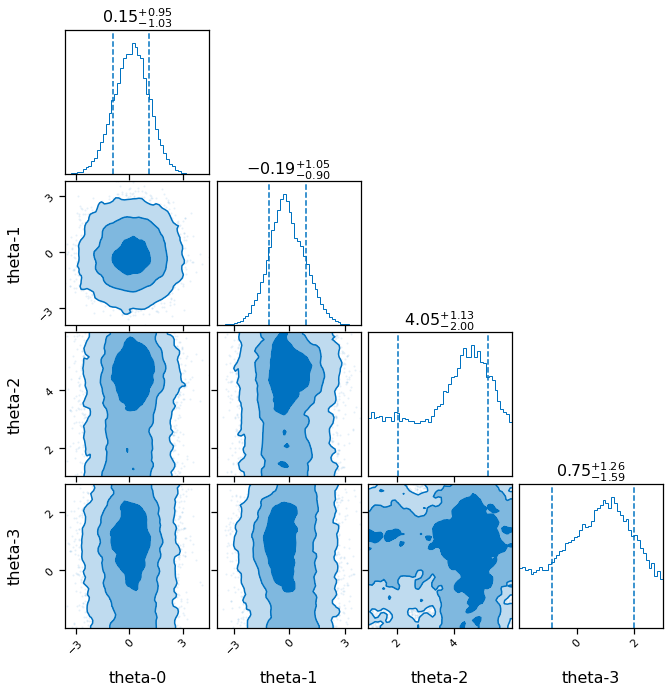
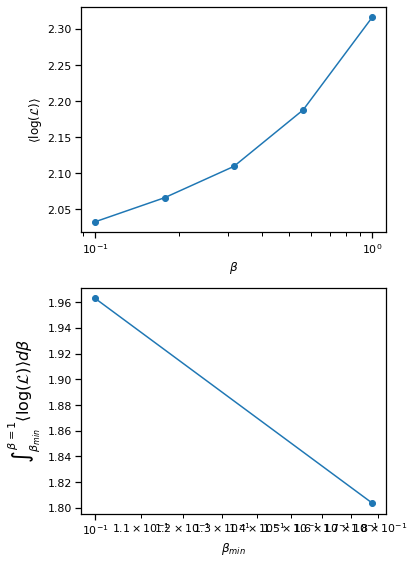
[50]:
result.posterior['theta_0']
[50]:
0 2.039160
1 0.137018
2 0.291915
3 -0.717424
4 0.216230
...
25195 2.091163
25196 0.648272
25197 0.002287
25198 0.406009
25199 1.670970
Name: theta_0, Length: 25200, dtype: float64
[51]:
#sns.set_context(font_scale=100)
for i in range(0,4):
fig, ax = plt.subplots(figsize=(50,10))
ax.plot(result.posterior[f'theta_{i}'].values[::100])
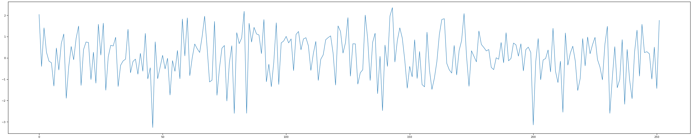
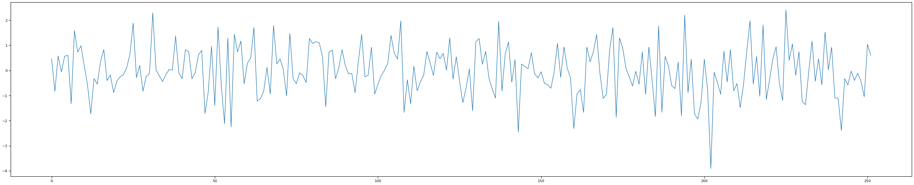
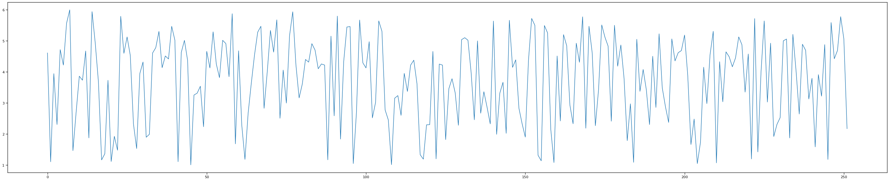
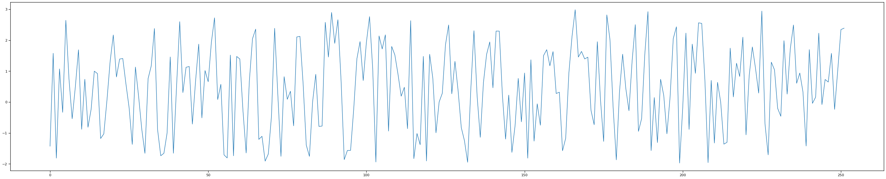
[52]:
pos_weight_func = []
for sample in result.posterior.values[:,0:2]:
mean = mix_model.weights(np.array([sample]).flatten(), plot_g)
pos_weight_func.append(mean)
pos_weight_func = np.array(pos_weight_func).reshape(-1,len(plot_g))
[53]:
per0,per5,per20,per80,per95,per100=np.percentile(pos_weight_func,[0,5,20,80,95,100], axis=0)
[54]:
%matplotlib inline
fig, ax = plt.subplots()
ax.fill_between(plot_g,per5,per95,color=sns.color_palette()[4], alpha=0.2, label='90% C.I.')
ax.fill_between(plot_g,per20,per80, color=sns.color_palette()[4], alpha=0.3, label='60% C.I.')
ax.legend()
#ax.plot(plot_g, true_output[0], label='truth')
#ax.set_ylim(1.2,3.2)
[54]:
<matplotlib.legend.Legend at 0x7f980eef9e80>
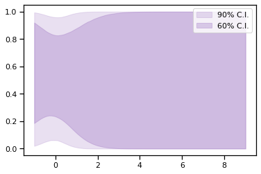
[55]:
result.posterior
[55]:
| theta_0 | theta_1 | theta_2 | theta_3 | log_likelihood | log_prior | |
|---|---|---|---|---|---|---|
| 0 | 2.039160 | 0.467374 | 4.612233 | -1.426980 | 2.925701 | -7.245058 |
| 1 | 0.137018 | 0.559685 | 1.567417 | 0.206020 | 1.671085 | -5.222764 |
| 2 | 0.291915 | -1.636575 | 5.287635 | 1.084380 | 2.985475 | -6.438549 |
| 3 | -0.717424 | -0.112814 | 4.447908 | -1.113812 | 1.861828 | -5.320465 |
| 4 | 0.216230 | 0.114471 | 5.483433 | 1.399317 | 2.233693 | -5.086682 |
| ... | ... | ... | ... | ... | ... | ... |
| 25195 | 2.091163 | -0.240106 | 5.281118 | -0.789064 | 2.624670 | -7.272060 |
| 25196 | 0.648272 | -0.252818 | 4.035114 | -0.612621 | 2.533686 | -5.298840 |
| 25197 | 0.002287 | 0.107080 | 5.978130 | 0.992951 | 1.824839 | -5.062489 |
| 25198 | 0.406009 | 1.135188 | 2.845078 | -1.481928 | 1.336898 | -5.783501 |
| 25199 | 1.670970 | 0.151038 | 1.541334 | 2.794158 | 1.652763 | -6.464229 |
25200 rows × 6 columns
[56]:
pos_predictions = []
for sample in result.posterior.values:
sample = np.array(sample).flatten()
mean = mix_model.prediction(sample[0:2],plot_g, sample[2], sample[3])
pos_predictions.append(mean)
pos_predictions = np.array(pos_predictions).reshape(-1,len(plot_g))
[57]:
pos_predictions.shape
[57]:
(25200, 100)
[58]:
per0,per5,per20,per80,per95,per100=np.percentile(pos_predictions,[0,5,20,80,95,100], axis=0)
[59]:
%matplotlib inline
fig, ax = plt.subplots()
ax.fill_between(plot_g,per5,per95,color=sns.color_palette()[4], alpha=0.2, label='90% C.I.')
ax.fill_between(plot_g,per20,per80, color=sns.color_palette()[4], alpha=0.3, label='60% C.I.')
ax.plot(plot_g, true_output[0], label='truth')
ax.legend()
ax.set_ylim(-1,2.5)
[59]:
(-1.0, 2.5)
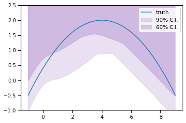
[60]:
pos_predictions_model_1 = []
pos_predictions_model_2 = []
for sample in result.posterior.values:
sample = np.array(sample).flatten()
mean = m1.predict(plot_g, sample[2])[0].flatten()
pos_predictions_model_1.append(mean)
mean = m2.predict(plot_g, sample[3])[0].flatten()
pos_predictions_model_2.append(mean)
pos_predictions_model_1 = np.array(pos_predictions_model_1).reshape(-1,len(plot_g))
pos_predictions_model_2 = np.array(pos_predictions_model_2).reshape(-1,len(plot_g))
[61]:
per0,per5,per20,per80,per95,per100=np.percentile(pos_predictions,[0,5,20,80,95,100], axis=0)
%matplotlib inline
fig, ax = plt.subplots()
per0,per5,per20,per80,per95,per100=np.percentile(pos_predictions_model_1,[0,5,20,80,95,100], axis=0)
ax.fill_between(plot_g,per20,per80,color=sns.color_palette()[4], alpha=0.3, label='60% model 1')
ax.plot(plot_g, np.mean(pos_predictions_model_1, axis=0).flatten())
per0,per5,per20,per80,per95,per100=np.percentile(pos_predictions_model_2,[0,5,20,80,95,100], axis=0)
ax.fill_between(plot_g,per20,per80, color=sns.color_palette()[5], alpha=0.3, label='60% model 2')
ax.plot(plot_g, np.mean(pos_predictions_model_2, axis=0).flatten())
ax.plot(plot_g, true_output[0], label='truth')
ax.errorbar(gg,exp_data[0],exp_data[1], fmt='o', label='experimental data', color='r')
# predict_2 = m2.predict(plot_g, np.array([3]))
# ax.plot(plot_g, predict_2[0].flatten())
ax.legend()
ax.set_ylim(-1,2.5)
[61]:
(-1.0, 2.5)
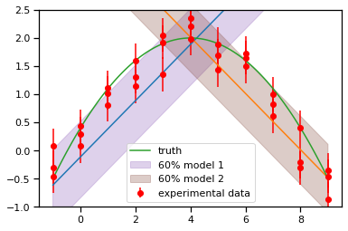
[62]:
individual_models = LM(m1, m2, gg, exp_data[0], exp_data[1], method='uniform', n_model_1=1, n_model_2=1, n_mix=1)
[63]:
individual_models.plot_weights(np.array([1]),plot_g)
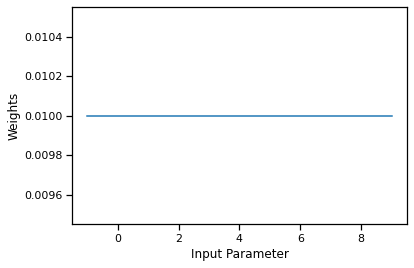
[64]:
likelihood = likelihood_wrapper_for_bilby(individual_models)
# A few simple setup steps
label = "uniform_mixing"
outdir = "outdir"
priors = dict(theta_0=bilby.core.prior.Uniform(0, 1, "theta_0"),
theta_1=bilby.core.prior.Uniform(1, 6, "theta_1"),
theta_2=bilby.core.prior.Uniform(-2, 3, "theta_2"))
# priors = dict(
# theta_0=bilby.core.prior.Beta(2,2)
# )
# And run sampler
## If file exists, delete it ##
if os.path.exists(f'{outdir}/{label}'):
os.remove(f'{outdir}/{label}')
#shutil.rmtree(outdir)
result = bilby.run_sampler(
likelihood,
priors,
label=label,
outdir=outdir,
sampler="ptemcee",
ntemps=5,
nwalkers=100,
Tmax=10,
burn_in_fixed_discard=500,
nsamples=1000, # This is the number of raw samples
threads=5,
)
result.plot_corner()
14:51 bilby INFO : Running for label 'uniform_mixing', output will be saved to 'outdir'
14:51 bilby INFO : Search parameters:
14:51 bilby INFO : theta_0 = Uniform(minimum=0, maximum=1, name='theta_0', latex_label='theta_0', unit=None, boundary=None)
14:51 bilby INFO : theta_1 = Uniform(minimum=1, maximum=6, name='theta_1', latex_label='theta_1', unit=None, boundary=None)
14:51 bilby INFO : theta_2 = Uniform(minimum=-2, maximum=3, name='theta_2', latex_label='theta_2', unit=None, boundary=None)
14:51 bilby INFO : Single likelihood evaluation took 2.637e-04 s
14:51 bilby WARNING : Supplied argument 'npool' not an argument of 'Ptemcee', removing.
14:51 bilby INFO : Using sampler Ptemcee with kwargs {'ntemps': 5, 'nwalkers': 100, 'Tmax': 10, 'betas': None, 'a': 2.0, 'adaptation_lag': 10000, 'adaptation_time': 100, 'random': None, 'adapt': False, 'swap_ratios': False}
14:51 bilby INFO : Using convergence inputs: ConvergenceInputs(autocorr_c=5, autocorr_tol=50, autocorr_tau=1, gradient_tau=0.1, gradient_mean_log_posterior=0.1, Q_tol=1.02, safety=1, burn_in_nact=50, burn_in_fixed_discard=500, mean_logl_frac=0.01, thin_by_nact=0.5, nsamples=1000, ignore_keys_for_tau=None, min_tau=1, niterations_per_check=5)
14:51 bilby INFO : Creating MultiPool with 5 processes
14:51 bilby INFO : Generating pos0 samples
14:51 bilby INFO : Starting to sample
1|0:00:00|nc:2.5e+03|a0:0.00-1.00|swp:0.86-0.96|n:nan<1000|t!nan(+nan,+nan)|q:inf|0.08ms/ev
2|0:00:00|nc:5.0e+03|a0:0.10-0.80|swp:0.87-0.96|n:nan<1000|t!nan(+nan,+nan)|q:inf|0.08ms/ev
3|0:00:00|nc:7.5e+03|a0:0.13-0.87|swp:0.87-0.97|n:nan<1000|t!nan(+nan,+nan)|q:inf|0.08ms/ev
4|0:00:00|nc:1.0e+04|a0:0.10-0.75|swp:0.87-0.97|n:nan<1000|t!nan(+nan,+nan)|q:inf|0.08ms/ev
5|0:00:00|nc:1.2e+04|a0:0.16-0.72|swp:0.87-0.97|n:nan<1000|t!nan(+nan,+nan)|q:inf|0.08ms/ev
6|0:00:01|nc:1.5e+04|a0:0.20-0.73|swp:0.87-0.97|n:nan<1000|t!nan(+nan,+nan)|q:inf|0.08ms/ev
7|0:00:01|nc:1.8e+04|a0:0.23-0.71|swp:0.86-0.97|n:nan<1000|t!nan(+nan,+nan)|q:inf|0.08ms/ev
8|0:00:01|nc:2.0e+04|a0:0.25-0.70|swp:0.86-0.97|n:nan<1000|t!nan(+nan,+nan)|q:inf|0.08ms/ev
9|0:00:01|nc:2.2e+04|a0:0.27-0.69|swp:0.87-0.97|n:nan<1000|t!nan(+nan,+nan)|q:inf|0.08ms/ev
10|0:00:01|nc:2.5e+04|a0:0.24-0.66|swp:0.86-0.97|n:nan<1000|t!nan(+nan,+nan)|q:inf|0.08ms/ev
11|0:00:02|nc:2.8e+04|a0:0.27-0.65|swp:0.86-0.97|n:nan<1000|t!nan(+nan,+nan)|q:inf|0.08ms/ev
12|0:00:02|nc:3.0e+04|a0:0.30-0.63|swp:0.86-0.97|n:nan<1000|t!nan(+nan,+nan)|q:inf|0.08ms/ev
13|0:00:02|nc:3.2e+04|a0:0.32-0.63|swp:0.86-0.97|n:nan<1000|t!nan(+nan,+nan)|q:inf|0.09ms/ev
14|0:00:02|nc:3.5e+04|a0:0.31-0.64|swp:0.86-0.97|n:nan<1000|t!nan(+nan,+nan)|q:inf|0.09ms/ev
15|0:00:03|nc:3.8e+04|a0:0.32-0.64|swp:0.86-0.97|n:nan<1000|t!nan(+nan,+nan)|q:inf|0.09ms/ev
16|0:00:03|nc:4.0e+04|a0:0.31-0.64|swp:0.86-0.97|n:nan<1000|t!nan(+nan,+nan)|q:inf|0.08ms/ev
17|0:00:03|nc:4.2e+04|a0:0.33-0.62|swp:0.86-0.97|n:nan<1000|t!nan(+nan,+nan)|q:inf|0.08ms/ev
18|0:00:03|nc:4.5e+04|a0:0.32-0.63|swp:0.86-0.97|n:nan<1000|t!nan(+nan,+nan)|q:inf|0.08ms/ev
19|0:00:03|nc:4.8e+04|a0:0.36-0.63|swp:0.86-0.97|n:nan<1000|t!nan(+nan,+nan)|q:inf|0.08ms/ev
20|0:00:04|nc:5.0e+04|a0:0.37-0.63|swp:0.86-0.97|n:nan<1000|t!nan(+nan,+nan)|q:inf|0.09ms/ev
21|0:00:04|nc:5.2e+04|a0:0.36-0.61|swp:0.86-0.97|n:nan<1000|t!nan(+nan,+nan)|q:inf|0.09ms/ev
22|0:00:04|nc:5.5e+04|a0:0.36-0.61|swp:0.86-0.97|n:nan<1000|t!nan(+nan,+nan)|q:inf|0.09ms/ev
23|0:00:04|nc:5.8e+04|a0:0.38-0.60|swp:0.86-0.97|n:nan<1000|t!nan(+nan,+nan)|q:inf|0.09ms/ev
24|0:00:04|nc:6.0e+04|a0:0.38-0.60|swp:0.86-0.97|n:nan<1000|t!nan(+nan,+nan)|q:inf|0.09ms/ev
25|0:00:05|nc:6.2e+04|a0:0.37-0.58|swp:0.86-0.97|n:nan<1000|t!nan(+nan,+nan)|q:inf|0.09ms/ev
26|0:00:05|nc:6.5e+04|a0:0.38-0.58|swp:0.87-0.97|n:nan<1000|t!nan(+nan,+nan)|q:inf|0.09ms/ev
27|0:00:05|nc:6.8e+04|a0:0.38-0.59|swp:0.86-0.97|n:nan<1000|t!nan(+nan,+nan)|q:inf|0.09ms/ev
28|0:00:05|nc:7.0e+04|a0:0.37-0.59|swp:0.86-0.97|n:nan<1000|t!nan(+nan,+nan)|q:inf|0.10ms/ev
29|0:00:06|nc:7.2e+04|a0:0.37-0.58|swp:0.86-0.97|n:nan<1000|t!nan(+nan,+nan)|q:inf|0.10ms/ev
30|0:00:06|nc:7.5e+04|a0:0.37-0.58|swp:0.87-0.97|n:nan<1000|t!nan(+nan,+nan)|q:inf|0.09ms/ev
31|0:00:06|nc:7.8e+04|a0:0.38-0.59|swp:0.86-0.97|n:nan<1000|t!nan(+nan,+nan)|q:inf|0.09ms/ev
32|0:00:06|nc:8.0e+04|a0:0.38-0.59|swp:0.86-0.97|n:nan<1000|t!nan(+nan,+nan)|q:inf|0.10ms/ev
33|0:00:07|nc:8.2e+04|a0:0.37-0.59|swp:0.86-0.97|n:nan<1000|t!nan(+nan,+nan)|q:inf|0.10ms/ev
34|0:00:07|nc:8.5e+04|a0:0.38-0.59|swp:0.86-0.97|n:nan<1000|t!nan(+nan,+nan)|q:inf|0.10ms/ev
35|0:00:07|nc:8.8e+04|a0:0.37-0.58|swp:0.86-0.97|n:nan<1000|t!nan(+nan,+nan)|q:inf|0.10ms/ev
36|0:00:07|nc:9.0e+04|a0:0.38-0.59|swp:0.86-0.97|n:nan<1000|t!nan(+nan,+nan)|q:inf|0.10ms/ev
37|0:00:08|nc:9.2e+04|a0:0.38-0.59|swp:0.86-0.97|n:nan<1000|t!nan(+nan,+nan)|q:inf|0.10ms/ev
38|0:00:08|nc:9.5e+04|a0:0.37-0.58|swp:0.86-0.97|n:nan<1000|t!nan(+nan,+nan)|q:inf|0.10ms/ev
39|0:00:08|nc:9.8e+04|a0:0.37-0.58|swp:0.86-0.97|n:nan<1000|t!nan(+nan,+nan)|q:inf|0.10ms/ev
40|0:00:08|nc:1.0e+05|a0:0.38-0.59|swp:0.86-0.97|n:nan<1000|t!nan(+nan,+nan)|q:inf|0.10ms/ev
41|0:00:09|nc:1.0e+05|a0:0.38-0.59|swp:0.86-0.97|n:nan<1000|t!nan(+nan,+nan)|q:inf|0.10ms/ev
42|0:00:09|nc:1.0e+05|a0:0.38-0.59|swp:0.86-0.97|n:nan<1000|t!nan(+nan,+nan)|q:inf|0.10ms/ev
43|0:00:09|nc:1.1e+05|a0:0.38-0.59|swp:0.86-0.97|n:nan<1000|t!nan(+nan,+nan)|q:inf|0.10ms/ev
44|0:00:09|nc:1.1e+05|a0:0.39-0.60|swp:0.86-0.97|n:nan<1000|t!nan(+nan,+nan)|q:inf|0.10ms/ev
45|0:00:10|nc:1.1e+05|a0:0.39-0.60|swp:0.86-0.97|n:nan<1000|t!nan(+nan,+nan)|q:inf|0.10ms/ev
46|0:00:10|nc:1.2e+05|a0:0.38-0.59|swp:0.86-0.97|n:nan<1000|t!nan(+nan,+nan)|q:inf|0.10ms/ev
47|0:00:10|nc:1.2e+05|a0:0.38-0.58|swp:0.86-0.97|n:nan<1000|t!nan(+nan,+nan)|q:inf|0.10ms/ev
48|0:00:10|nc:1.2e+05|a0:0.38-0.58|swp:0.86-0.97|n:nan<1000|t!nan(+nan,+nan)|q:inf|0.10ms/ev
49|0:00:11|nc:1.2e+05|a0:0.39-0.58|swp:0.86-0.97|n:nan<1000|t!nan(+nan,+nan)|q:inf|0.10ms/ev
50|0:00:11|nc:1.2e+05|a0:0.39-0.57|swp:0.86-0.97|n:nan<1000|t!nan(+nan,+nan)|q:inf|0.10ms/ev
51|0:00:11|nc:1.3e+05|a0:0.38-0.58|swp:0.86-0.97|n:nan<1000|t!nan(+nan,+nan)|q:inf|0.10ms/ev
52|0:00:11|nc:1.3e+05|a0:0.38-0.58|swp:0.86-0.97|n:nan<1000|t!nan(+nan,+nan)|q:inf|0.11ms/ev
53|0:00:12|nc:1.3e+05|a0:0.38-0.58|swp:0.86-0.97|n:nan<1000|t!nan(+nan,+nan)|q:inf|0.10ms/ev
54|0:00:12|nc:1.4e+05|a0:0.39-0.58|swp:0.86-0.97|n:nan<1000|t!nan(+nan,+nan)|q:inf|0.10ms/ev
55|0:00:12|nc:1.4e+05|a0:0.39-0.59|swp:0.86-0.97|n:nan<1000|t!nan(+nan,+nan)|q:inf|0.10ms/ev
56|0:00:12|nc:1.4e+05|a0:0.39-0.58|swp:0.86-0.97|n:nan<1000|t!nan(+nan,+nan)|q:inf|0.10ms/ev
57|0:00:13|nc:1.4e+05|a0:0.39-0.58|swp:0.86-0.97|n:nan<1000|t!nan(+nan,+nan)|q:inf|0.10ms/ev
58|0:00:13|nc:1.4e+05|a0:0.39-0.58|swp:0.86-0.97|n:nan<1000|t!nan(+nan,+nan)|q:inf|0.10ms/ev
59|0:00:13|nc:1.5e+05|a0:0.39-0.57|swp:0.86-0.97|n:nan<1000|t!nan(+nan,+nan)|q:inf|0.10ms/ev
60|0:00:13|nc:1.5e+05|a0:0.40-0.58|swp:0.86-0.97|n:nan<1000|t!nan(+nan,+nan)|q:inf|0.10ms/ev
61|0:00:14|nc:1.5e+05|a0:0.40-0.58|swp:0.86-0.97|n:nan<1000|t!nan(+nan,+nan)|q:inf|0.10ms/ev
62|0:00:14|nc:1.6e+05|a0:0.41-0.58|swp:0.86-0.97|n:nan<1000|t!nan(+nan,+nan)|q:inf|0.10ms/ev
63|0:00:14|nc:1.6e+05|a0:0.41-0.58|swp:0.86-0.97|n:nan<1000|t!nan(+nan,+nan)|q:inf|0.10ms/ev
64|0:00:14|nc:1.6e+05|a0:0.40-0.57|swp:0.86-0.97|n:nan<1000|t!nan(+nan,+nan)|q:inf|0.10ms/ev
65|0:00:15|nc:1.6e+05|a0:0.40-0.58|swp:0.86-0.97|n:nan<1000|t!nan(+nan,+nan)|q:inf|0.10ms/ev
66|0:00:15|nc:1.6e+05|a0:0.40-0.58|swp:0.87-0.97|n:nan<1000|t!nan(+nan,+nan)|q:inf|0.10ms/ev
67|0:00:15|nc:1.7e+05|a0:0.40-0.58|swp:0.86-0.97|n:nan<1000|t!nan(+nan,+nan)|q:inf|0.10ms/ev
68|0:00:16|nc:1.7e+05|a0:0.40-0.59|swp:0.87-0.97|n:nan<1000|t!nan(+nan,+nan)|q:inf|0.10ms/ev
69|0:00:16|nc:1.7e+05|a0:0.41-0.58|swp:0.87-0.97|n:nan<1000|t!nan(+nan,+nan)|q:inf|0.10ms/ev
70|0:00:16|nc:1.8e+05|a0:0.41-0.58|swp:0.87-0.97|n:nan<1000|t!nan(+nan,+nan)|q:inf|0.10ms/ev
71|0:00:16|nc:1.8e+05|a0:0.41-0.58|swp:0.87-0.97|n:nan<1000|t!nan(+nan,+nan)|q:inf|0.10ms/ev
72|0:00:17|nc:1.8e+05|a0:0.41-0.58|swp:0.87-0.97|n:nan<1000|t!nan(+nan,+nan)|q:inf|0.10ms/ev
73|0:00:17|nc:1.8e+05|a0:0.41-0.58|swp:0.87-0.97|n:nan<1000|t!nan(+nan,+nan)|q:inf|0.10ms/ev
74|0:00:17|nc:1.8e+05|a0:0.41-0.58|swp:0.87-0.97|n:nan<1000|t!nan(+nan,+nan)|q:inf|0.10ms/ev
75|0:00:17|nc:1.9e+05|a0:0.41-0.58|swp:0.87-0.97|n:nan<1000|t!nan(+nan,+nan)|q:inf|0.10ms/ev
76|0:00:18|nc:1.9e+05|a0:0.41-0.58|swp:0.87-0.97|n:nan<1000|t!nan(+nan,+nan)|q:inf|0.10ms/ev
77|0:00:18|nc:1.9e+05|a0:0.41-0.57|swp:0.87-0.97|n:nan<1000|t!nan(+nan,+nan)|q:inf|0.11ms/ev
78|0:00:18|nc:2.0e+05|a0:0.41-0.57|swp:0.87-0.97|n:nan<1000|t!nan(+nan,+nan)|q:inf|0.11ms/ev
79|0:00:18|nc:2.0e+05|a0:0.41-0.57|swp:0.87-0.97|n:nan<1000|t!nan(+nan,+nan)|q:inf|0.11ms/ev
80|0:00:19|nc:2.0e+05|a0:0.41-0.57|swp:0.87-0.97|n:nan<1000|t!nan(+nan,+nan)|q:inf|0.11ms/ev
81|0:00:19|nc:2.0e+05|a0:0.42-0.56|swp:0.87-0.97|n:nan<1000|t!nan(+nan,+nan)|q:inf|0.11ms/ev
82|0:00:19|nc:2.0e+05|a0:0.42-0.56|swp:0.87-0.97|n:nan<1000|t!nan(+nan,+nan)|q:inf|0.11ms/ev
83|0:00:19|nc:2.1e+05|a0:0.41-0.55|swp:0.87-0.97|n:nan<1000|t!nan(+nan,+nan)|q:inf|0.11ms/ev
84|0:00:20|nc:2.1e+05|a0:0.41-0.56|swp:0.87-0.97|n:nan<1000|t!nan(+nan,+nan)|q:inf|0.11ms/ev
85|0:00:20|nc:2.1e+05|a0:0.42-0.56|swp:0.87-0.97|n:nan<1000|t!nan(+nan,+nan)|q:inf|0.10ms/ev
86|0:00:20|nc:2.2e+05|a0:0.42-0.56|swp:0.87-0.97|n:nan<1000|t!nan(+nan,+nan)|q:inf|0.11ms/ev
87|0:00:20|nc:2.2e+05|a0:0.42-0.56|swp:0.87-0.97|n:nan<1000|t!nan(+nan,+nan)|q:inf|0.10ms/ev
88|0:00:21|nc:2.2e+05|a0:0.42-0.55|swp:0.87-0.97|n:nan<1000|t!nan(+nan,+nan)|q:inf|0.11ms/ev
89|0:00:21|nc:2.2e+05|a0:0.42-0.56|swp:0.87-0.97|n:nan<1000|t!nan(+nan,+nan)|q:inf|0.11ms/ev
90|0:00:21|nc:2.2e+05|a0:0.42-0.56|swp:0.87-0.97|n:nan<1000|t!nan(+nan,+nan)|q:inf|0.11ms/ev
91|0:00:22|nc:2.3e+05|a0:0.42-0.55|swp:0.87-0.97|n:nan<1000|t!nan(+nan,+nan)|q:inf|0.11ms/ev
92|0:00:22|nc:2.3e+05|a0:0.42-0.55|swp:0.87-0.97|n:nan<1000|t!nan(+nan,+nan)|q:inf|0.11ms/ev
93|0:00:22|nc:2.3e+05|a0:0.42-0.55|swp:0.87-0.97|n:nan<1000|t!nan(+nan,+nan)|q:inf|0.11ms/ev
94|0:00:22|nc:2.4e+05|a0:0.42-0.56|swp:0.87-0.97|n:nan<1000|t!nan(+nan,+nan)|q:inf|0.11ms/ev
95|0:00:23|nc:2.4e+05|a0:0.42-0.56|swp:0.87-0.97|n:nan<1000|t!nan(+nan,+nan)|q:inf|0.11ms/ev
96|0:00:23|nc:2.4e+05|a0:0.42-0.56|swp:0.87-0.97|n:nan<1000|t!nan(+nan,+nan)|q:inf|0.11ms/ev
97|0:00:23|nc:2.4e+05|a0:0.42-0.56|swp:0.87-0.97|n:nan<1000|t!nan(+nan,+nan)|q:inf|0.11ms/ev
98|0:00:23|nc:2.4e+05|a0:0.42-0.56|swp:0.87-0.97|n:nan<1000|t!nan(+nan,+nan)|q:inf|0.10ms/ev
99|0:00:24|nc:2.5e+05|a0:0.42-0.56|swp:0.87-0.97|n:nan<1000|t!nan(+nan,+nan)|q:inf|0.10ms/ev
100|0:00:24|nc:2.5e+05|a0:0.42-0.56|swp:0.87-0.97|n:nan<1000|t!nan(+nan,+nan)|q:inf|0.10ms/ev
101|0:00:24|nc:2.5e+05|a0:0.42-0.55|swp:0.87-0.97|n:nan<1000|t!nan(+nan,+nan)|q:inf|0.11ms/ev
102|0:00:24|nc:2.6e+05|a0:0.42-0.55|swp:0.87-0.97|n:nan<1000|t!nan(+nan,+nan)|q:inf|0.11ms/ev
103|0:00:25|nc:2.6e+05|a0:0.42-0.55|swp:0.87-0.97|n:nan<1000|t!nan(+nan,+nan)|q:inf|0.11ms/ev
104|0:00:25|nc:2.6e+05|a0:0.43-0.55|swp:0.87-0.97|n:nan<1000|t!nan(+nan,+nan)|q:inf|0.11ms/ev
105|0:00:25|nc:2.6e+05|a0:0.43-0.55|swp:0.87-0.97|n:nan<1000|t!nan(+nan,+nan)|q:inf|0.11ms/ev
106|0:00:26|nc:2.6e+05|a0:0.43-0.55|swp:0.87-0.97|n:nan<1000|t!nan(+nan,+nan)|q:inf|0.11ms/ev
107|0:00:26|nc:2.7e+05|a0:0.43-0.55|swp:0.87-0.97|n:nan<1000|t!nan(+nan,+nan)|q:inf|0.11ms/ev
108|0:00:26|nc:2.7e+05|a0:0.43-0.55|swp:0.87-0.97|n:nan<1000|t!nan(+nan,+nan)|q:inf|0.11ms/ev
109|0:00:26|nc:2.7e+05|a0:0.43-0.55|swp:0.87-0.97|n:nan<1000|t!nan(+nan,+nan)|q:inf|0.12ms/ev
110|0:00:27|nc:2.8e+05|a0:0.43-0.55|swp:0.87-0.97|n:nan<1000|t!nan(+nan,+nan)|q:inf|0.11ms/ev
111|0:00:27|nc:2.8e+05|a0:0.43-0.55|swp:0.87-0.97|n:nan<1000|t!nan(+nan,+nan)|q:inf|0.11ms/ev
112|0:00:27|nc:2.8e+05|a0:0.42-0.55|swp:0.87-0.97|n:nan<1000|t!nan(+nan,+nan)|q:inf|0.11ms/ev
113|0:00:27|nc:2.8e+05|a0:0.42-0.55|swp:0.87-0.97|n:nan<1000|t!nan(+nan,+nan)|q:inf|0.10ms/ev
114|0:00:28|nc:2.8e+05|a0:0.42-0.55|swp:0.87-0.97|n:nan<1000|t!nan(+nan,+nan)|q:inf|0.10ms/ev
115|0:00:28|nc:2.9e+05|a0:0.42-0.55|swp:0.87-0.97|n:nan<1000|t!nan(+nan,+nan)|q:inf|0.10ms/ev
116|0:00:28|nc:2.9e+05|a0:0.43-0.55|swp:0.87-0.97|n:nan<1000|t!nan(+nan,+nan)|q:inf|0.10ms/ev
117|0:00:28|nc:2.9e+05|a0:0.43-0.55|swp:0.87-0.97|n:nan<1000|t!nan(+nan,+nan)|q:inf|0.10ms/ev
118|0:00:29|nc:3.0e+05|a0:0.43-0.55|swp:0.87-0.97|n:nan<1000|t!nan(+nan,+nan)|q:inf|0.10ms/ev
119|0:00:29|nc:3.0e+05|a0:0.43-0.55|swp:0.87-0.97|n:nan<1000|t!nan(+nan,+nan)|q:inf|0.10ms/ev
120|0:00:29|nc:3.0e+05|a0:0.43-0.56|swp:0.87-0.97|n:nan<1000|t!nan(+nan,+nan)|q:inf|0.10ms/ev
121|0:00:30|nc:3.0e+05|a0:0.43-0.55|swp:0.87-0.97|n:nan<1000|t!nan(+nan,+nan)|q:inf|0.10ms/ev
122|0:00:30|nc:3.0e+05|a0:0.43-0.55|swp:0.87-0.97|n:nan<1000|t!nan(+nan,+nan)|q:inf|0.10ms/ev
123|0:00:30|nc:3.1e+05|a0:0.43-0.55|swp:0.87-0.97|n:nan<1000|t!nan(+nan,+nan)|q:inf|0.10ms/ev
124|0:00:30|nc:3.1e+05|a0:0.43-0.55|swp:0.87-0.97|n:nan<1000|t!nan(+nan,+nan)|q:inf|0.10ms/ev
125|0:00:31|nc:3.1e+05|a0:0.43-0.55|swp:0.87-0.97|n:nan<1000|t!nan(+nan,+nan)|q:inf|0.10ms/ev
126|0:00:31|nc:3.2e+05|a0:0.43-0.55|swp:0.87-0.97|n:nan<1000|t!nan(+nan,+nan)|q:inf|0.10ms/ev
127|0:00:31|nc:3.2e+05|a0:0.43-0.55|swp:0.87-0.97|n:nan<1000|t!nan(+nan,+nan)|q:inf|0.10ms/ev
128|0:00:31|nc:3.2e+05|a0:0.43-0.55|swp:0.87-0.97|n:nan<1000|t!nan(+nan,+nan)|q:inf|0.10ms/ev
129|0:00:32|nc:3.2e+05|a0:0.43-0.54|swp:0.87-0.97|n:nan<1000|t!nan(+nan,+nan)|q:inf|0.10ms/ev
130|0:00:32|nc:3.2e+05|a0:0.43-0.55|swp:0.87-0.97|n:nan<1000|t!nan(+nan,+nan)|q:inf|0.10ms/ev
131|0:00:32|nc:3.3e+05|a0:0.43-0.54|swp:0.87-0.97|n:nan<1000|t!nan(+nan,+nan)|q:inf|0.10ms/ev
132|0:00:32|nc:3.3e+05|a0:0.43-0.54|swp:0.87-0.97|n:nan<1000|t!nan(+nan,+nan)|q:inf|0.10ms/ev
133|0:00:33|nc:3.3e+05|a0:0.43-0.55|swp:0.87-0.97|n:nan<1000|t!nan(+nan,+nan)|q:inf|0.10ms/ev
134|0:00:33|nc:3.4e+05|a0:0.44-0.55|swp:0.87-0.97|n:nan<1000|t!nan(+nan,+nan)|q:inf|0.10ms/ev
135|0:00:33|nc:3.4e+05|a0:0.43-0.55|swp:0.87-0.97|n:nan<1000|t!nan(+nan,+nan)|q:inf|0.10ms/ev
136|0:00:33|nc:3.4e+05|a0:0.43-0.55|swp:0.87-0.97|n:nan<1000|t!nan(+nan,+nan)|q:inf|0.10ms/ev
137|0:00:34|nc:3.4e+05|a0:0.44-0.55|swp:0.87-0.97|n:nan<1000|t!nan(+nan,+nan)|q:inf|0.10ms/ev
138|0:00:34|nc:3.4e+05|a0:0.43-0.55|swp:0.87-0.97|n:nan<1000|t!nan(+nan,+nan)|q:inf|0.10ms/ev
139|0:00:34|nc:3.5e+05|a0:0.44-0.54|swp:0.87-0.97|n:nan<1000|t!nan(+nan,+nan)|q:inf|0.10ms/ev
140|0:00:34|nc:3.5e+05|a0:0.44-0.55|swp:0.87-0.97|n:nan<1000|t!nan(+nan,+nan)|q:inf|0.10ms/ev
141|0:00:35|nc:3.5e+05|a0:0.44-0.54|swp:0.87-0.97|n:nan<1000|t!nan(+nan,+nan)|q:inf|0.10ms/ev
142|0:00:35|nc:3.6e+05|a0:0.44-0.55|swp:0.87-0.97|n:nan<1000|t!nan(+nan,+nan)|q:inf|0.10ms/ev
143|0:00:35|nc:3.6e+05|a0:0.44-0.54|swp:0.87-0.97|n:nan<1000|t!nan(+nan,+nan)|q:inf|0.10ms/ev
144|0:00:35|nc:3.6e+05|a0:0.44-0.54|swp:0.87-0.97|n:nan<1000|t!nan(+nan,+nan)|q:inf|0.10ms/ev
145|0:00:36|nc:3.6e+05|a0:0.44-0.54|swp:0.87-0.97|n:nan<1000|t!nan(+nan,+nan)|q:inf|0.10ms/ev
146|0:00:36|nc:3.6e+05|a0:0.44-0.54|swp:0.87-0.97|n:nan<1000|t!nan(+nan,+nan)|q:inf|0.10ms/ev
147|0:00:36|nc:3.7e+05|a0:0.44-0.54|swp:0.87-0.97|n:nan<1000|t!nan(+nan,+nan)|q:inf|0.10ms/ev
148|0:00:36|nc:3.7e+05|a0:0.44-0.54|swp:0.87-0.97|n:nan<1000|t!nan(+nan,+nan)|q:inf|0.10ms/ev
149|0:00:37|nc:3.7e+05|a0:0.44-0.54|swp:0.87-0.97|n:nan<1000|t!nan(+nan,+nan)|q:inf|0.10ms/ev
150|0:00:37|nc:3.8e+05|a0:0.44-0.54|swp:0.87-0.97|n:nan<1000|t!nan(+nan,+nan)|q:inf|0.10ms/ev
151|0:00:37|nc:3.8e+05|a0:0.44-0.54|swp:0.87-0.97|n:nan<1000|t!nan(+nan,+nan)|q:inf|0.10ms/ev
152|0:00:37|nc:3.8e+05|a0:0.44-0.54|swp:0.87-0.97|n:nan<1000|t!nan(+nan,+nan)|q:inf|0.10ms/ev
153|0:00:37|nc:3.8e+05|a0:0.44-0.54|swp:0.87-0.97|n:nan<1000|t!nan(+nan,+nan)|q:inf|0.10ms/ev
154|0:00:38|nc:3.8e+05|a0:0.44-0.54|swp:0.87-0.97|n:nan<1000|t!nan(+nan,+nan)|q:inf|0.10ms/ev
155|0:00:38|nc:3.9e+05|a0:0.44-0.54|swp:0.87-0.97|n:nan<1000|t!nan(+nan,+nan)|q:inf|0.10ms/ev
156|0:00:38|nc:3.9e+05|a0:0.44-0.54|swp:0.87-0.97|n:nan<1000|t!nan(+nan,+nan)|q:inf|0.10ms/ev
157|0:00:38|nc:3.9e+05|a0:0.44-0.54|swp:0.87-0.97|n:nan<1000|t!nan(+nan,+nan)|q:inf|0.10ms/ev
158|0:00:39|nc:4.0e+05|a0:0.44-0.54|swp:0.87-0.97|n:nan<1000|t!nan(+nan,+nan)|q:inf|0.10ms/ev
159|0:00:39|nc:4.0e+05|a0:0.44-0.54|swp:0.87-0.97|n:nan<1000|t!nan(+nan,+nan)|q:inf|0.10ms/ev
160|0:00:39|nc:4.0e+05|a0:0.44-0.54|swp:0.87-0.97|n:nan<1000|t!nan(+nan,+nan)|q:inf|0.10ms/ev
161|0:00:39|nc:4.0e+05|a0:0.44-0.54|swp:0.87-0.97|n:nan<1000|t!nan(+nan,+nan)|q:inf|0.10ms/ev
162|0:00:40|nc:4.0e+05|a0:0.44-0.54|swp:0.87-0.97|n:nan<1000|t!nan(+nan,+nan)|q:inf|0.10ms/ev
163|0:00:40|nc:4.1e+05|a0:0.45-0.54|swp:0.87-0.97|n:nan<1000|t!nan(+nan,+nan)|q:inf|0.10ms/ev
164|0:00:40|nc:4.1e+05|a0:0.45-0.54|swp:0.87-0.97|n:nan<1000|t!nan(+nan,+nan)|q:inf|0.10ms/ev
165|0:00:40|nc:4.1e+05|a0:0.45-0.54|swp:0.87-0.97|n:nan<1000|t!nan(+nan,+nan)|q:inf|0.10ms/ev
166|0:00:41|nc:4.2e+05|a0:0.45-0.54|swp:0.87-0.97|n:nan<1000|t!nan(+nan,+nan)|q:inf|0.10ms/ev
167|0:00:41|nc:4.2e+05|a0:0.45-0.54|swp:0.87-0.97|n:nan<1000|t!nan(+nan,+nan)|q:inf|0.10ms/ev
168|0:00:41|nc:4.2e+05|a0:0.45-0.54|swp:0.87-0.97|n:nan<1000|t!nan(+nan,+nan)|q:inf|0.10ms/ev
169|0:00:41|nc:4.2e+05|a0:0.44-0.53|swp:0.87-0.97|n:nan<1000|t!nan(+nan,+nan)|q:inf|0.10ms/ev
170|0:00:42|nc:4.2e+05|a0:0.44-0.54|swp:0.87-0.97|n:nan<1000|t!nan(+nan,+nan)|q:inf|0.10ms/ev
171|0:00:42|nc:4.3e+05|a0:0.45-0.54|swp:0.87-0.97|n:nan<1000|t!nan(+nan,+nan)|q:inf|0.10ms/ev
172|0:00:42|nc:4.3e+05|a0:0.45-0.53|swp:0.87-0.97|n:nan<1000|t!nan(+nan,+nan)|q:inf|0.10ms/ev
173|0:00:42|nc:4.3e+05|a0:0.45-0.53|swp:0.87-0.97|n:nan<1000|t!nan(+nan,+nan)|q:inf|0.10ms/ev
174|0:00:43|nc:4.4e+05|a0:0.45-0.54|swp:0.87-0.97|n:nan<1000|t!nan(+nan,+nan)|q:inf|0.10ms/ev
175|0:00:43|nc:4.4e+05|a0:0.45-0.54|swp:0.87-0.97|n:nan<1000|t!nan(+nan,+nan)|q:inf|0.10ms/ev
176|0:00:43|nc:4.4e+05|a0:0.45-0.54|swp:0.87-0.97|n:nan<1000|t!nan(+nan,+nan)|q:inf|0.10ms/ev
177|0:00:43|nc:4.4e+05|a0:0.44-0.54|swp:0.87-0.97|n:nan<1000|t!nan(+nan,+nan)|q:inf|0.10ms/ev
178|0:00:44|nc:4.4e+05|a0:0.44-0.54|swp:0.87-0.97|n:nan<1000|t!nan(+nan,+nan)|q:inf|0.10ms/ev
179|0:00:44|nc:4.5e+05|a0:0.44-0.54|swp:0.87-0.97|n:nan<1000|t!nan(+nan,+nan)|q:inf|0.10ms/ev
180|0:00:44|nc:4.5e+05|a0:0.45-0.54|swp:0.87-0.97|n:nan<1000|t!nan(+nan,+nan)|q:inf|0.10ms/ev
181|0:00:44|nc:4.5e+05|a0:0.45-0.54|swp:0.87-0.97|n:nan<1000|t!nan(+nan,+nan)|q:inf|0.10ms/ev
182|0:00:45|nc:4.6e+05|a0:0.45-0.54|swp:0.87-0.97|n:nan<1000|t!nan(+nan,+nan)|q:inf|0.10ms/ev
183|0:00:45|nc:4.6e+05|a0:0.45-0.54|swp:0.87-0.97|n:nan<1000|t!nan(+nan,+nan)|q:inf|0.10ms/ev
184|0:00:45|nc:4.6e+05|a0:0.45-0.54|swp:0.87-0.97|n:nan<1000|t!nan(+nan,+nan)|q:inf|0.10ms/ev
185|0:00:45|nc:4.6e+05|a0:0.45-0.54|swp:0.87-0.97|n:nan<1000|t!nan(+nan,+nan)|q:inf|0.10ms/ev
186|0:00:46|nc:4.6e+05|a0:0.45-0.54|swp:0.87-0.97|n:nan<1000|t!nan(+nan,+nan)|q:inf|0.10ms/ev
187|0:00:46|nc:4.7e+05|a0:0.45-0.54|swp:0.87-0.97|n:nan<1000|t!nan(+nan,+nan)|q:inf|0.10ms/ev
188|0:00:46|nc:4.7e+05|a0:0.45-0.54|swp:0.87-0.97|n:nan<1000|t!nan(+nan,+nan)|q:inf|0.10ms/ev
189|0:00:46|nc:4.7e+05|a0:0.45-0.54|swp:0.87-0.97|n:nan<1000|t!nan(+nan,+nan)|q:inf|0.10ms/ev
190|0:00:47|nc:4.8e+05|a0:0.45-0.53|swp:0.87-0.97|n:nan<1000|t!nan(+nan,+nan)|q:inf|0.10ms/ev
191|0:00:47|nc:4.8e+05|a0:0.45-0.53|swp:0.87-0.97|n:nan<1000|t!nan(+nan,+nan)|q:inf|0.10ms/ev
192|0:00:47|nc:4.8e+05|a0:0.44-0.53|swp:0.87-0.97|n:nan<1000|t!nan(+nan,+nan)|q:inf|0.10ms/ev
193|0:00:47|nc:4.8e+05|a0:0.45-0.53|swp:0.87-0.97|n:nan<1000|t!nan(+nan,+nan)|q:inf|0.10ms/ev
194|0:00:48|nc:4.8e+05|a0:0.44-0.54|swp:0.87-0.97|n:nan<1000|t!nan(+nan,+nan)|q:inf|0.10ms/ev
195|0:00:48|nc:4.9e+05|a0:0.44-0.53|swp:0.87-0.97|n:nan<1000|t!nan(+nan,+nan)|q:inf|0.10ms/ev
196|0:00:48|nc:4.9e+05|a0:0.45-0.53|swp:0.87-0.97|n:nan<1000|t!nan(+nan,+nan)|q:inf|0.10ms/ev
197|0:00:48|nc:4.9e+05|a0:0.44-0.53|swp:0.87-0.97|n:nan<1000|t!nan(+nan,+nan)|q:inf|0.10ms/ev
198|0:00:49|nc:5.0e+05|a0:0.44-0.53|swp:0.87-0.97|n:nan<1000|t!nan(+nan,+nan)|q:inf|0.10ms/ev
199|0:00:49|nc:5.0e+05|a0:0.45-0.53|swp:0.87-0.97|n:nan<1000|t!nan(+nan,+nan)|q:inf|0.10ms/ev
200|0:00:49|nc:5.0e+05|a0:0.45-0.53|swp:0.87-0.97|n:nan<1000|t!nan(+nan,+nan)|q:inf|0.10ms/ev
201|0:00:49|nc:5.0e+05|a0:0.44-0.53|swp:0.87-0.97|n:nan<1000|t!nan(+nan,+nan)|q:inf|0.10ms/ev
202|0:00:50|nc:5.0e+05|a0:0.45-0.53|swp:0.87-0.97|n:nan<1000|t!nan(+nan,+nan)|q:inf|0.10ms/ev
203|0:00:50|nc:5.1e+05|a0:0.45-0.53|swp:0.87-0.97|n:nan<1000|t!nan(+nan,+nan)|q:inf|0.10ms/ev
204|0:00:50|nc:5.1e+05|a0:0.45-0.53|swp:0.87-0.97|n:nan<1000|t!nan(+nan,+nan)|q:inf|0.10ms/ev
205|0:00:50|nc:5.1e+05|a0:0.44-0.53|swp:0.87-0.97|n:nan<1000|t!nan(+nan,+nan)|q:inf|0.10ms/ev
206|0:00:51|nc:5.2e+05|a0:0.44-0.53|swp:0.87-0.97|n:nan<1000|t!nan(+nan,+nan)|q:inf|0.10ms/ev
207|0:00:51|nc:5.2e+05|a0:0.44-0.53|swp:0.87-0.97|n:nan<1000|t!nan(+nan,+nan)|q:inf|0.10ms/ev
208|0:00:51|nc:5.2e+05|a0:0.44-0.53|swp:0.87-0.97|n:nan<1000|t!nan(+nan,+nan)|q:inf|0.10ms/ev
209|0:00:51|nc:5.2e+05|a0:0.44-0.53|swp:0.87-0.97|n:nan<1000|t!nan(+nan,+nan)|q:inf|0.10ms/ev
210|0:00:52|nc:5.2e+05|a0:0.45-0.53|swp:0.87-0.97|n:nan<1000|t!nan(+nan,+nan)|q:inf|0.10ms/ev
211|0:00:52|nc:5.3e+05|a0:0.45-0.53|swp:0.87-0.97|n:nan<1000|t!nan(+nan,+nan)|q:inf|0.10ms/ev
212|0:00:52|nc:5.3e+05|a0:0.45-0.53|swp:0.87-0.97|n:nan<1000|t!nan(+nan,+nan)|q:inf|0.10ms/ev
213|0:00:52|nc:5.3e+05|a0:0.45-0.53|swp:0.87-0.97|n:nan<1000|t!nan(+nan,+nan)|q:inf|0.10ms/ev
214|0:00:53|nc:5.4e+05|a0:0.45-0.53|swp:0.87-0.97|n:nan<1000|t!nan(+nan,+nan)|q:inf|0.10ms/ev
215|0:00:53|nc:5.4e+05|a0:0.45-0.53|swp:0.87-0.97|n:nan<1000|t!nan(+nan,+nan)|q:inf|0.10ms/ev
216|0:00:53|nc:5.4e+05|a0:0.45-0.53|swp:0.87-0.97|n:nan<1000|t!nan(+nan,+nan)|q:inf|0.10ms/ev
217|0:00:53|nc:5.4e+05|a0:0.45-0.53|swp:0.87-0.97|n:nan<1000|t!nan(+nan,+nan)|q:inf|0.10ms/ev
218|0:00:54|nc:5.4e+05|a0:0.45-0.53|swp:0.87-0.97|n:nan<1000|t!nan(+nan,+nan)|q:inf|0.10ms/ev
219|0:00:54|nc:5.5e+05|a0:0.45-0.53|swp:0.87-0.97|n:nan<1000|t!nan(+nan,+nan)|q:inf|0.10ms/ev
220|0:00:54|nc:5.5e+05|a0:0.45-0.53|swp:0.87-0.97|n:nan<1000|t!nan(+nan,+nan)|q:inf|0.10ms/ev
221|0:00:54|nc:5.5e+05|a0:0.45-0.53|swp:0.87-0.97|n:nan<1000|t!nan(+nan,+nan)|q:inf|0.10ms/ev
222|0:00:55|nc:5.6e+05|a0:0.45-0.53|swp:0.87-0.97|n:nan<1000|t!nan(+nan,+nan)|q:inf|0.10ms/ev
223|0:00:55|nc:5.6e+05|a0:0.45-0.53|swp:0.87-0.97|n:nan<1000|t!nan(+nan,+nan)|q:inf|0.10ms/ev
224|0:00:55|nc:5.6e+05|a0:0.45-0.53|swp:0.87-0.97|n:nan<1000|t!nan(+nan,+nan)|q:inf|0.10ms/ev
225|0:00:55|nc:5.6e+05|a0:0.45-0.53|swp:0.87-0.97|n:nan<1000|t!nan(+nan,+nan)|q:inf|0.10ms/ev
226|0:00:56|nc:5.6e+05|a0:0.45-0.53|swp:0.87-0.97|n:nan<1000|t!nan(+nan,+nan)|q:inf|0.10ms/ev
227|0:00:56|nc:5.7e+05|a0:0.45-0.53|swp:0.87-0.97|n:nan<1000|t!nan(+nan,+nan)|q:inf|0.10ms/ev
228|0:00:56|nc:5.7e+05|a0:0.45-0.53|swp:0.87-0.97|n:nan<1000|t!nan(+nan,+nan)|q:inf|0.10ms/ev
229|0:00:56|nc:5.7e+05|a0:0.45-0.53|swp:0.87-0.97|n:nan<1000|t!nan(+nan,+nan)|q:inf|0.10ms/ev
230|0:00:57|nc:5.8e+05|a0:0.45-0.53|swp:0.87-0.97|n:nan<1000|t!nan(+nan,+nan)|q:inf|0.10ms/ev
231|0:00:57|nc:5.8e+05|a0:0.44-0.53|swp:0.87-0.97|n:nan<1000|t!nan(+nan,+nan)|q:inf|0.10ms/ev
232|0:00:57|nc:5.8e+05|a0:0.44-0.53|swp:0.87-0.97|n:nan<1000|t!nan(+nan,+nan)|q:inf|0.10ms/ev
233|0:00:57|nc:5.8e+05|a0:0.44-0.53|swp:0.87-0.97|n:nan<1000|t!nan(+nan,+nan)|q:inf|0.10ms/ev
234|0:00:58|nc:5.8e+05|a0:0.44-0.53|swp:0.87-0.97|n:nan<1000|t!nan(+nan,+nan)|q:inf|0.10ms/ev
235|0:00:58|nc:5.9e+05|a0:0.44-0.53|swp:0.87-0.97|n:nan<1000|t!nan(+nan,+nan)|q:inf|0.11ms/ev
236|0:00:58|nc:5.9e+05|a0:0.44-0.53|swp:0.87-0.97|n:nan<1000|t!nan(+nan,+nan)|q:inf|0.11ms/ev
237|0:00:59|nc:5.9e+05|a0:0.44-0.53|swp:0.87-0.97|n:nan<1000|t!nan(+nan,+nan)|q:inf|0.10ms/ev
238|0:00:59|nc:6.0e+05|a0:0.44-0.53|swp:0.87-0.97|n:nan<1000|t!nan(+nan,+nan)|q:inf|0.10ms/ev
239|0:00:59|nc:6.0e+05|a0:0.44-0.53|swp:0.87-0.97|n:nan<1000|t!nan(+nan,+nan)|q:inf|0.10ms/ev
240|0:00:59|nc:6.0e+05|a0:0.44-0.53|swp:0.87-0.97|n:nan<1000|t!nan(+nan,+nan)|q:inf|0.10ms/ev
241|0:01:00|nc:6.0e+05|a0:0.44-0.53|swp:0.87-0.97|n:nan<1000|t!nan(+nan,+nan)|q:inf|0.10ms/ev
242|0:01:00|nc:6.0e+05|a0:0.44-0.53|swp:0.87-0.97|n:nan<1000|t!nan(+nan,+nan)|q:inf|0.10ms/ev
243|0:01:00|nc:6.1e+05|a0:0.44-0.53|swp:0.87-0.97|n:nan<1000|t!nan(+nan,+nan)|q:inf|0.10ms/ev
244|0:01:00|nc:6.1e+05|a0:0.44-0.53|swp:0.87-0.97|n:nan<1000|t!nan(+nan,+nan)|q:inf|0.10ms/ev
245|0:01:01|nc:6.1e+05|a0:0.44-0.53|swp:0.87-0.97|n:nan<1000|t!nan(+nan,+nan)|q:inf|0.10ms/ev
246|0:01:01|nc:6.2e+05|a0:0.44-0.53|swp:0.87-0.97|n:nan<1000|t!nan(+nan,+nan)|q:inf|0.10ms/ev
247|0:01:01|nc:6.2e+05|a0:0.44-0.53|swp:0.87-0.97|n:nan<1000|t!nan(+nan,+nan)|q:inf|0.10ms/ev
248|0:01:01|nc:6.2e+05|a0:0.44-0.53|swp:0.87-0.97|n:nan<1000|t!nan(+nan,+nan)|q:inf|0.10ms/ev
249|0:01:02|nc:6.2e+05|a0:0.44-0.53|swp:0.87-0.97|n:nan<1000|t!nan(+nan,+nan)|q:inf|0.10ms/ev
250|0:01:02|nc:6.2e+05|a0:0.44-0.53|swp:0.87-0.97|n:nan<1000|t!nan(+nan,+nan)|q:inf|0.10ms/ev
251|0:01:02|nc:6.3e+05|a0:0.44-0.53|swp:0.87-0.97|n:nan<1000|t!nan(+nan,+nan)|q:inf|0.10ms/ev
252|0:01:02|nc:6.3e+05|a0:0.44-0.53|swp:0.87-0.97|n:nan<1000|t!nan(+nan,+nan)|q:inf|0.10ms/ev
253|0:01:03|nc:6.3e+05|a0:0.45-0.53|swp:0.87-0.97|n:nan<1000|t!nan(+nan,+nan)|q:inf|0.10ms/ev
254|0:01:03|nc:6.4e+05|a0:0.44-0.53|swp:0.87-0.97|n:nan<1000|t!nan(+nan,+nan)|q:inf|0.10ms/ev
255|0:01:03|nc:6.4e+05|a0:0.44-0.53|swp:0.87-0.97|n:nan<1000|t!nan(+nan,+nan)|q:inf|0.10ms/ev
256|0:01:03|nc:6.4e+05|a0:0.44-0.53|swp:0.87-0.97|n:nan<1000|t!nan(+nan,+nan)|q:inf|0.10ms/ev
257|0:01:04|nc:6.4e+05|a0:0.44-0.53|swp:0.87-0.97|n:nan<1000|t!nan(+nan,+nan)|q:inf|0.10ms/ev
258|0:01:04|nc:6.4e+05|a0:0.44-0.53|swp:0.87-0.97|n:nan<1000|t!nan(+nan,+nan)|q:inf|0.10ms/ev
259|0:01:04|nc:6.5e+05|a0:0.45-0.53|swp:0.87-0.97|n:nan<1000|t!nan(+nan,+nan)|q:inf|0.10ms/ev
260|0:01:04|nc:6.5e+05|a0:0.45-0.53|swp:0.87-0.97|n:nan<1000|t!nan(+nan,+nan)|q:inf|0.10ms/ev
261|0:01:05|nc:6.5e+05|a0:0.45-0.53|swp:0.87-0.97|n:nan<1000|t!nan(+nan,+nan)|q:inf|0.10ms/ev
262|0:01:05|nc:6.6e+05|a0:0.45-0.53|swp:0.87-0.97|n:nan<1000|t!nan(+nan,+nan)|q:inf|0.10ms/ev
263|0:01:05|nc:6.6e+05|a0:0.45-0.53|swp:0.87-0.97|n:nan<1000|t!nan(+nan,+nan)|q:inf|0.10ms/ev
264|0:01:05|nc:6.6e+05|a0:0.45-0.53|swp:0.87-0.97|n:nan<1000|t!nan(+nan,+nan)|q:inf|0.10ms/ev
265|0:01:06|nc:6.6e+05|a0:0.45-0.53|swp:0.87-0.97|n:nan<1000|t!nan(+nan,+nan)|q:inf|0.10ms/ev
266|0:01:06|nc:6.6e+05|a0:0.45-0.53|swp:0.87-0.97|n:nan<1000|t!nan(+nan,+nan)|q:inf|0.10ms/ev
267|0:01:06|nc:6.7e+05|a0:0.44-0.53|swp:0.87-0.97|n:nan<1000|t!nan(+nan,+nan)|q:inf|0.10ms/ev
268|0:01:06|nc:6.7e+05|a0:0.44-0.53|swp:0.87-0.97|n:nan<1000|t!nan(+nan,+nan)|q:inf|0.10ms/ev
269|0:01:07|nc:6.7e+05|a0:0.44-0.53|swp:0.87-0.97|n:nan<1000|t!nan(+nan,+nan)|q:inf|0.10ms/ev
270|0:01:07|nc:6.8e+05|a0:0.45-0.53|swp:0.87-0.97|n:nan<1000|t!nan(+nan,+nan)|q:inf|0.10ms/ev
271|0:01:07|nc:6.8e+05|a0:0.45-0.53|swp:0.87-0.97|n:nan<1000|t!nan(+nan,+nan)|q:inf|0.10ms/ev
272|0:01:07|nc:6.8e+05|a0:0.45-0.53|swp:0.87-0.97|n:nan<1000|t!nan(+nan,+nan)|q:inf|0.10ms/ev
273|0:01:08|nc:6.8e+05|a0:0.45-0.53|swp:0.87-0.97|n:nan<1000|t!nan(+nan,+nan)|q:inf|0.10ms/ev
274|0:01:08|nc:6.8e+05|a0:0.45-0.53|swp:0.87-0.97|n:nan<1000|t!nan(+nan,+nan)|q:inf|0.10ms/ev
275|0:01:08|nc:6.9e+05|a0:0.45-0.53|swp:0.87-0.97|n:nan<1000|t!nan(+nan,+nan)|q:inf|0.10ms/ev
276|0:01:08|nc:6.9e+05|a0:0.45-0.53|swp:0.87-0.97|n:nan<1000|t!nan(+nan,+nan)|q:inf|0.10ms/ev
277|0:01:09|nc:6.9e+05|a0:0.45-0.53|swp:0.87-0.97|n:nan<1000|t!nan(+nan,+nan)|q:inf|0.10ms/ev
278|0:01:09|nc:7.0e+05|a0:0.45-0.53|swp:0.87-0.97|n:nan<1000|t!nan(+nan,+nan)|q:inf|0.10ms/ev
279|0:01:09|nc:7.0e+05|a0:0.45-0.53|swp:0.87-0.97|n:nan<1000|t!nan(+nan,+nan)|q:inf|0.10ms/ev
280|0:01:09|nc:7.0e+05|a0:0.45-0.53|swp:0.87-0.97|n:nan<1000|t!nan(+nan,+nan)|q:inf|0.10ms/ev
281|0:01:10|nc:7.0e+05|a0:0.45-0.53|swp:0.87-0.97|n:nan<1000|t!nan(+nan,+nan)|q:inf|0.10ms/ev
282|0:01:10|nc:7.0e+05|a0:0.45-0.53|swp:0.87-0.97|n:nan<1000|t!nan(+nan,+nan)|q:inf|0.10ms/ev
283|0:01:10|nc:7.1e+05|a0:0.45-0.53|swp:0.87-0.97|n:nan<1000|t!nan(+nan,+nan)|q:inf|0.10ms/ev
284|0:01:10|nc:7.1e+05|a0:0.45-0.53|swp:0.87-0.97|n:nan<1000|t!nan(+nan,+nan)|q:inf|0.10ms/ev
285|0:01:10|nc:7.1e+05|a0:0.45-0.53|swp:0.87-0.97|n:nan<1000|t!nan(+nan,+nan)|q:inf|0.10ms/ev
286|0:01:11|nc:7.2e+05|a0:0.45-0.53|swp:0.87-0.97|n:nan<1000|t!nan(+nan,+nan)|q:inf|0.10ms/ev
287|0:01:11|nc:7.2e+05|a0:0.45-0.53|swp:0.87-0.97|n:nan<1000|t!nan(+nan,+nan)|q:inf|0.10ms/ev
288|0:01:11|nc:7.2e+05|a0:0.45-0.53|swp:0.87-0.97|n:nan<1000|t!nan(+nan,+nan)|q:inf|0.10ms/ev
289|0:01:11|nc:7.2e+05|a0:0.45-0.53|swp:0.87-0.97|n:nan<1000|t!nan(+nan,+nan)|q:inf|0.10ms/ev
290|0:01:12|nc:7.2e+05|a0:0.45-0.53|swp:0.87-0.97|n:nan<1000|t!nan(+nan,+nan)|q:inf|0.10ms/ev
291|0:01:12|nc:7.3e+05|a0:0.45-0.53|swp:0.87-0.97|n:nan<1000|t!nan(+nan,+nan)|q:inf|0.10ms/ev
292|0:01:12|nc:7.3e+05|a0:0.45-0.53|swp:0.87-0.97|n:nan<1000|t!nan(+nan,+nan)|q:inf|0.10ms/ev
293|0:01:12|nc:7.3e+05|a0:0.45-0.53|swp:0.87-0.97|n:nan<1000|t!nan(+nan,+nan)|q:inf|0.10ms/ev
294|0:01:13|nc:7.4e+05|a0:0.45-0.53|swp:0.87-0.97|n:nan<1000|t!nan(+nan,+nan)|q:inf|0.10ms/ev
295|0:01:13|nc:7.4e+05|a0:0.45-0.53|swp:0.87-0.97|n:nan<1000|t!nan(+nan,+nan)|q:inf|0.10ms/ev
296|0:01:13|nc:7.4e+05|a0:0.45-0.53|swp:0.87-0.97|n:nan<1000|t!nan(+nan,+nan)|q:inf|0.10ms/ev
297|0:01:13|nc:7.4e+05|a0:0.45-0.53|swp:0.87-0.97|n:nan<1000|t!nan(+nan,+nan)|q:inf|0.10ms/ev
298|0:01:14|nc:7.4e+05|a0:0.45-0.53|swp:0.87-0.97|n:nan<1000|t!nan(+nan,+nan)|q:inf|0.10ms/ev
299|0:01:14|nc:7.5e+05|a0:0.45-0.53|swp:0.87-0.97|n:nan<1000|t!nan(+nan,+nan)|q:inf|0.10ms/ev
300|0:01:14|nc:7.5e+05|a0:0.45-0.53|swp:0.87-0.97|n:nan<1000|t!nan(+nan,+nan)|q:inf|0.10ms/ev
301|0:01:14|nc:7.5e+05|a0:0.45-0.53|swp:0.87-0.97|n:nan<1000|t!nan(+nan,+nan)|q:inf|0.10ms/ev
302|0:01:15|nc:7.6e+05|a0:0.45-0.53|swp:0.87-0.97|n:nan<1000|t!nan(+nan,+nan)|q:inf|0.10ms/ev
303|0:01:15|nc:7.6e+05|a0:0.45-0.53|swp:0.87-0.97|n:nan<1000|t!nan(+nan,+nan)|q:inf|0.10ms/ev
304|0:01:15|nc:7.6e+05|a0:0.45-0.53|swp:0.87-0.97|n:nan<1000|t!nan(+nan,+nan)|q:inf|0.10ms/ev
305|0:01:15|nc:7.6e+05|a0:0.45-0.53|swp:0.87-0.97|n:nan<1000|t!nan(+nan,+nan)|q:inf|0.10ms/ev
306|0:01:16|nc:7.6e+05|a0:0.45-0.53|swp:0.87-0.97|n:nan<1000|t!nan(+nan,+nan)|q:inf|0.10ms/ev
307|0:01:16|nc:7.7e+05|a0:0.45-0.53|swp:0.87-0.97|n:nan<1000|t!nan(+nan,+nan)|q:inf|0.10ms/ev
308|0:01:16|nc:7.7e+05|a0:0.45-0.53|swp:0.87-0.97|n:nan<1000|t!nan(+nan,+nan)|q:inf|0.10ms/ev
309|0:01:16|nc:7.7e+05|a0:0.45-0.53|swp:0.87-0.97|n:nan<1000|t!nan(+nan,+nan)|q:inf|0.10ms/ev
310|0:01:17|nc:7.8e+05|a0:0.45-0.53|swp:0.87-0.97|n:nan<1000|t!nan(+nan,+nan)|q:inf|0.10ms/ev
311|0:01:17|nc:7.8e+05|a0:0.45-0.53|swp:0.87-0.97|n:nan<1000|t!nan(+nan,+nan)|q:inf|0.10ms/ev
312|0:01:17|nc:7.8e+05|a0:0.45-0.53|swp:0.87-0.97|n:nan<1000|t!nan(+nan,+nan)|q:inf|0.10ms/ev
313|0:01:17|nc:7.8e+05|a0:0.45-0.53|swp:0.87-0.97|n:nan<1000|t!nan(+nan,+nan)|q:inf|0.10ms/ev
314|0:01:18|nc:7.8e+05|a0:0.45-0.53|swp:0.87-0.97|n:nan<1000|t!nan(+nan,+nan)|q:inf|0.10ms/ev
315|0:01:18|nc:7.9e+05|a0:0.45-0.53|swp:0.87-0.97|n:nan<1000|t!nan(+nan,+nan)|q:inf|0.10ms/ev
316|0:01:18|nc:7.9e+05|a0:0.45-0.53|swp:0.87-0.97|n:nan<1000|t!nan(+nan,+nan)|q:inf|0.10ms/ev
317|0:01:18|nc:7.9e+05|a0:0.45-0.53|swp:0.87-0.97|n:nan<1000|t!nan(+nan,+nan)|q:inf|0.10ms/ev
318|0:01:19|nc:8.0e+05|a0:0.45-0.53|swp:0.87-0.97|n:nan<1000|t!nan(+nan,+nan)|q:inf|0.10ms/ev
319|0:01:19|nc:8.0e+05|a0:0.45-0.53|swp:0.87-0.97|n:nan<1000|t!nan(+nan,+nan)|q:inf|0.10ms/ev
320|0:01:19|nc:8.0e+05|a0:0.45-0.53|swp:0.87-0.97|n:nan<1000|t!nan(+nan,+nan)|q:inf|0.10ms/ev
321|0:01:19|nc:8.0e+05|a0:0.45-0.53|swp:0.87-0.97|n:nan<1000|t!nan(+nan,+nan)|q:inf|0.10ms/ev
322|0:01:20|nc:8.0e+05|a0:0.45-0.53|swp:0.87-0.97|n:nan<1000|t!nan(+nan,+nan)|q:inf|0.10ms/ev
323|0:01:20|nc:8.1e+05|a0:0.45-0.53|swp:0.87-0.97|n:nan<1000|t!nan(+nan,+nan)|q:inf|0.10ms/ev
324|0:01:20|nc:8.1e+05|a0:0.45-0.53|swp:0.87-0.97|n:nan<1000|t!nan(+nan,+nan)|q:inf|0.10ms/ev
325|0:01:20|nc:8.1e+05|a0:0.45-0.53|swp:0.87-0.97|n:nan<1000|t!nan(+nan,+nan)|q:inf|0.10ms/ev
326|0:01:21|nc:8.2e+05|a0:0.45-0.53|swp:0.87-0.97|n:nan<1000|t!nan(+nan,+nan)|q:inf|0.10ms/ev
327|0:01:21|nc:8.2e+05|a0:0.45-0.53|swp:0.87-0.97|n:nan<1000|t!nan(+nan,+nan)|q:inf|0.10ms/ev
328|0:01:21|nc:8.2e+05|a0:0.45-0.53|swp:0.87-0.97|n:nan<1000|t!nan(+nan,+nan)|q:inf|0.10ms/ev
329|0:01:21|nc:8.2e+05|a0:0.45-0.53|swp:0.87-0.97|n:nan<1000|t!nan(+nan,+nan)|q:inf|0.10ms/ev
330|0:01:22|nc:8.2e+05|a0:0.45-0.53|swp:0.87-0.97|n:nan<1000|t!nan(+nan,+nan)|q:inf|0.10ms/ev
331|0:01:22|nc:8.3e+05|a0:0.45-0.53|swp:0.87-0.97|n:nan<1000|t!nan(+nan,+nan)|q:inf|0.10ms/ev
332|0:01:22|nc:8.3e+05|a0:0.45-0.53|swp:0.87-0.97|n:nan<1000|t!nan(+nan,+nan)|q:inf|0.10ms/ev
333|0:01:22|nc:8.3e+05|a0:0.45-0.53|swp:0.87-0.97|n:nan<1000|t!nan(+nan,+nan)|q:inf|0.10ms/ev
334|0:01:23|nc:8.4e+05|a0:0.45-0.53|swp:0.87-0.97|n:nan<1000|t!nan(+nan,+nan)|q:inf|0.10ms/ev
335|0:01:23|nc:8.4e+05|a0:0.45-0.53|swp:0.87-0.97|n:nan<1000|t!nan(+nan,+nan)|q:inf|0.10ms/ev
336|0:01:23|nc:8.4e+05|a0:0.45-0.53|swp:0.87-0.97|n:nan<1000|t!nan(+nan,+nan)|q:inf|0.10ms/ev
337|0:01:23|nc:8.4e+05|a0:0.45-0.53|swp:0.87-0.97|n:nan<1000|t!nan(+nan,+nan)|q:inf|0.10ms/ev
338|0:01:24|nc:8.4e+05|a0:0.45-0.53|swp:0.87-0.97|n:nan<1000|t!nan(+nan,+nan)|q:inf|0.10ms/ev
339|0:01:24|nc:8.5e+05|a0:0.45-0.53|swp:0.87-0.97|n:nan<1000|t!nan(+nan,+nan)|q:inf|0.10ms/ev
340|0:01:24|nc:8.5e+05|a0:0.45-0.53|swp:0.87-0.97|n:nan<1000|t!nan(+nan,+nan)|q:inf|0.10ms/ev
341|0:01:24|nc:8.5e+05|a0:0.45-0.53|swp:0.87-0.97|n:nan<1000|t!nan(+nan,+nan)|q:inf|0.10ms/ev
342|0:01:25|nc:8.6e+05|a0:0.45-0.53|swp:0.87-0.97|n:nan<1000|t!nan(+nan,+nan)|q:inf|0.10ms/ev
343|0:01:25|nc:8.6e+05|a0:0.45-0.53|swp:0.87-0.97|n:nan<1000|t!nan(+nan,+nan)|q:inf|0.10ms/ev
344|0:01:25|nc:8.6e+05|a0:0.45-0.53|swp:0.87-0.97|n:nan<1000|t!nan(+nan,+nan)|q:inf|0.10ms/ev
345|0:01:25|nc:8.6e+05|a0:0.45-0.53|swp:0.87-0.97|n:nan<1000|t!nan(+nan,+nan)|q:inf|0.10ms/ev
346|0:01:26|nc:8.6e+05|a0:0.45-0.53|swp:0.87-0.97|n:nan<1000|t!nan(+nan,+nan)|q:inf|0.10ms/ev
347|0:01:26|nc:8.7e+05|a0:0.45-0.53|swp:0.87-0.97|n:nan<1000|t!nan(+nan,+nan)|q:inf|0.10ms/ev
348|0:01:26|nc:8.7e+05|a0:0.45-0.53|swp:0.87-0.97|n:nan<1000|t!nan(+nan,+nan)|q:inf|0.10ms/ev
349|0:01:26|nc:8.7e+05|a0:0.45-0.53|swp:0.87-0.97|n:nan<1000|t!nan(+nan,+nan)|q:inf|0.10ms/ev
350|0:01:27|nc:8.8e+05|a0:0.45-0.53|swp:0.87-0.97|n:nan<1000|t!nan(+nan,+nan)|q:inf|0.10ms/ev
351|0:01:27|nc:8.8e+05|a0:0.45-0.53|swp:0.87-0.97|n:nan<1000|t!nan(+nan,+nan)|q:inf|0.10ms/ev
352|0:01:27|nc:8.8e+05|a0:0.45-0.53|swp:0.87-0.97|n:nan<1000|t!nan(+nan,+nan)|q:inf|0.10ms/ev
353|0:01:27|nc:8.8e+05|a0:0.45-0.53|swp:0.87-0.97|n:nan<1000|t!nan(+nan,+nan)|q:inf|0.10ms/ev
354|0:01:28|nc:8.8e+05|a0:0.45-0.53|swp:0.87-0.97|n:nan<1000|t!nan(+nan,+nan)|q:inf|0.10ms/ev
355|0:01:28|nc:8.9e+05|a0:0.45-0.53|swp:0.87-0.97|n:nan<1000|t!nan(+nan,+nan)|q:inf|0.10ms/ev
356|0:01:28|nc:8.9e+05|a0:0.45-0.53|swp:0.87-0.97|n:nan<1000|t!nan(+nan,+nan)|q:inf|0.10ms/ev
357|0:01:28|nc:8.9e+05|a0:0.45-0.53|swp:0.87-0.97|n:nan<1000|t!nan(+nan,+nan)|q:inf|0.10ms/ev
358|0:01:29|nc:9.0e+05|a0:0.45-0.53|swp:0.87-0.97|n:nan<1000|t!nan(+nan,+nan)|q:inf|0.10ms/ev
359|0:01:29|nc:9.0e+05|a0:0.45-0.53|swp:0.87-0.97|n:nan<1000|t!nan(+nan,+nan)|q:inf|0.10ms/ev
360|0:01:29|nc:9.0e+05|a0:0.45-0.53|swp:0.87-0.97|n:nan<1000|t!nan(+nan,+nan)|q:inf|0.10ms/ev
361|0:01:29|nc:9.0e+05|a0:0.45-0.53|swp:0.87-0.97|n:nan<1000|t!nan(+nan,+nan)|q:inf|0.10ms/ev
362|0:01:30|nc:9.0e+05|a0:0.45-0.53|swp:0.87-0.97|n:nan<1000|t!nan(+nan,+nan)|q:inf|0.10ms/ev
363|0:01:30|nc:9.1e+05|a0:0.45-0.53|swp:0.87-0.97|n:nan<1000|t!nan(+nan,+nan)|q:inf|0.11ms/ev
364|0:01:30|nc:9.1e+05|a0:0.45-0.53|swp:0.87-0.97|n:nan<1000|t!nan(+nan,+nan)|q:inf|0.11ms/ev
365|0:01:30|nc:9.1e+05|a0:0.45-0.53|swp:0.87-0.97|n:nan<1000|t!nan(+nan,+nan)|q:inf|0.11ms/ev
366|0:01:31|nc:9.2e+05|a0:0.45-0.53|swp:0.87-0.97|n:nan<1000|t!nan(+nan,+nan)|q:inf|0.10ms/ev
367|0:01:31|nc:9.2e+05|a0:0.45-0.53|swp:0.87-0.97|n:nan<1000|t!nan(+nan,+nan)|q:inf|0.10ms/ev
368|0:01:31|nc:9.2e+05|a0:0.45-0.53|swp:0.87-0.97|n:nan<1000|t!nan(+nan,+nan)|q:inf|0.10ms/ev
369|0:01:32|nc:9.2e+05|a0:0.45-0.53|swp:0.87-0.97|n:nan<1000|t!nan(+nan,+nan)|q:inf|0.10ms/ev
370|0:01:32|nc:9.2e+05|a0:0.45-0.53|swp:0.87-0.97|n:nan<1000|t!nan(+nan,+nan)|q:inf|0.10ms/ev
371|0:01:32|nc:9.3e+05|a0:0.45-0.53|swp:0.87-0.97|n:nan<1000|t!nan(+nan,+nan)|q:inf|0.10ms/ev
372|0:01:32|nc:9.3e+05|a0:0.45-0.53|swp:0.87-0.97|n:nan<1000|t!nan(+nan,+nan)|q:inf|0.10ms/ev
373|0:01:33|nc:9.3e+05|a0:0.45-0.53|swp:0.87-0.97|n:nan<1000|t!nan(+nan,+nan)|q:inf|0.10ms/ev
374|0:01:33|nc:9.4e+05|a0:0.45-0.53|swp:0.87-0.97|n:nan<1000|t!nan(+nan,+nan)|q:inf|0.10ms/ev
375|0:01:33|nc:9.4e+05|a0:0.45-0.53|swp:0.87-0.97|n:nan<1000|t!nan(+nan,+nan)|q:inf|0.10ms/ev
376|0:01:33|nc:9.4e+05|a0:0.45-0.53|swp:0.87-0.97|n:nan<1000|t!nan(+nan,+nan)|q:inf|0.10ms/ev
377|0:01:34|nc:9.4e+05|a0:0.45-0.53|swp:0.87-0.97|n:nan<1000|t!nan(+nan,+nan)|q:inf|0.10ms/ev
378|0:01:34|nc:9.4e+05|a0:0.45-0.53|swp:0.87-0.97|n:nan<1000|t!nan(+nan,+nan)|q:inf|0.10ms/ev
379|0:01:34|nc:9.5e+05|a0:0.45-0.53|swp:0.87-0.97|n:nan<1000|t!nan(+nan,+nan)|q:inf|0.10ms/ev
380|0:01:34|nc:9.5e+05|a0:0.45-0.53|swp:0.87-0.97|n:nan<1000|t!nan(+nan,+nan)|q:inf|0.10ms/ev
381|0:01:35|nc:9.5e+05|a0:0.45-0.53|swp:0.87-0.97|n:nan<1000|t!nan(+nan,+nan)|q:inf|0.10ms/ev
382|0:01:35|nc:9.6e+05|a0:0.45-0.53|swp:0.87-0.97|n:nan<1000|t!nan(+nan,+nan)|q:inf|0.10ms/ev
383|0:01:35|nc:9.6e+05|a0:0.45-0.53|swp:0.87-0.97|n:nan<1000|t!nan(+nan,+nan)|q:inf|0.10ms/ev
384|0:01:35|nc:9.6e+05|a0:0.45-0.53|swp:0.87-0.97|n:nan<1000|t!nan(+nan,+nan)|q:inf|0.10ms/ev
385|0:01:36|nc:9.6e+05|a0:0.45-0.53|swp:0.87-0.97|n:nan<1000|t!nan(+nan,+nan)|q:inf|0.10ms/ev
386|0:01:36|nc:9.6e+05|a0:0.45-0.53|swp:0.87-0.97|n:nan<1000|t!nan(+nan,+nan)|q:inf|0.10ms/ev
387|0:01:36|nc:9.7e+05|a0:0.45-0.53|swp:0.87-0.97|n:nan<1000|t!nan(+nan,+nan)|q:inf|0.10ms/ev
388|0:01:36|nc:9.7e+05|a0:0.45-0.53|swp:0.87-0.97|n:nan<1000|t!nan(+nan,+nan)|q:inf|0.10ms/ev
389|0:01:37|nc:9.7e+05|a0:0.45-0.53|swp:0.87-0.97|n:nan<1000|t!nan(+nan,+nan)|q:inf|0.10ms/ev
390|0:01:37|nc:9.8e+05|a0:0.45-0.53|swp:0.87-0.97|n:nan<1000|t!nan(+nan,+nan)|q:inf|0.10ms/ev
391|0:01:37|nc:9.8e+05|a0:0.45-0.53|swp:0.87-0.97|n:nan<1000|t!nan(+nan,+nan)|q:inf|0.10ms/ev
392|0:01:37|nc:9.8e+05|a0:0.45-0.53|swp:0.87-0.97|n:nan<1000|t!nan(+nan,+nan)|q:inf|0.10ms/ev
393|0:01:38|nc:9.8e+05|a0:0.45-0.53|swp:0.87-0.97|n:nan<1000|t!nan(+nan,+nan)|q:inf|0.10ms/ev
394|0:01:38|nc:9.8e+05|a0:0.45-0.53|swp:0.87-0.97|n:nan<1000|t!nan(+nan,+nan)|q:inf|0.10ms/ev
395|0:01:38|nc:9.9e+05|a0:0.45-0.53|swp:0.87-0.97|n:nan<1000|t!nan(+nan,+nan)|q:inf|0.10ms/ev
396|0:01:38|nc:9.9e+05|a0:0.45-0.53|swp:0.87-0.97|n:nan<1000|t!nan(+nan,+nan)|q:inf|0.10ms/ev
397|0:01:39|nc:9.9e+05|a0:0.45-0.53|swp:0.87-0.97|n:nan<1000|t!nan(+nan,+nan)|q:inf|0.10ms/ev
398|0:01:39|nc:1.0e+06|a0:0.45-0.53|swp:0.87-0.97|n:nan<1000|t!nan(+nan,+nan)|q:inf|0.10ms/ev
399|0:01:39|nc:1.0e+06|a0:0.45-0.53|swp:0.87-0.97|n:nan<1000|t!nan(+nan,+nan)|q:inf|0.10ms/ev
400|0:01:39|nc:1.0e+06|a0:0.45-0.53|swp:0.87-0.97|n:nan<1000|t!nan(+nan,+nan)|q:inf|0.10ms/ev
401|0:01:40|nc:1.0e+06|a0:0.45-0.53|swp:0.87-0.97|n:nan<1000|t!nan(+nan,+nan)|q:inf|0.10ms/ev
402|0:01:40|nc:1.0e+06|a0:0.45-0.53|swp:0.87-0.97|n:nan<1000|t!nan(+nan,+nan)|q:inf|0.10ms/ev
403|0:01:40|nc:1.0e+06|a0:0.45-0.53|swp:0.87-0.97|n:nan<1000|t!nan(+nan,+nan)|q:inf|0.10ms/ev
404|0:01:40|nc:1.0e+06|a0:0.45-0.53|swp:0.87-0.97|n:nan<1000|t!nan(+nan,+nan)|q:inf|0.10ms/ev
405|0:01:41|nc:1.0e+06|a0:0.45-0.53|swp:0.87-0.97|n:nan<1000|t!nan(+nan,+nan)|q:inf|0.10ms/ev
406|0:01:41|nc:1.0e+06|a0:0.45-0.53|swp:0.87-0.97|n:nan<1000|t!nan(+nan,+nan)|q:inf|0.10ms/ev
407|0:01:41|nc:1.0e+06|a0:0.45-0.53|swp:0.87-0.97|n:nan<1000|t!nan(+nan,+nan)|q:inf|0.10ms/ev
408|0:01:41|nc:1.0e+06|a0:0.45-0.53|swp:0.87-0.97|n:nan<1000|t!nan(+nan,+nan)|q:inf|0.10ms/ev
409|0:01:42|nc:1.0e+06|a0:0.45-0.53|swp:0.87-0.97|n:nan<1000|t!nan(+nan,+nan)|q:inf|0.10ms/ev
410|0:01:42|nc:1.0e+06|a0:0.45-0.53|swp:0.87-0.97|n:nan<1000|t!nan(+nan,+nan)|q:inf|0.10ms/ev
411|0:01:42|nc:1.0e+06|a0:0.45-0.53|swp:0.87-0.97|n:nan<1000|t!nan(+nan,+nan)|q:inf|0.10ms/ev
412|0:01:42|nc:1.0e+06|a0:0.45-0.53|swp:0.87-0.97|n:nan<1000|t!nan(+nan,+nan)|q:inf|0.10ms/ev
413|0:01:43|nc:1.0e+06|a0:0.45-0.53|swp:0.87-0.97|n:nan<1000|t!nan(+nan,+nan)|q:inf|0.10ms/ev
414|0:01:43|nc:1.0e+06|a0:0.45-0.53|swp:0.87-0.97|n:nan<1000|t!nan(+nan,+nan)|q:inf|0.10ms/ev
415|0:01:43|nc:1.0e+06|a0:0.45-0.53|swp:0.87-0.97|n:nan<1000|t!nan(+nan,+nan)|q:inf|0.10ms/ev
416|0:01:43|nc:1.0e+06|a0:0.45-0.53|swp:0.87-0.97|n:nan<1000|t!nan(+nan,+nan)|q:inf|0.10ms/ev
417|0:01:44|nc:1.0e+06|a0:0.45-0.53|swp:0.87-0.97|n:nan<1000|t!nan(+nan,+nan)|q:inf|0.10ms/ev
418|0:01:44|nc:1.0e+06|a0:0.45-0.53|swp:0.87-0.97|n:nan<1000|t!nan(+nan,+nan)|q:inf|0.10ms/ev
419|0:01:44|nc:1.0e+06|a0:0.45-0.53|swp:0.87-0.97|n:nan<1000|t!nan(+nan,+nan)|q:inf|0.10ms/ev
420|0:01:44|nc:1.0e+06|a0:0.45-0.53|swp:0.87-0.97|n:nan<1000|t!nan(+nan,+nan)|q:inf|0.10ms/ev
421|0:01:44|nc:1.1e+06|a0:0.45-0.53|swp:0.87-0.97|n:nan<1000|t!nan(+nan,+nan)|q:inf|0.10ms/ev
422|0:01:45|nc:1.1e+06|a0:0.45-0.53|swp:0.87-0.97|n:nan<1000|t!nan(+nan,+nan)|q:inf|0.10ms/ev
423|0:01:45|nc:1.1e+06|a0:0.45-0.53|swp:0.87-0.97|n:nan<1000|t!nan(+nan,+nan)|q:inf|0.10ms/ev
424|0:01:45|nc:1.1e+06|a0:0.45-0.53|swp:0.87-0.97|n:nan<1000|t!nan(+nan,+nan)|q:inf|0.10ms/ev
425|0:01:45|nc:1.1e+06|a0:0.45-0.53|swp:0.87-0.97|n:nan<1000|t!nan(+nan,+nan)|q:inf|0.10ms/ev
426|0:01:46|nc:1.1e+06|a0:0.45-0.53|swp:0.87-0.97|n:nan<1000|t!nan(+nan,+nan)|q:inf|0.10ms/ev
427|0:01:46|nc:1.1e+06|a0:0.45-0.53|swp:0.87-0.97|n:nan<1000|t!nan(+nan,+nan)|q:inf|0.10ms/ev
428|0:01:46|nc:1.1e+06|a0:0.45-0.53|swp:0.87-0.97|n:nan<1000|t!nan(+nan,+nan)|q:inf|0.10ms/ev
429|0:01:46|nc:1.1e+06|a0:0.45-0.53|swp:0.87-0.97|n:nan<1000|t!nan(+nan,+nan)|q:inf|0.10ms/ev
430|0:01:47|nc:1.1e+06|a0:0.45-0.53|swp:0.87-0.97|n:nan<1000|t!nan(+nan,+nan)|q:inf|0.10ms/ev
431|0:01:47|nc:1.1e+06|a0:0.45-0.53|swp:0.87-0.97|n:nan<1000|t!nan(+nan,+nan)|q:inf|0.10ms/ev
432|0:01:47|nc:1.1e+06|a0:0.45-0.53|swp:0.87-0.97|n:nan<1000|t!nan(+nan,+nan)|q:inf|0.10ms/ev
433|0:01:47|nc:1.1e+06|a0:0.45-0.53|swp:0.87-0.97|n:nan<1000|t!nan(+nan,+nan)|q:inf|0.10ms/ev
434|0:01:48|nc:1.1e+06|a0:0.45-0.53|swp:0.87-0.97|n:nan<1000|t!nan(+nan,+nan)|q:inf|0.10ms/ev
435|0:01:48|nc:1.1e+06|a0:0.45-0.53|swp:0.87-0.97|n:nan<1000|t!nan(+nan,+nan)|q:inf|0.10ms/ev
436|0:01:48|nc:1.1e+06|a0:0.45-0.53|swp:0.87-0.97|n:nan<1000|t!nan(+nan,+nan)|q:inf|0.10ms/ev
437|0:01:48|nc:1.1e+06|a0:0.45-0.53|swp:0.87-0.97|n:nan<1000|t!nan(+nan,+nan)|q:inf|0.10ms/ev
438|0:01:49|nc:1.1e+06|a0:0.45-0.53|swp:0.87-0.97|n:nan<1000|t!nan(+nan,+nan)|q:inf|0.10ms/ev
439|0:01:49|nc:1.1e+06|a0:0.45-0.53|swp:0.87-0.97|n:nan<1000|t!nan(+nan,+nan)|q:inf|0.10ms/ev
440|0:01:49|nc:1.1e+06|a0:0.45-0.53|swp:0.87-0.97|n:nan<1000|t!nan(+nan,+nan)|q:inf|0.10ms/ev
441|0:01:49|nc:1.1e+06|a0:0.45-0.53|swp:0.87-0.97|n:nan<1000|t!nan(+nan,+nan)|q:inf|0.10ms/ev
442|0:01:50|nc:1.1e+06|a0:0.45-0.53|swp:0.87-0.97|n:nan<1000|t!nan(+nan,+nan)|q:inf|0.10ms/ev
443|0:01:50|nc:1.1e+06|a0:0.45-0.53|swp:0.87-0.97|n:nan<1000|t!nan(+nan,+nan)|q:inf|0.10ms/ev
444|0:01:50|nc:1.1e+06|a0:0.45-0.53|swp:0.87-0.97|n:nan<1000|t!nan(+nan,+nan)|q:inf|0.10ms/ev
445|0:01:50|nc:1.1e+06|a0:0.45-0.53|swp:0.87-0.97|n:nan<1000|t!nan(+nan,+nan)|q:inf|0.10ms/ev
446|0:01:51|nc:1.1e+06|a0:0.45-0.53|swp:0.87-0.97|n:nan<1000|t!nan(+nan,+nan)|q:inf|0.10ms/ev
447|0:01:51|nc:1.1e+06|a0:0.45-0.53|swp:0.87-0.97|n:nan<1000|t!nan(+nan,+nan)|q:inf|0.10ms/ev
448|0:01:51|nc:1.1e+06|a0:0.45-0.53|swp:0.87-0.97|n:nan<1000|t!nan(+nan,+nan)|q:inf|0.10ms/ev
449|0:01:51|nc:1.1e+06|a0:0.45-0.53|swp:0.87-0.97|n:nan<1000|t!nan(+nan,+nan)|q:inf|0.10ms/ev
450|0:01:52|nc:1.1e+06|a0:0.45-0.53|swp:0.87-0.97|n:nan<1000|t!nan(+nan,+nan)|q:inf|0.10ms/ev
451|0:01:52|nc:1.1e+06|a0:0.45-0.53|swp:0.87-0.97|n:nan<1000|t!nan(+nan,+nan)|q:inf|0.10ms/ev
452|0:01:52|nc:1.1e+06|a0:0.45-0.53|swp:0.87-0.97|n:nan<1000|t!nan(+nan,+nan)|q:inf|0.10ms/ev
453|0:01:52|nc:1.1e+06|a0:0.45-0.53|swp:0.87-0.97|n:nan<1000|t!nan(+nan,+nan)|q:inf|0.10ms/ev
454|0:01:53|nc:1.1e+06|a0:0.45-0.53|swp:0.87-0.97|n:nan<1000|t!nan(+nan,+nan)|q:inf|0.10ms/ev
455|0:01:53|nc:1.1e+06|a0:0.45-0.53|swp:0.87-0.97|n:nan<1000|t!nan(+nan,+nan)|q:inf|0.10ms/ev
456|0:01:53|nc:1.1e+06|a0:0.45-0.53|swp:0.87-0.97|n:nan<1000|t!nan(+nan,+nan)|q:inf|0.10ms/ev
457|0:01:53|nc:1.1e+06|a0:0.45-0.53|swp:0.87-0.97|n:nan<1000|t!nan(+nan,+nan)|q:inf|0.10ms/ev
458|0:01:54|nc:1.1e+06|a0:0.45-0.53|swp:0.87-0.97|n:nan<1000|t!nan(+nan,+nan)|q:inf|0.10ms/ev
459|0:01:54|nc:1.1e+06|a0:0.45-0.53|swp:0.87-0.97|n:nan<1000|t!nan(+nan,+nan)|q:inf|0.10ms/ev
460|0:01:54|nc:1.2e+06|a0:0.45-0.53|swp:0.87-0.97|n:nan<1000|t!nan(+nan,+nan)|q:inf|0.10ms/ev
461|0:01:54|nc:1.2e+06|a0:0.45-0.53|swp:0.87-0.97|n:nan<1000|t!nan(+nan,+nan)|q:inf|0.10ms/ev
462|0:01:55|nc:1.2e+06|a0:0.45-0.53|swp:0.87-0.97|n:nan<1000|t!nan(+nan,+nan)|q:inf|0.10ms/ev
463|0:01:55|nc:1.2e+06|a0:0.45-0.52|swp:0.87-0.97|n:nan<1000|t!nan(+nan,+nan)|q:inf|0.10ms/ev
464|0:01:55|nc:1.2e+06|a0:0.45-0.52|swp:0.87-0.97|n:nan<1000|t!nan(+nan,+nan)|q:inf|0.10ms/ev
465|0:01:55|nc:1.2e+06|a0:0.45-0.52|swp:0.87-0.97|n:nan<1000|t!nan(+nan,+nan)|q:inf|0.10ms/ev
466|0:01:56|nc:1.2e+06|a0:0.45-0.52|swp:0.87-0.97|n:nan<1000|t!nan(+nan,+nan)|q:inf|0.10ms/ev
467|0:01:56|nc:1.2e+06|a0:0.45-0.53|swp:0.87-0.97|n:nan<1000|t!nan(+nan,+nan)|q:inf|0.10ms/ev
468|0:01:56|nc:1.2e+06|a0:0.45-0.53|swp:0.87-0.97|n:nan<1000|t!nan(+nan,+nan)|q:inf|0.10ms/ev
469|0:01:56|nc:1.2e+06|a0:0.45-0.53|swp:0.87-0.97|n:nan<1000|t!nan(+nan,+nan)|q:inf|0.10ms/ev
470|0:01:57|nc:1.2e+06|a0:0.45-0.53|swp:0.87-0.97|n:nan<1000|t!nan(+nan,+nan)|q:inf|0.10ms/ev
471|0:01:57|nc:1.2e+06|a0:0.45-0.53|swp:0.87-0.97|n:nan<1000|t!nan(+nan,+nan)|q:inf|0.10ms/ev
472|0:01:57|nc:1.2e+06|a0:0.45-0.53|swp:0.87-0.97|n:nan<1000|t!nan(+nan,+nan)|q:inf|0.10ms/ev
473|0:01:57|nc:1.2e+06|a0:0.45-0.53|swp:0.87-0.97|n:nan<1000|t!nan(+nan,+nan)|q:inf|0.10ms/ev
474|0:01:58|nc:1.2e+06|a0:0.45-0.53|swp:0.87-0.97|n:nan<1000|t!nan(+nan,+nan)|q:inf|0.10ms/ev
475|0:01:58|nc:1.2e+06|a0:0.45-0.53|swp:0.87-0.97|n:nan<1000|t!nan(+nan,+nan)|q:inf|0.10ms/ev
476|0:01:58|nc:1.2e+06|a0:0.45-0.53|swp:0.87-0.97|n:nan<1000|t!nan(+nan,+nan)|q:inf|0.10ms/ev
477|0:01:58|nc:1.2e+06|a0:0.45-0.53|swp:0.87-0.97|n:nan<1000|t!nan(+nan,+nan)|q:inf|0.10ms/ev
478|0:01:59|nc:1.2e+06|a0:0.45-0.53|swp:0.87-0.97|n:nan<1000|t!nan(+nan,+nan)|q:inf|0.10ms/ev
479|0:01:59|nc:1.2e+06|a0:0.45-0.53|swp:0.87-0.97|n:nan<1000|t!nan(+nan,+nan)|q:inf|0.10ms/ev
480|0:01:59|nc:1.2e+06|a0:0.45-0.53|swp:0.87-0.97|n:nan<1000|t!nan(+nan,+nan)|q:inf|0.10ms/ev
481|0:01:59|nc:1.2e+06|a0:0.45-0.53|swp:0.87-0.97|n:nan<1000|t!nan(+nan,+nan)|q:inf|0.10ms/ev
482|0:02:00|nc:1.2e+06|a0:0.45-0.53|swp:0.87-0.97|n:nan<1000|t!nan(+nan,+nan)|q:inf|0.10ms/ev
483|0:02:00|nc:1.2e+06|a0:0.45-0.53|swp:0.87-0.97|n:nan<1000|t!nan(+nan,+nan)|q:inf|0.10ms/ev
484|0:02:00|nc:1.2e+06|a0:0.45-0.53|swp:0.87-0.97|n:nan<1000|t!nan(+nan,+nan)|q:inf|0.10ms/ev
485|0:02:00|nc:1.2e+06|a0:0.45-0.53|swp:0.87-0.97|n:nan<1000|t!nan(+nan,+nan)|q:inf|0.10ms/ev
486|0:02:01|nc:1.2e+06|a0:0.45-0.53|swp:0.87-0.97|n:nan<1000|t!nan(+nan,+nan)|q:inf|0.10ms/ev
487|0:02:01|nc:1.2e+06|a0:0.45-0.53|swp:0.87-0.97|n:nan<1000|t!nan(+nan,+nan)|q:inf|0.10ms/ev
488|0:02:01|nc:1.2e+06|a0:0.45-0.53|swp:0.87-0.97|n:nan<1000|t!nan(+nan,+nan)|q:inf|0.10ms/ev
489|0:02:01|nc:1.2e+06|a0:0.45-0.53|swp:0.87-0.97|n:nan<1000|t!nan(+nan,+nan)|q:inf|0.10ms/ev
490|0:02:02|nc:1.2e+06|a0:0.45-0.53|swp:0.87-0.97|n:nan<1000|t!nan(+nan,+nan)|q:inf|0.10ms/ev
491|0:02:02|nc:1.2e+06|a0:0.45-0.53|swp:0.87-0.97|n:nan<1000|t!nan(+nan,+nan)|q:inf|0.10ms/ev
492|0:02:02|nc:1.2e+06|a0:0.45-0.53|swp:0.87-0.97|n:nan<1000|t!nan(+nan,+nan)|q:inf|0.10ms/ev
493|0:02:02|nc:1.2e+06|a0:0.45-0.53|swp:0.87-0.97|n:nan<1000|t!nan(+nan,+nan)|q:inf|0.10ms/ev
494|0:02:03|nc:1.2e+06|a0:0.45-0.53|swp:0.87-0.97|n:nan<1000|t!nan(+nan,+nan)|q:inf|0.10ms/ev
495|0:02:03|nc:1.2e+06|a0:0.45-0.53|swp:0.87-0.97|n:nan<1000|t!nan(+nan,+nan)|q:inf|0.10ms/ev
496|0:02:03|nc:1.2e+06|a0:0.45-0.53|swp:0.87-0.97|n:nan<1000|t!nan(+nan,+nan)|q:inf|0.10ms/ev
497|0:02:04|nc:1.2e+06|a0:0.46-0.53|swp:0.87-0.97|n:nan<1000|t!nan(+nan,+nan)|q:inf|0.10ms/ev
498|0:02:04|nc:1.2e+06|a0:0.46-0.53|swp:0.87-0.97|n:nan<1000|t!nan(+nan,+nan)|q:inf|0.10ms/ev
499|0:02:04|nc:1.2e+06|a0:0.45-0.53|swp:0.87-0.97|n:nan<1000|t!nan(+nan,+nan)|q:inf|0.10ms/ev
500|0:02:04|nc:1.2e+06|a0:0.45-0.53|swp:0.87-0.97|n:nan<1000|t!nan(+nan,+nan)|q:inf|0.10ms/ev
501|0:02:05|nc:1.3e+06|a0:0.45-0.53|swp:0.87-0.97|n:nan<1000|t!nan(+nan,+nan)|q:inf|0.10ms/ev
502|0:02:05|nc:1.3e+06|a0:0.45-0.53|swp:0.87-0.97|n:nan<1000|t!nan(+nan,+nan)|q:inf|0.10ms/ev
503|0:02:05|nc:1.3e+06|a0:0.45-0.53|swp:0.87-0.97|n:nan<1000|t!nan(+nan,+nan)|q:inf|0.11ms/ev
504|0:02:05|nc:1.3e+06|a0:0.45-0.53|swp:0.87-0.97|n:nan<1000|t!nan(+nan,+nan)|q:inf|0.11ms/ev
505|0:02:06|nc:1.3e+06|a0:0.45-0.53|swp:0.87-0.97|n:nan<1000|t!nan(+nan,+nan)|q:inf|0.11ms/ev
506|0:02:06|nc:1.3e+06|a0:0.45-0.53|swp:0.87-0.97|n:nan<1000|t!nan(+nan,+nan)|q:inf|0.10ms/ev
507|0:02:06|nc:1.3e+06|a0:0.45-0.53|swp:0.87-0.97|n:nan<1000|t!nan(+nan,+nan)|q:inf|0.10ms/ev
508|0:02:06|nc:1.3e+06|a0:0.45-0.53|swp:0.87-0.97|n:nan<1000|t!nan(+nan,+nan)|q:inf|0.10ms/ev
509|0:02:07|nc:1.3e+06|a0:0.45-0.53|swp:0.87-0.97|n:nan<1000|t!nan(+nan,+nan)|q:inf|0.10ms/ev
510|0:02:07|nc:1.3e+06|a0:0.45-0.53|swp:0.87-0.97|n:nan<1000|t!nan(+nan,+nan)|q:inf|0.10ms/ev
511|0:02:07|nc:1.3e+06|a0:0.45-0.53|swp:0.87-0.97|n:nan<1000|t!nan(+nan,+nan)|q:inf|0.10ms/ev
512|0:02:07|nc:1.3e+06|a0:0.45-0.53|swp:0.87-0.97|n:nan<1000|t!nan(+nan,+nan)|q:inf|0.10ms/ev
513|0:02:08|nc:1.3e+06|a0:0.45-0.53|swp:0.87-0.97|n:nan<1000|t!nan(+nan,+nan)|q:inf|0.10ms/ev
514|0:02:08|nc:1.3e+06|a0:0.45-0.53|swp:0.87-0.97|n:nan<1000|t!nan(+nan,+nan)|q:inf|0.10ms/ev
515|0:02:08|nc:1.3e+06|a0:0.45-0.53|swp:0.87-0.97|n:nan<1000|t!nan(+nan,+nan)|q:inf|0.10ms/ev
516|0:02:08|nc:1.3e+06|a0:0.46-0.53|swp:0.87-0.97|n:nan<1000|t!nan(+nan,+nan)|q:inf|0.10ms/ev
517|0:02:09|nc:1.3e+06|a0:0.45-0.53|swp:0.87-0.97|n:nan<1000|t!nan(+nan,+nan)|q:inf|0.10ms/ev
518|0:02:09|nc:1.3e+06|a0:0.46-0.53|swp:0.87-0.97|n:nan<1000|t!nan(+nan,+nan)|q:inf|0.10ms/ev
519|0:02:09|nc:1.3e+06|a0:0.46-0.52|swp:0.87-0.97|n:nan<1000|t!nan(+nan,+nan)|q:inf|0.10ms/ev
520|0:02:09|nc:1.3e+06|a0:0.45-0.53|swp:0.87-0.97|n:nan<1000|t!nan(+nan,+nan)|q:inf|0.10ms/ev
521|0:02:10|nc:1.3e+06|a0:0.45-0.53|swp:0.87-0.97|n:nan<1000|t!nan(+nan,+nan)|q:inf|0.10ms/ev
522|0:02:10|nc:1.3e+06|a0:0.46-0.52|swp:0.87-0.97|n:nan<1000|t!nan(+nan,+nan)|q:inf|0.10ms/ev
523|0:02:10|nc:1.3e+06|a0:0.46-0.52|swp:0.87-0.97|n:nan<1000|t!nan(+nan,+nan)|q:inf|0.10ms/ev
524|0:02:10|nc:1.3e+06|a0:0.46-0.52|swp:0.87-0.97|n:nan<1000|t!nan(+nan,+nan)|q:inf|0.10ms/ev
525|0:02:11|nc:1.3e+06|a0:0.46-0.52|swp:0.87-0.97|n:nan<1000|t!nan(+nan,+nan)|q:inf|0.10ms/ev
526|0:02:11|nc:1.3e+06|a0:0.46-0.52|swp:0.87-0.97|n:nan<1000|t!nan(+nan,+nan)|q:inf|0.10ms/ev
527|0:02:11|nc:1.3e+06|a0:0.46-0.52|swp:0.87-0.97|n:nan<1000|t!nan(+nan,+nan)|q:inf|0.10ms/ev
528|0:02:11|nc:1.3e+06|a0:0.46-0.52|swp:0.87-0.97|n:nan<1000|t!nan(+nan,+nan)|q:inf|0.10ms/ev
529|0:02:12|nc:1.3e+06|a0:0.46-0.52|swp:0.87-0.97|n:nan<1000|t!nan(+nan,+nan)|q:inf|0.10ms/ev
530|0:02:12|nc:1.3e+06|a0:0.46-0.52|swp:0.87-0.97|n:nan<1000|t!nan(+nan,+nan)|q:inf|0.10ms/ev
531|0:02:12|nc:1.3e+06|a0:0.46-0.52|swp:0.87-0.97|n:nan<1000|t!nan(+nan,+nan)|q:inf|0.10ms/ev
532|0:02:12|nc:1.3e+06|a0:0.46-0.52|swp:0.87-0.97|n:nan<1000|t!nan(+nan,+nan)|q:inf|0.10ms/ev
533|0:02:13|nc:1.3e+06|a0:0.46-0.52|swp:0.87-0.97|n:nan<1000|t!nan(+nan,+nan)|q:inf|0.10ms/ev
534|0:02:13|nc:1.3e+06|a0:0.46-0.52|swp:0.87-0.97|n:nan<1000|t!nan(+nan,+nan)|q:inf|0.10ms/ev
535|0:02:13|nc:1.3e+06|a0:0.46-0.52|swp:0.87-0.97|n:nan<1000|t!nan(+nan,+nan)|q:inf|0.10ms/ev
536|0:02:13|nc:1.3e+06|a0:0.46-0.52|swp:0.87-0.97|n:nan<1000|t!nan(+nan,+nan)|q:inf|0.10ms/ev
537|0:02:14|nc:1.3e+06|a0:0.46-0.52|swp:0.87-0.97|n:nan<1000|t!nan(+nan,+nan)|q:inf|0.10ms/ev
538|0:02:14|nc:1.3e+06|a0:0.46-0.52|swp:0.87-0.97|n:nan<1000|t!nan(+nan,+nan)|q:inf|0.10ms/ev
539|0:02:14|nc:1.3e+06|a0:0.46-0.52|swp:0.87-0.97|n:nan<1000|t!nan(+nan,+nan)|q:inf|0.10ms/ev
540|0:02:14|nc:1.4e+06|a0:0.46-0.52|swp:0.87-0.97|n:nan<1000|t!nan(+nan,+nan)|q:inf|0.10ms/ev
541|0:02:15|nc:1.4e+06|a0:0.46-0.52|swp:0.87-0.97|n:nan<1000|t!nan(+nan,+nan)|q:inf|0.10ms/ev
542|0:02:15|nc:1.4e+06|a0:0.46-0.52|swp:0.87-0.97|n:nan<1000|t!nan(+nan,+nan)|q:inf|0.10ms/ev
543|0:02:15|nc:1.4e+06|a0:0.46-0.52|swp:0.87-0.97|n:nan<1000|t!nan(+nan,+nan)|q:inf|0.10ms/ev
544|0:02:15|nc:1.4e+06|a0:0.46-0.52|swp:0.87-0.97|n:nan<1000|t!nan(+nan,+nan)|q:inf|0.10ms/ev
545|0:02:16|nc:1.4e+06|a0:0.46-0.52|swp:0.87-0.97|n:nan<1000|t!nan(+nan,+nan)|q:inf|0.10ms/ev
546|0:02:16|nc:1.4e+06|a0:0.46-0.52|swp:0.87-0.97|n:nan<1000|t!nan(+nan,+nan)|q:inf|0.10ms/ev
547|0:02:16|nc:1.4e+06|a0:0.46-0.52|swp:0.87-0.97|n:nan<1000|t!nan(+nan,+nan)|q:inf|0.10ms/ev
548|0:02:16|nc:1.4e+06|a0:0.46-0.52|swp:0.87-0.97|n:nan<1000|t!nan(+nan,+nan)|q:inf|0.10ms/ev
549|0:02:17|nc:1.4e+06|a0:0.46-0.52|swp:0.87-0.97|n:nan<1000|t!nan(+nan,+nan)|q:inf|0.10ms/ev
550|0:02:17|nc:1.4e+06|a0:0.46-0.52|swp:0.87-0.97|n:nan<1000|t!nan(+nan,+nan)|q:inf|0.10ms/ev
551|0:02:17|nc:1.4e+06|a0:0.46-0.52|swp:0.87-0.97|n:nan<1000|t!nan(+nan,+nan)|q:inf|0.10ms/ev
552|0:02:17|nc:1.4e+06|a0:0.46-0.52|swp:0.87-0.97|n:nan<1000|t!nan(+nan,+nan)|q:inf|0.10ms/ev
553|0:02:18|nc:1.4e+06|a0:0.46-0.52|swp:0.87-0.97|n:nan<1000|t!nan(+nan,+nan)|q:inf|0.10ms/ev
554|0:02:18|nc:1.4e+06|a0:0.46-0.52|swp:0.87-0.97|n:nan<1000|t!nan(+nan,+nan)|q:inf|0.10ms/ev
555|0:02:18|nc:1.4e+06|a0:0.46-0.52|swp:0.87-0.97|n:nan<1000|t!nan(+nan,+nan)|q:inf|0.10ms/ev
556|0:02:18|nc:1.4e+06|a0:0.46-0.52|swp:0.87-0.97|n:nan<1000|t!nan(+nan,+nan)|q:inf|0.10ms/ev
557|0:02:19|nc:1.4e+06|a0:0.46-0.52|swp:0.87-0.97|n:nan<1000|t!nan(+nan,+nan)|q:inf|0.10ms/ev
558|0:02:19|nc:1.4e+06|a0:0.46-0.52|swp:0.87-0.97|n:nan<1000|t!nan(+nan,+nan)|q:inf|0.10ms/ev
559|0:02:19|nc:1.4e+06|a0:0.46-0.52|swp:0.87-0.97|n:nan<1000|t!nan(+nan,+nan)|q:inf|0.10ms/ev
560|0:02:19|nc:1.4e+06|a0:0.46-0.52|swp:0.87-0.97|n:nan<1000|t!nan(+nan,+nan)|q:inf|0.10ms/ev
561|0:02:20|nc:1.4e+06|a0:0.46-0.52|swp:0.87-0.97|n:nan<1000|t!nan(+nan,+nan)|q:inf|0.10ms/ev
562|0:02:20|nc:1.4e+06|a0:0.46-0.52|swp:0.87-0.97|n:nan<1000|t!nan(+nan,+nan)|q:inf|0.10ms/ev
563|0:02:20|nc:1.4e+06|a0:0.46-0.52|swp:0.87-0.97|n:nan<1000|t!nan(+nan,+nan)|q:inf|0.10ms/ev
564|0:02:20|nc:1.4e+06|a0:0.46-0.52|swp:0.87-0.97|n:nan<1000|t!nan(+nan,+nan)|q:inf|0.10ms/ev
565|0:02:21|nc:1.4e+06|a0:0.46-0.52|swp:0.87-0.97|n:nan<1000|t!nan(+nan,+nan)|q:inf|0.10ms/ev
566|0:02:21|nc:1.4e+06|a0:0.46-0.52|swp:0.87-0.97|n:nan<1000|t!nan(+nan,+nan)|q:inf|0.10ms/ev
567|0:02:21|nc:1.4e+06|a0:0.46-0.52|swp:0.87-0.97|n:nan<1000|t!nan(+nan,+nan)|q:inf|0.10ms/ev
568|0:02:21|nc:1.4e+06|a0:0.46-0.52|swp:0.87-0.97|n:nan<1000|t!nan(+nan,+nan)|q:inf|0.10ms/ev
569|0:02:21|nc:1.4e+06|a0:0.46-0.52|swp:0.87-0.97|n:nan<1000|t!nan(+nan,+nan)|q:inf|0.10ms/ev
570|0:02:22|nc:1.4e+06|a0:0.46-0.52|swp:0.87-0.97|n:nan<1000|t!nan(+nan,+nan)|q:inf|0.10ms/ev
571|0:02:22|nc:1.4e+06|a0:0.46-0.52|swp:0.87-0.97|n:nan<1000|t!nan(+nan,+nan)|q:inf|0.10ms/ev
572|0:02:22|nc:1.4e+06|a0:0.46-0.52|swp:0.87-0.97|n:nan<1000|t!nan(+nan,+nan)|q:inf|0.10ms/ev
573|0:02:22|nc:1.4e+06|a0:0.46-0.52|swp:0.87-0.97|n:nan<1000|t!nan(+nan,+nan)|q:inf|0.10ms/ev
574|0:02:23|nc:1.4e+06|a0:0.46-0.52|swp:0.87-0.97|n:nan<1000|t!nan(+nan,+nan)|q:inf|0.10ms/ev
575|0:02:23|nc:1.4e+06|a0:0.46-0.52|swp:0.87-0.97|n:nan<1000|t!nan(+nan,+nan)|q:inf|0.10ms/ev
576|0:02:23|nc:1.4e+06|a0:0.46-0.52|swp:0.87-0.97|n:nan<1000|t!nan(+nan,+nan)|q:inf|0.10ms/ev
577|0:02:23|nc:1.4e+06|a0:0.46-0.52|swp:0.87-0.97|n:nan<1000|t!nan(+nan,+nan)|q:inf|0.10ms/ev
578|0:02:24|nc:1.4e+06|a0:0.46-0.52|swp:0.87-0.97|n:nan<1000|t!nan(+nan,+nan)|q:inf|0.10ms/ev
579|0:02:24|nc:1.4e+06|a0:0.46-0.52|swp:0.87-0.97|n:nan<1000|t!nan(+nan,+nan)|q:inf|0.10ms/ev
580|0:02:24|nc:1.4e+06|a0:0.46-0.52|swp:0.87-0.97|n:nan<1000|t!nan(+nan,+nan)|q:inf|0.10ms/ev
581|0:02:24|nc:1.5e+06|a0:0.46-0.52|swp:0.87-0.97|n:nan<1000|t!nan(+nan,+nan)|q:inf|0.10ms/ev
582|0:02:25|nc:1.5e+06|a0:0.46-0.52|swp:0.87-0.97|n:nan<1000|t!nan(+nan,+nan)|q:inf|0.10ms/ev
583|0:02:25|nc:1.5e+06|a0:0.46-0.52|swp:0.87-0.97|n:nan<1000|t!nan(+nan,+nan)|q:inf|0.10ms/ev
584|0:02:25|nc:1.5e+06|a0:0.46-0.52|swp:0.87-0.97|n:nan<1000|t!nan(+nan,+nan)|q:inf|0.10ms/ev
585|0:02:25|nc:1.5e+06|a0:0.46-0.52|swp:0.87-0.97|n:nan<1000|t!nan(+nan,+nan)|q:inf|0.10ms/ev
586|0:02:26|nc:1.5e+06|a0:0.46-0.52|swp:0.87-0.97|n:nan<1000|t!nan(+nan,+nan)|q:inf|0.10ms/ev
587|0:02:26|nc:1.5e+06|a0:0.46-0.52|swp:0.87-0.97|n:nan<1000|t!nan(+nan,+nan)|q:inf|0.10ms/ev
588|0:02:26|nc:1.5e+06|a0:0.46-0.52|swp:0.87-0.97|n:nan<1000|t!nan(+nan,+nan)|q:inf|0.10ms/ev
589|0:02:26|nc:1.5e+06|a0:0.46-0.52|swp:0.87-0.97|n:nan<1000|t!nan(+nan,+nan)|q:inf|0.10ms/ev
590|0:02:27|nc:1.5e+06|a0:0.46-0.52|swp:0.87-0.97|n:nan<1000|t!nan(+nan,+nan)|q:inf|0.10ms/ev
591|0:02:27|nc:1.5e+06|a0:0.46-0.52|swp:0.87-0.97|n:nan<1000|t!nan(+nan,+nan)|q:inf|0.10ms/ev
592|0:02:27|nc:1.5e+06|a0:0.46-0.52|swp:0.87-0.97|n:nan<1000|t!nan(+nan,+nan)|q:inf|0.10ms/ev
593|0:02:27|nc:1.5e+06|a0:0.46-0.52|swp:0.87-0.97|n:nan<1000|t!nan(+nan,+nan)|q:inf|0.10ms/ev
594|0:02:28|nc:1.5e+06|a0:0.46-0.52|swp:0.87-0.97|n:nan<1000|t!nan(+nan,+nan)|q:inf|0.10ms/ev
595|0:02:28|nc:1.5e+06|a0:0.46-0.52|swp:0.87-0.97|n:nan<1000|t!nan(+nan,+nan)|q:inf|0.10ms/ev
596|0:02:28|nc:1.5e+06|a0:0.46-0.52|swp:0.87-0.97|n:nan<1000|t!nan(+nan,+nan)|q:inf|0.10ms/ev
597|0:02:28|nc:1.5e+06|a0:0.45-0.52|swp:0.87-0.97|n:nan<1000|t!nan(+nan,+nan)|q:inf|0.10ms/ev
598|0:02:29|nc:1.5e+06|a0:0.45-0.52|swp:0.87-0.97|n:nan<1000|t!nan(+nan,+nan)|q:inf|0.10ms/ev
599|0:02:29|nc:1.5e+06|a0:0.46-0.52|swp:0.87-0.97|n:nan<1000|t!nan(+nan,+nan)|q:inf|0.10ms/ev
600|0:02:29|nc:1.5e+06|a0:0.46-0.52|swp:0.87-0.97|n:nan<1000|t!nan(+nan,+nan)|q:inf|0.10ms/ev
601|0:02:30|nc:1.5e+06|a0:0.45-0.52|swp:0.87-0.97|n:5100<1000|t!1(+nan,+0.00)|q:1.00|0.10ms/ev
602|0:02:30|nc:1.5e+06|a0:0.45-0.52|swp:0.87-0.97|n:5200<1000|t!1(+nan,+0.00)|q:1.00|0.11ms/ev
603|0:02:30|nc:1.5e+06|a0:0.45-0.52|swp:0.87-0.97|n:5300<1000|t!1(+nan,+0.00)|q:1.00|0.12ms/ev
604|0:02:31|nc:1.5e+06|a0:0.45-0.52|swp:0.87-0.97|n:5400<1000|t!1(+nan,+0.00)|q:1.00|0.13ms/ev
605|0:02:31|nc:1.5e+06|a0:0.45-0.52|swp:0.87-0.97|n:5500<1000|t!1(+nan,+0.00)|q:1.00|0.13ms/ev
606|0:02:31|nc:1.5e+06|a0:0.45-0.52|swp:0.87-0.97|n:5600<1000|t!1(+nan,+0.00)|q:1.00|0.13ms/ev
607|0:02:32|nc:1.5e+06|a0:0.45-0.52|swp:0.87-0.97|n:5700<1000|t!1(+nan,+0.00)|q:1.00|0.13ms/ev
608|0:02:32|nc:1.5e+06|a0:0.45-0.52|swp:0.87-0.97|n:800<1000|t!2(+nan,+0.00)|q:1.00|0.13ms/ev
609|0:02:32|nc:1.5e+06|a0:0.45-0.52|swp:0.87-0.97|n:900<1000|t!2(+nan,+0.00)|q:1.00|0.13ms/ev
610|0:02:32|nc:1.5e+06|a0:0.45-0.52|swp:0.87-0.97|n:6000<1000|t!1(+nan,+0.00)|q:1.00|0.13ms/ev
611|0:02:33|nc:1.5e+06|a0:0.45-0.52|swp:0.87-0.97|n:6100<1000|t!1(+nan,+0.00)|q:1.00|0.13ms/ev
612|0:02:33|nc:1.5e+06|a0:0.46-0.52|swp:0.87-0.97|n:6200<1000|t!1(+nan,+0.00)|q:1.00|0.13ms/ev
613|0:02:33|nc:1.5e+06|a0:0.46-0.52|swp:0.87-0.97|n:6300<1000|t!1(+nan,+0.00)|q:1.00|0.13ms/ev
614|0:02:34|nc:1.5e+06|a0:0.46-0.52|swp:0.87-0.97|n:6400<1000|t!1(+nan,+0.00)|q:1.00|0.13ms/ev
615|0:02:34|nc:1.5e+06|a0:0.46-0.52|swp:0.87-0.97|n:6500<1000|t!1(+nan,+0.00)|q:1.00|0.13ms/ev
616|0:02:34|nc:1.5e+06|a0:0.46-0.52|swp:0.87-0.97|n:6600<1000|t!1(+nan,+0.00)|q:1.00|0.13ms/ev
617|0:02:35|nc:1.5e+06|a0:0.46-0.52|swp:0.87-0.97|n:6700<1000|t!1(+nan,+0.00)|q:1.00|0.13ms/ev
618|0:02:35|nc:1.5e+06|a0:0.46-0.52|swp:0.87-0.97|n:6800<1000|t!1(+nan,+0.00)|q:1.00|0.13ms/ev
619|0:02:35|nc:1.5e+06|a0:0.46-0.52|swp:0.87-0.97|n:6900<1000|t!1(+nan,+0.00)|q:1.00|0.13ms/ev
620|0:02:36|nc:1.6e+06|a0:0.46-0.52|swp:0.87-0.97|n:7000<1000|t!1(+nan,+0.00)|q:1.00|0.13ms/ev
621|0:02:36|nc:1.6e+06|a0:0.46-0.52|swp:0.87-0.97|n:7100<1000|t!1(+nan,+0.00)|q:1.00|0.13ms/ev
622|0:02:36|nc:1.6e+06|a0:0.46-0.52|swp:0.87-0.97|n:7200<1000|t!1(+nan,+0.00)|q:1.00|0.13ms/ev
623|0:02:37|nc:1.6e+06|a0:0.46-0.52|swp:0.87-0.97|n:7300<1000|t!1(+nan,+0.00)|q:1.00|0.13ms/ev
624|0:02:37|nc:1.6e+06|a0:0.46-0.52|swp:0.87-0.97|n:7400<1000|t!1(+nan,+0.00)|q:1.00|0.13ms/ev
625|0:02:37|nc:1.6e+06|a0:0.46-0.52|swp:0.87-0.97|n:7500<1000|t!1(+nan,+0.00)|q:1.00|0.13ms/ev
626|0:02:38|nc:1.6e+06|a0:0.46-0.52|swp:0.87-0.97|n:7600<1000|t!1(+nan,+0.00)|q:1.00|0.13ms/ev
627|0:02:38|nc:1.6e+06|a0:0.46-0.52|swp:0.87-0.97|n:7700<1000|t!1(+nan,+0.00)|q:1.00|0.13ms/ev
628|0:02:38|nc:1.6e+06|a0:0.46-0.52|swp:0.87-0.97|n:7800<1000|t!1(+nan,+0.00)|q:1.00|0.13ms/ev
629|0:02:39|nc:1.6e+06|a0:0.46-0.52|swp:0.87-0.97|n:7900<1000|t!1(+nan,+0.00)|q:1.00|0.13ms/ev
630|0:02:39|nc:1.6e+06|a0:0.46-0.52|swp:0.87-0.97|n:8000<1000|t!1(+nan,+0.00)|q:1.00|0.13ms/ev
631|0:02:39|nc:1.6e+06|a0:0.46-0.52|swp:0.87-0.97|n:8100<1000|t!1(+nan,+0.00)|q:1.00|0.13ms/ev
632|0:02:40|nc:1.6e+06|a0:0.46-0.52|swp:0.87-0.97|n:8200<1000|t!1(+nan,+0.00)|q:1.00|0.13ms/ev
633|0:02:40|nc:1.6e+06|a0:0.46-0.52|swp:0.87-0.97|n:8300<1000|t!1(+nan,+0.00)|q:1.00|0.13ms/ev
634|0:02:40|nc:1.6e+06|a0:0.46-0.52|swp:0.87-0.97|n:8400<1000|t!1(+nan,+0.00)|q:1.00|0.13ms/ev
635|0:02:41|nc:1.6e+06|a0:0.46-0.52|swp:0.87-0.97|n:8500<1000|t!1(+nan,+0.00)|q:1.00|0.13ms/ev
636|0:02:41|nc:1.6e+06|a0:0.46-0.52|swp:0.87-0.97|n:8600<1000|t!1(+nan,+0.00)|q:1.00|0.13ms/ev
637|0:02:41|nc:1.6e+06|a0:0.46-0.52|swp:0.87-0.97|n:8700<1000|t!1(+nan,+0.00)|q:1.00|0.12ms/ev
638|0:02:42|nc:1.6e+06|a0:0.46-0.52|swp:0.87-0.97|n:8800<1000|t!1(+nan,+0.00)|q:1.00|0.12ms/ev
639|0:02:42|nc:1.6e+06|a0:0.46-0.52|swp:0.87-0.97|n:8900<1000|t!1(+nan,+0.00)|q:1.00|0.12ms/ev
640|0:02:42|nc:1.6e+06|a0:0.46-0.52|swp:0.87-0.97|n:9000<1000|t!1(+nan,+0.00)|q:1.00|0.13ms/ev
641|0:02:43|nc:1.6e+06|a0:0.46-0.52|swp:0.87-0.97|n:9100<1000|t!1(+nan,+0.00)|q:1.00|0.13ms/ev
642|0:02:43|nc:1.6e+06|a0:0.46-0.52|swp:0.87-0.97|n:9200<1000|t!1(+nan,+0.00)|q:1.00|0.13ms/ev
643|0:02:43|nc:1.6e+06|a0:0.46-0.52|swp:0.87-0.97|n:9300<1000|t!1(+nan,+0.00)|q:1.00|0.13ms/ev
644|0:02:43|nc:1.6e+06|a0:0.46-0.52|swp:0.87-0.97|n:9400<1000|t!1(+nan,+0.00)|q:1.00|0.12ms/ev
645|0:02:44|nc:1.6e+06|a0:0.46-0.52|swp:0.87-0.97|n:9500<1000|t!1(+nan,+0.00)|q:1.00|0.13ms/ev
646|0:02:44|nc:1.6e+06|a0:0.46-0.52|swp:0.87-0.97|n:9600<1000|t!1(+nan,+0.00)|q:1.00|0.12ms/ev
647|0:02:44|nc:1.6e+06|a0:0.46-0.52|swp:0.87-0.97|n:9700<1000|t!1(+nan,+0.00)|q:1.00|0.12ms/ev
648|0:02:45|nc:1.6e+06|a0:0.46-0.52|swp:0.87-0.97|n:9800<1000|t!1(+nan,+0.00)|q:1.00|0.12ms/ev
649|0:02:45|nc:1.6e+06|a0:0.46-0.52|swp:0.87-0.97|n:9900<1000|t!1(+nan,+0.00)|q:1.00|0.12ms/ev
650|0:02:45|nc:1.6e+06|a0:0.46-0.52|swp:0.87-0.97|n:10000<1000|t!1(+nan,+0.00)|q:1.00|0.12ms/ev
651|0:02:46|nc:1.6e+06|a0:0.46-0.52|swp:0.87-0.97|n:10100<1000|t!1(+nan,+0.00)|q:1.00|0.12ms/ev
652|0:02:46|nc:1.6e+06|a0:0.46-0.52|swp:0.87-0.97|n:10200<1000|t!1(+nan,+0.00)|q:1.00|0.12ms/ev
653|0:02:46|nc:1.6e+06|a0:0.46-0.52|swp:0.87-0.97|n:10300<1000|t!1(+nan,+0.00)|q:1.00|0.13ms/ev
654|0:02:47|nc:1.6e+06|a0:0.46-0.52|swp:0.87-0.97|n:10400<1000|t!1(+nan,+0.00)|q:1.00|0.13ms/ev
655|0:02:47|nc:1.6e+06|a0:0.46-0.52|swp:0.87-0.97|n:10500<1000|t!1(+nan,+0.00)|q:1.00|0.13ms/ev
656|0:02:47|nc:1.6e+06|a0:0.46-0.52|swp:0.87-0.97|n:10600<1000|t!1(+nan,+0.00)|q:1.00|0.13ms/ev
657|0:02:48|nc:1.6e+06|a0:0.46-0.52|swp:0.87-0.97|n:10700<1000|t!1(+nan,+0.00)|q:1.00|0.13ms/ev
658|0:02:48|nc:1.6e+06|a0:0.46-0.52|swp:0.87-0.97|n:10800<1000|t!1(+nan,+0.00)|q:1.00|0.13ms/ev
659|0:02:48|nc:1.6e+06|a0:0.46-0.52|swp:0.87-0.97|n:10900<1000|t!1(+nan,+0.00)|q:1.00|0.13ms/ev
660|0:02:48|nc:1.6e+06|a0:0.46-0.52|swp:0.87-0.97|n:11000<1000|t!1(+nan,+0.00)|q:1.00|0.13ms/ev
661|0:02:49|nc:1.7e+06|a0:0.46-0.52|swp:0.87-0.97|n:11100<1000|t!1(+nan,+0.00)|q:1.00|0.13ms/ev
662|0:02:49|nc:1.7e+06|a0:0.46-0.52|swp:0.87-0.97|n:11200<1000|t!1(+nan,+0.00)|q:1.00|0.13ms/ev
663|0:02:49|nc:1.7e+06|a0:0.46-0.52|swp:0.87-0.97|n:11300<1000|t!1(+nan,+0.00)|q:1.00|0.13ms/ev
664|0:02:50|nc:1.7e+06|a0:0.46-0.52|swp:0.87-0.97|n:11400<1000|t!1(+nan,+0.00)|q:1.00|0.13ms/ev
665|0:02:50|nc:1.7e+06|a0:0.46-0.52|swp:0.87-0.97|n:11500<1000|t!1(+nan,+0.00)|q:1.00|0.13ms/ev
666|0:02:50|nc:1.7e+06|a0:0.46-0.52|swp:0.87-0.97|n:11600<1000|t!1(+nan,+0.00)|q:1.00|0.13ms/ev
667|0:02:51|nc:1.7e+06|a0:0.46-0.52|swp:0.87-0.97|n:11700<1000|t!1(+nan,+0.00)|q:1.00|0.13ms/ev
668|0:02:51|nc:1.7e+06|a0:0.46-0.52|swp:0.87-0.97|n:11800<1000|t!1(+nan,+0.00)|q:1.00|0.13ms/ev
669|0:02:51|nc:1.7e+06|a0:0.46-0.52|swp:0.87-0.97|n:11900<1000|t!1(+nan,+0.00)|q:1.00|0.13ms/ev
670|0:02:52|nc:1.7e+06|a0:0.46-0.52|swp:0.87-0.97|n:12000<1000|t!1(+nan,+0.00)|q:1.00|0.13ms/ev
671|0:02:52|nc:1.7e+06|a0:0.46-0.52|swp:0.87-0.97|n:12100<1000|t!1(+nan,+0.00)|q:1.00|0.13ms/ev
672|0:02:52|nc:1.7e+06|a0:0.46-0.52|swp:0.87-0.97|n:12200<1000|t!1(+nan,+0.00)|q:1.00|0.13ms/ev
673|0:02:53|nc:1.7e+06|a0:0.46-0.52|swp:0.87-0.97|n:12300<1000|t!1(+nan,+0.00)|q:1.00|0.13ms/ev
674|0:02:53|nc:1.7e+06|a0:0.46-0.52|swp:0.87-0.97|n:12400<1000|t!1(+nan,+0.00)|q:1.00|0.13ms/ev
675|0:02:53|nc:1.7e+06|a0:0.46-0.52|swp:0.87-0.97|n:12500<1000|t!1(+nan,+0.00)|q:1.00|0.13ms/ev
676|0:02:54|nc:1.7e+06|a0:0.46-0.52|swp:0.87-0.97|n:12600<1000|t!1(+nan,+0.00)|q:1.00|0.13ms/ev
677|0:02:54|nc:1.7e+06|a0:0.46-0.52|swp:0.87-0.97|n:12700<1000|t!1(+nan,+0.00)|q:1.00|0.13ms/ev
678|0:02:54|nc:1.7e+06|a0:0.46-0.52|swp:0.87-0.97|n:12800<1000|t!1(+nan,+0.00)|q:1.00|0.13ms/ev
679|0:02:55|nc:1.7e+06|a0:0.46-0.52|swp:0.87-0.97|n:12900<1000|t!1(+nan,+0.00)|q:1.00|0.13ms/ev
680|0:02:55|nc:1.7e+06|a0:0.46-0.52|swp:0.87-0.97|n:8000<1000|t!2(+nan,+0.00)|q:1.00|0.13ms/ev
681|0:02:55|nc:1.7e+06|a0:0.46-0.52|swp:0.87-0.97|n:8100<1000|t!2(+nan,+0.00)|q:1.00|0.13ms/ev
682|0:02:56|nc:1.7e+06|a0:0.46-0.52|swp:0.87-0.97|n:8200<1000|t!2(+nan,+0.00)|q:1.00|0.13ms/ev
683|0:02:56|nc:1.7e+06|a0:0.46-0.52|swp:0.87-0.97|n:13300<1000|t!1(+nan,+0.00)|q:1.00|0.13ms/ev
684|0:02:56|nc:1.7e+06|a0:0.46-0.52|swp:0.87-0.97|n:13400<1000|t!1(+nan,+0.00)|q:1.00|0.13ms/ev
685|0:02:56|nc:1.7e+06|a0:0.46-0.52|swp:0.87-0.97|n:13500<1000|t!1(+nan,+0.00)|q:1.00|0.13ms/ev
686|0:02:57|nc:1.7e+06|a0:0.46-0.52|swp:0.87-0.97|n:13600<1000|t!1(+nan,+0.00)|q:1.00|0.13ms/ev
687|0:02:57|nc:1.7e+06|a0:0.46-0.52|swp:0.87-0.97|n:13700<1000|t!1(+nan,+0.00)|q:1.00|0.13ms/ev
688|0:02:57|nc:1.7e+06|a0:0.46-0.52|swp:0.87-0.97|n:8800<1000|t!2(+nan,+0.00)|q:1.00|0.13ms/ev
689|0:02:58|nc:1.7e+06|a0:0.46-0.52|swp:0.87-0.97|n:13900<1000|t!1(+nan,+0.00)|q:1.00|0.13ms/ev
690|0:02:58|nc:1.7e+06|a0:0.46-0.52|swp:0.87-0.97|n:14000<1000|t!1(+nan,+0.00)|q:1.00|0.13ms/ev
691|0:02:58|nc:1.7e+06|a0:0.46-0.52|swp:0.87-0.97|n:9100<1000|t!2(+nan,+0.00)|q:1.00|0.13ms/ev
692|0:02:59|nc:1.7e+06|a0:0.46-0.52|swp:0.87-0.97|n:9200<1000|t!2(+nan,+0.00)|q:1.00|0.13ms/ev
693|0:02:59|nc:1.7e+06|a0:0.46-0.52|swp:0.87-0.97|n:14300<1000|t!1(+nan,+0.00)|q:1.00|0.13ms/ev
694|0:02:59|nc:1.7e+06|a0:0.46-0.52|swp:0.87-0.97|n:9400<1000|t!2(+nan,+0.00)|q:1.00|0.13ms/ev
695|0:03:00|nc:1.7e+06|a0:0.46-0.52|swp:0.87-0.97|n:9500<1000|t!2(+nan,+0.00)|q:1.00|0.13ms/ev
696|0:03:00|nc:1.7e+06|a0:0.46-0.52|swp:0.87-0.97|n:9600<1000|t!2(+nan,+0.00)|q:1.00|0.13ms/ev
697|0:03:00|nc:1.7e+06|a0:0.46-0.52|swp:0.87-0.97|n:9700<1000|t!2(+nan,+0.00)|q:1.00|0.13ms/ev
698|0:03:01|nc:1.7e+06|a0:0.46-0.51|swp:0.87-0.97|n:9800<1000|t!2(+nan,+0.00)|q:1.00|0.13ms/ev
699|0:03:01|nc:1.7e+06|a0:0.45-0.52|swp:0.87-0.97|n:9900<1000|t!2(+nan,+0.00)|q:1.00|0.13ms/ev
700|0:03:01|nc:1.8e+06|a0:0.46-0.52|swp:0.87-0.97|n:10000<1000|t!2(+nan,+0.00)|q:1.00|0.13ms/ev
701|0:03:02|nc:1.8e+06|a0:0.46-0.52|swp:0.87-0.97|n:10100<1000|t!2(+nan,+0.00)|q:1.00|0.13ms/ev
702|0:03:02|nc:1.8e+06|a0:0.46-0.52|swp:0.87-0.97|n:10200<1000|t!2(+nan,+0.00)|q:1.00|0.13ms/ev
703|0:03:02|nc:1.8e+06|a0:0.46-0.52|swp:0.87-0.97|n:10300<1000|t!2(+nan,+0.00)|q:1.00|0.13ms/ev
704|0:03:03|nc:1.8e+06|a0:0.46-0.52|swp:0.87-0.97|n:10400<1000|t!2(+nan,+0.00)|q:1.00|0.13ms/ev
705|0:03:03|nc:1.8e+06|a0:0.46-0.52|swp:0.87-0.97|n:10500<1000|t!2(+nan,+0.00)|q:1.00|0.13ms/ev
706|0:03:03|nc:1.8e+06|a0:0.46-0.52|swp:0.87-0.97|n:10600<1000|t!2(+nan,+0.00)|q:1.00|0.13ms/ev
707|0:03:04|nc:1.8e+06|a0:0.46-0.52|swp:0.87-0.97|n:10700<1000|t!2(+nan,+0.00)|q:1.00|0.13ms/ev
708|0:03:04|nc:1.8e+06|a0:0.46-0.52|swp:0.87-0.97|n:10800<1000|t!2(+nan,+0.00)|q:1.00|0.13ms/ev
709|0:03:04|nc:1.8e+06|a0:0.46-0.52|swp:0.87-0.97|n:10900<1000|t!2(+nan,+0.00)|q:1.00|0.13ms/ev
710|0:03:05|nc:1.8e+06|a0:0.46-0.52|swp:0.87-0.97|n:11000<1000|t!2(+nan,+0.00)|q:1.00|0.13ms/ev
711|0:03:05|nc:1.8e+06|a0:0.46-0.52|swp:0.87-0.97|n:11100<1000|t!2(+nan,+0.00)|q:1.00|0.13ms/ev
712|0:03:05|nc:1.8e+06|a0:0.46-0.52|swp:0.87-0.97|n:11200<1000|t!2(+nan,+0.00)|q:1.00|0.13ms/ev
713|0:03:06|nc:1.8e+06|a0:0.46-0.52|swp:0.87-0.97|n:11300<1000|t!2(+nan,+0.00)|q:1.00|0.13ms/ev
714|0:03:06|nc:1.8e+06|a0:0.46-0.52|swp:0.87-0.97|n:11400<1000|t!2(+nan,+0.00)|q:1.00|0.13ms/ev
715|0:03:06|nc:1.8e+06|a0:0.46-0.51|swp:0.87-0.97|n:11500<1000|t!2(+nan,+0.00)|q:1.00|0.13ms/ev
716|0:03:07|nc:1.8e+06|a0:0.46-0.51|swp:0.87-0.97|n:11600<1000|t!2(+nan,+0.00)|q:1.00|0.13ms/ev
717|0:03:07|nc:1.8e+06|a0:0.46-0.51|swp:0.87-0.97|n:11700<1000|t!2(+nan,+0.00)|q:1.00|0.13ms/ev
718|0:03:07|nc:1.8e+06|a0:0.46-0.51|swp:0.87-0.97|n:11800<1000|t!2(+nan,+0.00)|q:1.00|0.13ms/ev
719|0:03:07|nc:1.8e+06|a0:0.46-0.51|swp:0.87-0.97|n:11900<1000|t!2(+nan,+0.00)|q:1.00|0.13ms/ev
720|0:03:08|nc:1.8e+06|a0:0.46-0.51|swp:0.87-0.97|n:12000<1000|t!2(+nan,+0.00)|q:1.00|0.13ms/ev
721|0:03:08|nc:1.8e+06|a0:0.46-0.51|swp:0.87-0.97|n:12100<1000|t!2(+nan,+0.00)|q:1.00|0.13ms/ev
722|0:03:08|nc:1.8e+06|a0:0.46-0.51|swp:0.87-0.97|n:12200<1000|t!2(+nan,+0.00)|q:1.00|0.13ms/ev
723|0:03:09|nc:1.8e+06|a0:0.46-0.51|swp:0.87-0.97|n:12300<1000|t!2(+nan,+0.00)|q:1.00|0.13ms/ev
724|0:03:09|nc:1.8e+06|a0:0.46-0.51|swp:0.87-0.97|n:12400<1000|t!2(+nan,+0.00)|q:1.00|0.13ms/ev
725|0:03:09|nc:1.8e+06|a0:0.46-0.51|swp:0.87-0.97|n:12500<1000|t!2(+nan,+0.00)|q:1.00|0.13ms/ev
726|0:03:10|nc:1.8e+06|a0:0.46-0.51|swp:0.87-0.97|n:17600<1000|t!1(+nan,+0.00)|q:1.00|0.13ms/ev
727|0:03:10|nc:1.8e+06|a0:0.46-0.51|swp:0.87-0.97|n:12700<1000|t!2(+nan,+0.00)|q:1.00|0.13ms/ev
728|0:03:10|nc:1.8e+06|a0:0.46-0.51|swp:0.87-0.97|n:12800<1000|t!2(+nan,+0.00)|q:1.00|0.13ms/ev
729|0:03:11|nc:1.8e+06|a0:0.46-0.51|swp:0.87-0.97|n:12900<1000|t!2(+nan,+0.00)|q:1.00|0.13ms/ev
730|0:03:11|nc:1.8e+06|a0:0.46-0.51|swp:0.87-0.97|n:13000<1000|t!2(+nan,+0.00)|q:1.00|0.13ms/ev
731|0:03:11|nc:1.8e+06|a0:0.46-0.51|swp:0.87-0.97|n:13100<1000|t!2(+nan,+0.00)|q:1.00|0.13ms/ev
732|0:03:12|nc:1.8e+06|a0:0.46-0.51|swp:0.87-0.97|n:13200<1000|t!2(+nan,+0.00)|q:1.00|0.13ms/ev
733|0:03:12|nc:1.8e+06|a0:0.46-0.51|swp:0.87-0.97|n:13300<1000|t!2(+nan,+0.00)|q:1.00|0.13ms/ev
734|0:03:12|nc:1.8e+06|a0:0.46-0.51|swp:0.87-0.97|n:13400<1000|t!2(+nan,+0.00)|q:1.00|0.13ms/ev
735|0:03:13|nc:1.8e+06|a0:0.46-0.51|swp:0.87-0.97|n:13500<1000|t!2(+nan,+0.00)|q:1.00|0.13ms/ev
736|0:03:13|nc:1.8e+06|a0:0.46-0.51|swp:0.87-0.97|n:13600<1000|t!2(+nan,+0.00)|q:1.00|0.13ms/ev
737|0:03:13|nc:1.8e+06|a0:0.46-0.51|swp:0.87-0.97|n:13700<1000|t!2(+nan,+0.00)|q:1.00|0.13ms/ev
738|0:03:14|nc:1.8e+06|a0:0.46-0.51|swp:0.87-0.97|n:13800<1000|t!2(+nan,+0.00)|q:1.00|0.13ms/ev
739|0:03:14|nc:1.8e+06|a0:0.46-0.51|swp:0.87-0.97|n:13900<1000|t!2(+nan,+0.00)|q:1.00|0.13ms/ev
740|0:03:14|nc:1.8e+06|a0:0.46-0.51|swp:0.87-0.97|n:14000<1000|t!2(+nan,+0.00)|q:1.00|0.13ms/ev
741|0:03:15|nc:1.9e+06|a0:0.46-0.51|swp:0.87-0.97|n:14100<1000|t!2(+nan,+0.00)|q:1.00|0.13ms/ev
742|0:03:15|nc:1.9e+06|a0:0.46-0.51|swp:0.87-0.97|n:14200<1000|t!2(+nan,+0.00)|q:1.00|0.13ms/ev
743|0:03:15|nc:1.9e+06|a0:0.46-0.51|swp:0.87-0.97|n:14300<1000|t!2(+nan,+0.00)|q:1.00|0.13ms/ev
744|0:03:16|nc:1.9e+06|a0:0.46-0.51|swp:0.87-0.97|n:14400<1000|t!2(+nan,+0.00)|q:1.00|0.13ms/ev
745|0:03:16|nc:1.9e+06|a0:0.46-0.51|swp:0.87-0.97|n:14500<1000|t!2(+nan,+0.00)|q:1.00|0.13ms/ev
746|0:03:16|nc:1.9e+06|a0:0.46-0.51|swp:0.87-0.97|n:14600<1000|t!2(+nan,+0.00)|q:1.00|0.13ms/ev
747|0:03:17|nc:1.9e+06|a0:0.46-0.51|swp:0.87-0.97|n:14700<1000|t!2(+nan,+0.00)|q:1.00|0.14ms/ev
748|0:03:17|nc:1.9e+06|a0:0.46-0.51|swp:0.87-0.97|n:14800<1000|t!2(+nan,+0.00)|q:1.00|0.13ms/ev
749|0:03:17|nc:1.9e+06|a0:0.46-0.51|swp:0.87-0.97|n:14900<1000|t!2(+nan,+0.00)|q:1.00|0.13ms/ev
750|0:03:18|nc:1.9e+06|a0:0.46-0.51|swp:0.87-0.97|n:15000<1000|t!2(+nan,+0.00)|q:1.00|0.13ms/ev
751|0:03:18|nc:1.9e+06|a0:0.46-0.51|swp:0.87-0.97|n:15100<1000|t!2(+nan,+0.00)|q:1.00|0.13ms/ev
752|0:03:18|nc:1.9e+06|a0:0.46-0.51|swp:0.87-0.97|n:15200<1000|t!2(+nan,+0.00)|q:1.00|0.13ms/ev
753|0:03:19|nc:1.9e+06|a0:0.46-0.51|swp:0.87-0.97|n:15300<1000|t!2(+nan,+0.00)|q:1.00|0.13ms/ev
754|0:03:19|nc:1.9e+06|a0:0.46-0.51|swp:0.87-0.97|n:15400<1000|t!2(+nan,+0.00)|q:1.00|0.13ms/ev
755|0:03:19|nc:1.9e+06|a0:0.46-0.51|swp:0.87-0.97|n:15500<1000|t!2(+nan,+0.00)|q:1.00|0.13ms/ev
756|0:03:20|nc:1.9e+06|a0:0.46-0.51|swp:0.87-0.97|n:15600<1000|t!2(+nan,+0.00)|q:1.00|0.13ms/ev
757|0:03:20|nc:1.9e+06|a0:0.46-0.51|swp:0.87-0.97|n:15700<1000|t!2(+nan,+0.00)|q:1.00|0.13ms/ev
758|0:03:20|nc:1.9e+06|a0:0.46-0.51|swp:0.87-0.97|n:20800<1000|t!1(+nan,+0.00)|q:1.00|0.13ms/ev
759|0:03:20|nc:1.9e+06|a0:0.46-0.51|swp:0.87-0.97|n:15900<1000|t!2(+nan,+0.00)|q:1.00|0.13ms/ev
760|0:03:21|nc:1.9e+06|a0:0.46-0.51|swp:0.87-0.97|n:16000<1000|t!2(+nan,+0.00)|q:1.00|0.13ms/ev
761|0:03:21|nc:1.9e+06|a0:0.46-0.51|swp:0.87-0.97|n:16100<1000|t!2(+nan,+0.00)|q:1.00|0.13ms/ev
762|0:03:21|nc:1.9e+06|a0:0.46-0.51|swp:0.87-0.97|n:16200<1000|t!2(+nan,+0.00)|q:1.00|0.13ms/ev
763|0:03:22|nc:1.9e+06|a0:0.46-0.51|swp:0.87-0.97|n:16300<1000|t!2(+nan,+0.00)|q:1.00|0.13ms/ev
764|0:03:22|nc:1.9e+06|a0:0.46-0.51|swp:0.87-0.97|n:16400<1000|t!2(+nan,+0.00)|q:1.00|0.13ms/ev
765|0:03:22|nc:1.9e+06|a0:0.46-0.51|swp:0.87-0.97|n:16500<1000|t!2(+nan,+0.00)|q:1.00|0.13ms/ev
766|0:03:23|nc:1.9e+06|a0:0.46-0.51|swp:0.87-0.97|n:16600<1000|t!2(+nan,+0.00)|q:1.00|0.13ms/ev
767|0:03:23|nc:1.9e+06|a0:0.46-0.51|swp:0.87-0.97|n:21700<1000|t!1(+nan,+0.00)|q:1.00|0.13ms/ev
768|0:03:23|nc:1.9e+06|a0:0.46-0.51|swp:0.87-0.97|n:21800<1000|t!1(+nan,+0.00)|q:1.00|0.13ms/ev
769|0:03:24|nc:1.9e+06|a0:0.46-0.51|swp:0.87-0.97|n:21900<1000|t!1(+nan,+0.00)|q:1.00|0.13ms/ev
770|0:03:24|nc:1.9e+06|a0:0.46-0.51|swp:0.87-0.97|n:17000<1000|t!2(+nan,+0.00)|q:1.00|0.13ms/ev
771|0:03:24|nc:1.9e+06|a0:0.46-0.51|swp:0.87-0.97|n:17100<1000|t!2(+nan,+0.00)|q:1.00|0.13ms/ev
772|0:03:25|nc:1.9e+06|a0:0.46-0.51|swp:0.87-0.97|n:22200<1000|t!1(+nan,+0.00)|q:1.00|0.13ms/ev
773|0:03:25|nc:1.9e+06|a0:0.46-0.51|swp:0.87-0.97|n:22300<1000|t!1(+nan,+0.00)|q:1.00|0.13ms/ev
774|0:03:25|nc:1.9e+06|a0:0.46-0.51|swp:0.87-0.97|n:22400<1000|t!1(+nan,+0.00)|q:1.00|0.13ms/ev
775|0:03:26|nc:1.9e+06|a0:0.46-0.51|swp:0.87-0.97|n:22500<1000|t!1(+nan,+0.00)|q:1.00|0.13ms/ev
776|0:03:26|nc:1.9e+06|a0:0.46-0.51|swp:0.87-0.97|n:22600<1000|t!1(+nan,+0.00)|q:1.00|0.13ms/ev
777|0:03:26|nc:1.9e+06|a0:0.46-0.51|swp:0.87-0.97|n:22700<1000|t!1(+nan,+0.00)|q:1.00|0.13ms/ev
778|0:03:27|nc:1.9e+06|a0:0.46-0.51|swp:0.87-0.97|n:17800<1000|t!2(+nan,+0.00)|q:1.00|0.13ms/ev
779|0:03:27|nc:1.9e+06|a0:0.46-0.51|swp:0.87-0.97|n:17900<1000|t!2(+nan,+0.00)|q:1.00|0.13ms/ev
780|0:03:27|nc:2.0e+06|a0:0.46-0.51|swp:0.87-0.97|n:23000<1000|t!1(+nan,+0.00)|q:1.00|0.13ms/ev
781|0:03:28|nc:2.0e+06|a0:0.46-0.51|swp:0.87-0.97|n:18100<1000|t!2(+nan,+0.00)|q:1.00|0.13ms/ev
782|0:03:28|nc:2.0e+06|a0:0.46-0.51|swp:0.87-0.97|n:23200<1000|t!1(+nan,+0.00)|q:1.00|0.13ms/ev
783|0:03:28|nc:2.0e+06|a0:0.46-0.51|swp:0.87-0.97|n:23300<1000|t!1(+nan,+0.00)|q:1.00|0.13ms/ev
784|0:03:29|nc:2.0e+06|a0:0.46-0.51|swp:0.87-0.97|n:23400<1000|t!1(+nan,+0.00)|q:1.00|0.13ms/ev
785|0:03:29|nc:2.0e+06|a0:0.46-0.51|swp:0.87-0.97|n:18500<1000|t!2(+nan,+0.00)|q:1.00|0.13ms/ev
786|0:03:29|nc:2.0e+06|a0:0.46-0.51|swp:0.87-0.97|n:18600<1000|t!2(+nan,+0.00)|q:1.00|0.13ms/ev
787|0:03:30|nc:2.0e+06|a0:0.46-0.51|swp:0.87-0.97|n:18700<1000|t!2(+nan,+0.00)|q:1.00|0.13ms/ev
788|0:03:30|nc:2.0e+06|a0:0.46-0.51|swp:0.87-0.97|n:18800<1000|t!2(+nan,+0.00)|q:1.00|0.13ms/ev
789|0:03:30|nc:2.0e+06|a0:0.46-0.51|swp:0.87-0.97|n:23900<1000|t!1(+nan,+0.00)|q:1.00|0.13ms/ev
790|0:03:31|nc:2.0e+06|a0:0.46-0.51|swp:0.87-0.97|n:24000<1000|t!1(+nan,+0.00)|q:1.00|0.13ms/ev
791|0:03:31|nc:2.0e+06|a0:0.46-0.51|swp:0.87-0.97|n:24100<1000|t!1(+nan,+0.00)|q:1.00|0.13ms/ev
792|0:03:31|nc:2.0e+06|a0:0.46-0.51|swp:0.87-0.97|n:24200<1000|t!1(+nan,+0.00)|q:1.00|0.13ms/ev
793|0:03:32|nc:2.0e+06|a0:0.46-0.51|swp:0.87-0.97|n:24300<1000|t!1(+nan,+0.00)|q:1.00|0.13ms/ev
794|0:03:32|nc:2.0e+06|a0:0.46-0.51|swp:0.87-0.97|n:24400<1000|t!1(+nan,+0.00)|q:1.00|0.13ms/ev
795|0:03:32|nc:2.0e+06|a0:0.46-0.51|swp:0.87-0.97|n:24500<1000|t!1(+nan,+0.00)|q:1.00|0.13ms/ev
796|0:03:33|nc:2.0e+06|a0:0.46-0.51|swp:0.87-0.97|n:24600<1000|t!1(+nan,+0.00)|q:1.00|0.13ms/ev
797|0:03:33|nc:2.0e+06|a0:0.46-0.51|swp:0.87-0.97|n:24700<1000|t!1(+nan,+0.00)|q:1.00|0.13ms/ev
798|0:03:33|nc:2.0e+06|a0:0.46-0.51|swp:0.87-0.97|n:24800<1000|t!1(+nan,+0.00)|q:1.00|0.13ms/ev
799|0:03:34|nc:2.0e+06|a0:0.46-0.51|swp:0.87-0.97|n:24900<1000|t!1(+nan,+0.00)|q:1.00|0.13ms/ev
800|0:03:34|nc:2.0e+06|a0:0.46-0.51|swp:0.87-0.97|n:25000<1000|t!1(+nan,+0.00)|q:1.00|0.14ms/ev
801|0:03:34|nc:2.0e+06|a0:0.46-0.51|swp:0.87-0.97|n:25100<1000|t!1(+nan,+0.00)|q:1.00|0.14ms/ev
802|0:03:35|nc:2.0e+06|a0:0.46-0.51|swp:0.87-0.97|n:25200<1000|t=1(+0.01,+0.00)|q:1.00|0.13ms/ev
14:54 bilby INFO : Finished sampling
14:54 bilby INFO : Writing checkpoint and diagnostics
14:54 bilby INFO : Finished writing checkpoint
14:54 bilby INFO : Sampling time: 0:03:35.147338
14:54 bilby INFO : Summary of results:
nsamples: 25200
ln_noise_evidence: nan
ln_evidence: 1.937 +/- 0.003
ln_bayes_factor: nan +/- 0.003
[64]:
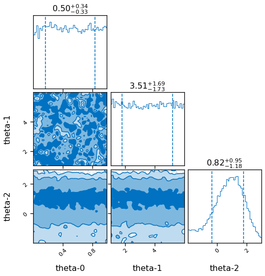
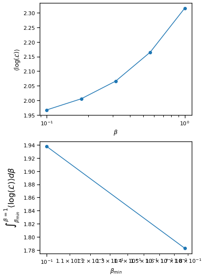
[65]:
pos_predictions_model_1 = []
pos_predictions_model_2 = []
for sample in result.posterior.values:
sample = np.array(sample).flatten()
mean = m1.predict(plot_g, sample[1])[0].flatten()
pos_predictions_model_1.append(mean)
mean = m2.predict(plot_g, sample[2])[0].flatten()
pos_predictions_model_2.append(mean)
pos_predictions_model_1 = np.array(pos_predictions_model_1).reshape(-1,len(plot_g))
pos_predictions_model_2 = np.array(pos_predictions_model_2).reshape(-1,len(plot_g))
[66]:
%matplotlib inline
fig, ax = plt.subplots()
per0,per5,per20,per80,per95,per100=np.percentile(pos_predictions_model_1,[0,5,20,80,95,100], axis=0)
ax.fill_between(plot_g,per20,per80,color=sns.color_palette()[4], alpha=0.3, label='60% model 1')
ax.plot(plot_g, np.mean(pos_predictions_model_1, axis=0).flatten())
per0,per5,per20,per80,per95,per100=np.percentile(pos_predictions_model_2,[0,5,20,80,95,100], axis=0)
ax.fill_between(plot_g,per20,per80, color=sns.color_palette()[5], alpha=0.3, label='60% model 2')
ax.plot(plot_g, np.mean(pos_predictions_model_2, axis=0).flatten())
ax.plot(plot_g, true_output[0], label='truth')
ax.errorbar(gg,exp_data[0],exp_data[1], fmt='o', label='experimental data', color='r')
# predict_2 = m2.predict(plot_g, np.array([3]))
# ax.plot(plot_g, predict_2[0].flatten())
ax.legend()
ax.set_ylim(-1,2.5)
[66]:
(-1.0, 2.5)
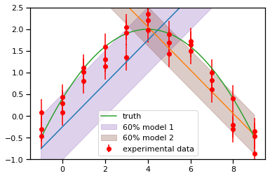
[ ]: